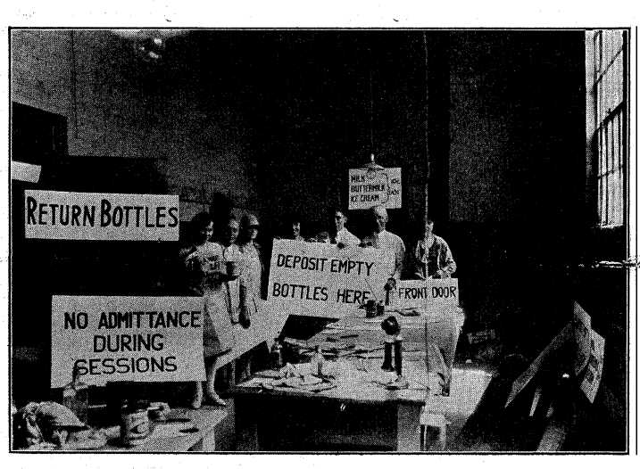
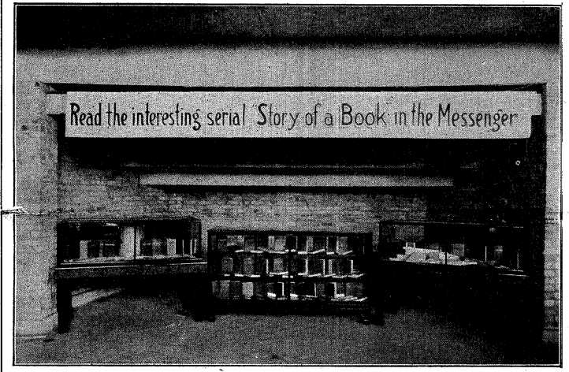
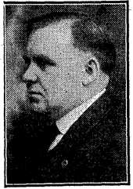

ISSUED DAILY — EXCEPT SERVICE DAYS
1928 GENERAL CONVENTION INTERNATIONAL BIBLE STUDENTS ASSOCIATION, Detroit, Tuesday, july 31
We are sure that all Bible Students at the convention and elsewhere will be interested in the following letters, the one a letter of greeting from Governor Fred W. Green, and following it a response by Judge Rutherford, President of the International Bible Students Association,
State of Michigan EXECUTIVE OFFICE Lansing
June 28, 1928.
To the Members of the
International Bible Students Assn. Gentlemen'.
Michigan is proud of its metropolis, Detroit, and joins in looking forward with interest to the gathering in our largest city of the International Bible Students Assn.
A hearty welcome awaits you and you will find there almost everything that goes to make for a perfect convention.
On behalf of the State of Michigan I am greatly pleased to extend to you an invitation to visit Detroit next year. Much of interest awaits you, not only in Detroit, but about the entire State as well. Michigan will assist in seeing that your visit is a pleasant one.
Sincerely yours,
(Signed) FRED IV. GREEN, FWG:mlh Governor.
INTERNATIONAL BIBLE STUDENTS ASSOCIATION Brooklyn, N. Y.
July 2, 1928.
To His Excellency Fred W. Green, Lansing, Mich.
Dear Governor:
Your very kind letter of June 28 addressed to the International Bible Students Association has been sent to my desk. I thank you very kindly for your words of kindness and welcome. I am sure that the members of our Association attending the convention will greatly enjoy Detroit. I hope that the people of Michigan will be glad that we are there.
Assuring you of my kindest wishes, I beg to remain
Very sincerely, (Signed) J. F. RUTHERFORD, President.
De Troit, the strait. Here it is, just where the name indicates, on the strait through which calmly pass all the waters that flow from the largest fresh water lakes on the globe, Lake Superior, Lake Huron and Lake Michigan. These waters all pass Detroit on their way to Lake Erie, Niagara Falls, Lake Ontario, the St. Lawrence and the ocean.
Oh! We forgot about the water that Chicago steals and turns down the Mississippi River, but why mention something that makes everybody mad except the Chicagoans? The minute you mention Chicago anywhere around the Great Lakes you are liable to start something; for the cities around the lakes do not want dry harbors and they know what Chicago is doing to them.
(Continued on Page 2)
President of the International Bible Students Association
Judge Rutherford has arrived at Detroit, to resume on the spot, the management of the General Convention of the International Bible Students’ Association for the year 1928, for which, along with all the rank and file of the Bible Students, he has been hoping and praying for months past.
But Judge Rutherford has been doing something more than hope and pray; he has been planning and working, and as a result of his efforts, and the blessing of Jehovah God upon those efforts, and the efforts of the lieutenants whom he has placed in strategic positions, it is confidently expected that the General Convention of 1928 will be the best convention of Bible Students that has ever been held.
There are good reasons for having such hopes. The Bible Students have been having conventions for a generation, and know from experience the general features to expect, but there are always happy surprises in store for them, and the General Convention of 1928 will have many of them, and one big one. Just wait and see.
We don’t dare say any more about the happy surprises that the President has waiting for the workers. We have no ambition to grace the interior of a pine box with holy candles at each end and a smell of flowers in the air, along with a clatter of camp stools and subdued conversations about our virtues. We want to see the convention out anyway.
But we will say that the Judge has been working, and if the conventioners don’t have a happy time and a profitable one it Will be their own fault. After all, there is a limit to what one person can do. One person can make the plans, but one person cannot carry them all out, and there will be something for each conventioner to do if this is to be his or her best convention. It will be a service convention. Just wait and see.
Well, the Judge named all his various lieutenants, a generous bunch of them, as the convention program shows, and gave them written instructions weeks ago, telling each one what he is to do, and you will find each one in his station, doing his best to comply and ready to serve in the particular field where he has been stationed.
But there comes a time when instructions in Brooklyn to workers far afield who will have duties at Detroit are transferred to those workers at Detroit itself, and that shift took place this morning, for Judge Rutherford has arrived and already begun his personal handling of the convention at the convention grounds.
We show a picture of him leaving Brooklyn, by automobile. Like many others at the convention he came all the way through by the conveyance which you see him entering. It is some 700 miles, but with perfect roads and a good car and driver 700 miles means only a little over two days, and when you have as strenuous a ten days ahead of you as Judge Rutherford has ahead of him you need to take the way that will make the least nervous strain, and that will give you a little chance for some fresh air and a glimpse of God’s handiwork enroute. (Continued at Top of Page 2)
The Detroit papers, that is to say the other Detroit papers say that there are 15,000 of us here. Maybe there are only 14,999. Ws didn’t count ’em. How could we? We’ve got something else to do. But we saw them, thousands of them, streaming in by boats and trains and busses and automobiles from every direction. We could identify them by their happy faces, many of which we have seen before, all looking forward to the best convention ever.
Bible Students are new creatures. Yes, of course. But they are human beings too, and this is the first convention where it would seem that every angle of the human situation has been taken care of to the best advantage. There has always been consideration of the comfort of the thousands who attend, but this year the arrangements are positively the best ever. The automobile has something to do with this.
Detroit is preeminently the city of automobiles. Every family has one or two or three, and thinks nothing of it. It is rather appropriate then that in this convention, for the first time, a fleet of 125 automobiles meets every boat and every train, grabs every conventioner, and his baggage, and without money and without price whisks him to the convention grounds, lines him up for his room assignment, whisks him out to his temporary home, and runs away to meet more boats, more trains and more happy conventioners.
We feel like saying that all signs point to the best convention; in fact no convention ever had as many signs. Talk about the signs of the times! Even before you get away from the boat or train you see the big round signs on the rear of the automobile calling attention to Judge Rutherford’s great speech on August 5, 9:30 to 11:00 A.M., Eastern Standard time, to go out to all the world over more than 100 radio stations.
When you get up to the grounds, if you go in the main entrance you see “I. B. S. A. Convention” flanking the passage on either side; at the Woodward Avenue and State Fair Road entrances there are similar signs. You glance at the beautiful lawns and breathe a sigh of satisfaction when told that you can walk on the grass if you want to, and nobody will be mean enough or small enough or foolish enough to restrict your reasonable liberties. The grounds are beautiful, no getting away from that, well wooded, plenty of shrubbery, and with plenty of buildings for convention purposes, just the right size and conveniently placed with reference to one another.
As you enter you see the neat little Art Building. That is Judge Rutherford’s convention office. You do not stop. You know better. He did not send for you, and life is short enough at best, so why try to cut it shorter still? The signs all tell you “To the Coliseum,” and so it is to the Coliseum you go first. You better had!
Not saying anything against traveling by train, but it seems as if it had passed its heyday, doesn’t it, when you see the millions of automobiles scurrying everywhere and traveling at almost the speed of your train? Many of the trains that used to be loaded with passengers now have few. Great busses speed everywhere. It is a new day.
The Bible Students have the message of the new day. They are glad to be in convention, the long-looked-for General Convention of 1928. They have confidence in God that they will get some wonderful blessings and some wonderful thrills out of this convention. They have had some already and will have more. They are sure of happy surprises, plenty of them. They are glad to greet Judge Rutherford, their President They know that he has been thinking for them and planning for them for months. They welcome his arrival. Hurrah for the Judge!
He Will Now Have a Chance to Catch Up on His Sleep
Here we see the President’s advance representative, sent to Detroit six weeks ago. In conjunction with Alexander Macmillan he has been busy every day all day all that time getting things in shipshape for the Convention.
The Judge Starting on His 700 Mile Trip to Detroit Convention
“Dick” Johnson
A Trip Through the Convention Grounds
The Convention City
WOODWARD AVENUE
(Continued from Page 1)
But Detroit has no need to fear. The river, where it passes the city, is hundreds of feet deep. Whatever happens to other ports, Detroit will always be sure of plenty of water. And there will always be plenty of boats. Thirty thousand vessels traverse Detroit River every year, making it one of the busiest waterways in the world.
Detroit has no intention of confining herself to water transportation—not Detroit. For her there are some of the finest railroad systems in the world. Over a score of lines the finest trains in the world rush direct to Montreal, Boston, New York, Philadelphia, Washington, Cincinnati, St. Louis, Chicago; and if you can’t get to where you want to go from some one of those towns, then there isn’t any such place.
But Detroit has no intention of limiting herself to water and rail transportation. She is beyond all comparison the banner automobile city of the world, making around three million automobiles and trucks a year, with a value of over two billion dollars. Detroit has taught the world to run around on rubber wheels, and runs that way herself, too.
And finally, Detroit has no intention of limiting herself to travel by water and rail and rubber tires—not Detroit. She is the banner American city for the manufacture of airplanes, and is a pioneer in their use. Detroit now has forty airplane factories, all running full speed.
Do you know why it is that Detroit has given up railroads and is even sort of kissing good-bye to automobiles and going in for aviation? It is so that they can get up to the Fair Grounds and back on the same day. But they have to go some.
Detroit is the fourth largest city in the United States. The design of the city is that of a wheel. Some of the spokes are fifty miles long. It has plenty of parks, 51, and its island park, Belle Isle, is famous far beyond Detroit. The city has its own water works and lighting plant, and its own street car system, but has foolishly turned over to the Detroit Edison Company all right to supply private lighting and power.
The programme or a map or something shows that you go out Woodward Avenue to the Fair Grounds, and the convention is held out there. In a general way the route is the one that Peary and Doc. Cook followed, via Newfoundland, Labrador, Baffin’s Bay, Greenland, the polar circle, and so on all the way up.
After you have ridden for an hour or so you expect every minute that you will run out of the city and see the familiar high board fence that used to show us that we had got to the race track. Then you run into another bunch of big buildings and the city begins all over again. You get discouraged and fall asleep.
You spend a night or so in the sleeper, wake up and rub your eyes. Hurrah! You
SOME OF THE
Here we see, in the order named, some of the representatives of’ various departments of the convention organization: Assistant chairman, hospital, transportation, music, are getting out of the city. No! It isn’t so. It’s only one of the Ford plants, and you have mistaken its lawn for a pasture. Your guide carefully tells you that this is only a little plant, not much account any more, for it has only 30,000 employes. You look down a mile or so of buildings and believe him, or try to.
Edward Lueck
Everett McCosh
Richard Barber
Edmund Walters
Riding along another day or so you fall asleep again, the chariot gives a lurch to the right and you open your eyes again, confidently expecting to see polar bears playing with chunks of the Pope’s cross. But it isn’t so; you are at your destination.
Most of the Bible Students are located within a few hundred miles of the Pole; and so they don’t mind the distance—after they get there.
CONVENTION AIDES
automobile parking, radio hookup, colporteur work, publishing, foreign language meetings, cashier, radio programs, service and bookroom supplies.
George Hannan
(Continued from Page 1)
Over the front entrance to the big Coliseum is a sign—it must be fifty feet long— reading “International Convention, Bible Students Association. All persons devoted to Jehovah, Welcome. July 30 to August 6.” You enter, and the first thing you notice on your left is the office of the Chairman. It says “Chairman” on it, and it also says “Keep Out.” You know the Chairman and you say to yourself, “Just like him. What else could you expect?”
Your guide does not give you time to think of anything mean to say to the Chairman, but hurries you along into the great auditorium with its permanent seating capacity of many thousands in the galleries and its tanbark floor where seats can be conveniently arranged to seat as many more. The Coliseum will comfortably care for audiences of 10,000.
The speaker’s platform is in two elevations, one for use of the lecturers and the other for the workers who, during the convention, rouse one another to great enthusiasm as they narrate their experiences in the Lord’s work, or testify to their appreciation of the truths which He is unfolding to them. Workers’ testimonies are short; the line moves up one little flight of steps and down another.
The platform is tastefully draped with white and yellow bunting. Between the upper and lower platforms is a very pretty sign, “Sing forth the honor of His name. Psalm 66:2.” It is made in red letters with blue shading, on a white background, and has a green border all around the edge. Microphones and a little manuscript table are handy. The orchestra will be on the upper platform.
Returning to the front of the Coliseum your guide offers to take you around the circle beneath the galleries. There is still the Chairman’s office with its inviting sign “Keep Out.” You take the advice. It is best to do so. Why have your friends weeping and wearing crepe at convention time? And anyway, why bother the Chairman when all you want to see him for is to shake his hand and call him “Brother,” when as a matter of fact you know that he thinks this “Brother” business has been overdone and would rather (Continued on Page 7)
Arthur Goux Robert Emery Clayton Woodworth Evander Coward Hugo Riemer Frederick Franz
Adam Donald Amos Eshleman
The Story of a Book
Part I
There is no place on earth that is dearer to God’s faithful “remnant” than the Bethel Home at 124 Columbia Heights, Brooklyn, New York. In a most important sense the president of the Association wishes all such to feel that the Bethel Home is their home. It is the official headquarters, the center of God’s work in the earth.
Perhaps some who read this and appreciate the genuine cordiality back of the above paragraph will feel like rushing straightway into the Bethel; but the “remnant” themselves will not do that, for several excellent reasons: First, they have something vastly more important to do than to spend their time loafing, sometimes called “visiting,” sometimes inappropriately named “fellow-shiping”.
In the second place, when they arrive at the Bethel there will be nobody to “loaf” with, to “visit” with, to “fellowship” with. The Bethel Home is, so to speak, not a guest house, a court house or a play house, but a work house, where 180 husky and energetic young men and active and capable young women are on the go every minute, from the time the rising bell rings at 6:30 until the lights go out at 10:30. They have something to do besides visiting.
So then, you are all invited to come to the Bethel, when convenient to all. Under the circumstances, the best way to come and about the only way to come is by proxy, so that is why we call this “A Proxy Visit to the Bethel.” It is the only way that most of you can expect to see it, or should wish to.
Columbia Heights is on the crest of a small cliff. The lots on the west side of the street fall off sharply sixty feet from the street in front of the Bethel to the street in the rear, so that when one enters at the Columbia Heights street level the new building contains six stories above his head, and if he walks through to the rear of the old building he has six floors beneath his feet. Five floors are common to both buildings and interconnected.
This terrain provides two complete floors below the Columbia Heights level which are cut off from the noises of the street, and yet are flanked on both sides and in the rear by open spaces. On the north of the building and opposite the end of Orange Street is one of the city’s breathing spots.
The park commissioners have had this area terraced and sodded and its borders planted with shrubbery, so that in the summer time the Bethel dining-room is favored on its north side with glimpses of green foliage. It is as though the Lord planned it all, that those who are laying down their lives in his service might have a little taste of the blessings he so lavishly bestows upon the world at large.
The Bethel Location
It is evident that the hand of God has been over the Bethel from the time the old Henry Ward Beecher home was bought, which home was not on the breathing space above described, but was separated from it by another property which was purchased and added to the original Bethel Home in the early part of 1909. One reason for thinking this is that the Lord did not smile upon the efforts which were made to dispose of the property during the stormy days of 1918 and 1919, despite the fact that a building boom was on about then and properties of
Bethel Home, containing the Executive Offices and living quarters of the family
all kinds were being sold at double their purchase price.
In 1926 the property adjoining the Bethel on the south was also purchased and added to the Bethel Home. The three old buildings in the front were removed and a monolithic structure, faced with brick and trimmed with limestone, was erected to take its place. The rear of the recently acquired lot provides a breathing space opposite the dining room on the south similar to the one on the north, except that it does not contain any fountain erected by the city.
In 1909, on the two lots first above mentioned, the Society erected the old Bethel building, a steel and brick structure resting on Furman Street in the rear. Four floors of this structure face on Furman Street but are shut off on the other three sides by the cliff or the side walls of the adjoining structures. These Furman Street rooms serve a very useful purpose in the operation of the home, as wall be described.
There is no sham nor pretense about the Bethel. The structure itself is not ornate in its appearance, either outside or inside, but is built for service and efficiency. People cannot be efficient if they are dirty or uncomfortable or disorderly. Therefore, the Bethel Home is clean, comfortable and orderly. In designing it Brother Rutherford had but one thought in view, that it should serve God’s purpose, be an honor to His name.
Heaven’s First Law Observed
THE first impression one gets of the Bethel is not of stiffness, nor formality, nor reserve; but it certainly is one of order. One rings the bell, the door automatically unlocks, and he enters the vestibule whence he passes up steps into the lobby, where a friendly but businesslike young woman wishes to know his business. Those who have been out in the service work and have made a specialty of canvassing office buildings will suddenly realize that this is a very embarrassing moment and that a real good story must be told or no further progress will be possible.
The Parlor
The Messenger “Idiotorial” Staff, Accompanied by Their Official Photographer, Invaded the Executive Offices on the
Seventh Floor
Perhaps the visitor will say that he wishes to see Brother Rutherford. He may even expect to rush right up to the seventh floor and burst into the study and be greeted like a long lost brother because he is in the truth and Brother Rutherford is in the truth, and likely it was reading his writings that got him into the truth, and therefore he ought to be glad to see him.
But, alas, the young lady smiles at him and asks if Brother Rutherford sent for him, and he feels his pulse and says, No. She picks up the house phone and calls the house manager, and a business-like young man enters and in a few brief questions finds out that he is merely the editor of The Messenger and what he really desires is to go through the Bethel Home.
The house manager explains that while the president, as everybody knows, is a very affable, courteous and kindhearted man, yet he is one of the busiest men that ever lived and has been forced to guard every moment of time as carefully as a pawnbroker guards his diamonds; the president has hours when he sees people. Does the editor of The Messenger wish to consult with the president’s secretary and arrange for an interview? That would be the way to go about it.
The President’s Quarters
Let us suppose that an interview has been arranged and a time has been set. The president’s quarters are on the top floor reached by an Otis automatic elevator, which requires no operator except the person who wishes to make the ascent, and therefore is of no expense except for the electric current necessary to operate it.
One is on the first floor, the elevator may be on the fifth floor. He presses the button, a signal tells him the car is coming. In a jiffy it comes down and stands in front of him. All he has to do is to open the door, step into it, close the gate, press the button indicating the floor at which he wishes to alight, and in another jiffy he is at his destination.
Arrived in the hallway between the president’s study and the workroom of his secretaries, he finds a bench where he may sit and cool his heels until such time as the secretary comes out and tells him that he may go in. When entering he immediately finds Brother Rutherford as genial, kindly and affable as ever, possibly willing to take a moment of his time to show a personal friend his bedroom or his little work place on the roof, where in certain seasons he can do some of his work out in the fresh air and sunshine. Why not? Everybody else finds that a little sunshine is good for one; and it is also good for people who work sixteen hours a day and who must get it while they work or not at all.
His business transacted, and the interview being at its natural end, the elevator is again sought and access is gained to the floor below, where opportunity is provided to glance at one of the bedrooms, of which there are seventy-five in the new building and forty in the old building, practically all alike.
A Typical Bedroom
All the rooms in the house are numbered in such a way that the number indicates the floor and whether or not the room is in the old building or the new building. The two buildings are now really one because the main hallway of the home runs through from front to back. Even numbers are used for the rooms in the new building, and odd numbers for the rooms in the old building
When a new member enters the home he is assigned a room and a seat at the dining room table, and a key number is set apart for him. He automatically receives his key to the Bethel Home sixty days after he becomes a member of the Bethel family. If he loses that key he is out of luck. He never gets another.
A representative bedroom is twelve by eighteen feet in size, with two windows, two metal single beds, good mattresses, springs and bedding, a chiffonier, a bookcase, a pietal waste basket, two study tables, two indestructible chairs, a metal dish for fruit and peelings, one large and one small horsehair rug, a wash basin with hot and cold running water, a radiator, a bath cabinet, and a towel rack with a hand towel and a bath towel for each person in the room, changed twice a wreek. No nails may be driven in the walls, nor may washing of any description be done in the rooms.
Here's the Bethel Family at work on a job they do right well; no covers on upside down, no miscollations, everybody
The rooms are lighted from the ceiling. There is another light over the mirror convenient for shaving. Each room is provided with a nice large sanitary closet, and each door contains an adjustable metal ventilator. There are metal corners on all plastered walls, adjustable window strips and window screens built to last. They are put together with screws and the copper wire is put on
of Bethel Home a Few Days
Before Coming to Detroit, and Here We Show You What
We Got
with copper nails, in the belief that Abraham will be appreciate the job. When time permits, the walls of the bedrooms will be tinted some pleasing color.
Hallways and Lavatories
There is a window in each hall, with a radiator just beneath it. On the first floor there is a runner in the hall. Besides the elevator there are two stairways in the old building and one in the new. Metal fire doors separate the old and new buildings, but these doors remain open except in the case of fire.
As a matter of fact, both buildings are fireproof, yet in order to comply with city regulations there are fire stations on each floor, with one hundred feet of fire hose at each station, so arranged that the hose is ready for use instantaneously in case of fire.
satisfied. (But what a noise they sometimes make with their tools after 8% hours9 handling tons of paper!)
The lavatories are carefully designed so as to be sanitary and easily cleaned. They have been installed with shower baths, less expensive, more desirable and more modern than tubs; although tubs are provided for those who wish them. All the lavatories have outside windows and, also, inside ventilation by means of shafts to the roof.
In each hall there is a linen closet, a soiled-linen closet, a closet containing a hopper for the use of those engaged in cleaning the rooms, and a closet provided with a large bag kept hanging wide open, in which the waste papers from each floor are placed daily. These bags are removed periodically by brethren who also do all the scrubbing pf floors and cleaning of windows.
The stairways are provided with handrails and iron treads. They ought still to be in good condition when Abraham takes over the premises. The electric wiring is so arranged that if there is trouble with the lights on one floor the lights on that floor can be cut off without disturbing any other part of the home. There is a house phone on each floor.
The Service Floor
The service floor for the great Bethel family is on the floor immediately beneath the lobby, which, as previously explained, is yet one floor above the terrain on either side. This floor contains a large and handsome parlor with sixteen pieces of beautiful wicker furniture, an automatic piano, and four ex= cellent rugs. It is equipped with radio, contains some plants, and two of its windows face on the park area to the north. The room is finished in buff. All visitors must be received in the parlor, nowhere else.
Immediately adjoining the parlor, and under the lobby stairs, is a coin-box tele-’ phone booth for the convenience of the family. Next to this is the library, equipped with encyclopedias, files of the Society’s publications, and seven easy chairs. Large pic-tures of Christ and of Brother Russell adorn the walls.
This floor contains the office of the house manager and of the treasurer. The latter office contains a vault, built in, is carpeted, and is provided with a marble counter and wicket gate. Adjoining the office of the house manager is a typewriter room for the convenience of those who prepare radio talks. Next to it is a music room where members of the family practice for radio service. This floor contains the linen room and sewing room, where the linen is kept in repair. Also a blanket room, where the blankets are stored.
On this floor also is the Bethel’s empty hospital, one ward for the men and one for the women. The Bethel family keep well because their food is wisely chosen. Nevertheless, every room is visited the first thing in the morning to see if everybody is up. If not, the case is reported at once to the house manager. The regular house treatment of the sick is the common sense one of an enema, complete rest from food, and plenty of lemon juice and fresh air. In an entire season practically all cases have responded to this treatment in one day; but if results do not come, a physician is summoned. This floor contains two study rooms for the family; no conversation is permitted in these rooms. Every room in the house is a study room, because the home is one for the studv of God’s Word.
A convenience for the family is that all mail and small packages are delivered direct to the rooms.
The Dining-Room Floor
The dining-room floor occupies the second floor below the lobby. It contains one of the meeting-places for the family where its Ber= ean studies and home prayer meetings are held. This room looks out upon the lawn back of what was formerly the Stone place, and is a very pleasant room. Adjoining the meeting-room is the receiving and shipping department of the home, where all packages are received by means of a parcel elevator I which occupies a portion of the grated area
between the sidewalk on Columbia Heights and the building proper.
This floor contains the Frigidaire, in which fresh fruits and vegetables, milk, butter, eggs, etc., are kept at a constant temperature until such time as they are needed in the kitchen. It also contains the food storeroom, a model of order. The barreled foods are in one place, boxed material on another platform by themselves, cereals on another platform, and canned goods on another. All food received is inspected, the weight and quantity are checked, and food not up to the standard is rejected and returned to the seller. Only that is paid for or used which is up to the standard. All food is bought in quantity.
The dining-room proper is fifty feet square with five long tables, each seating thirty-six persons. Each member of the family has a definite seat, and also knows definitely when his time comes to assist with the dishes after the evening meal and on Sundays. On Saturday evening and Sunday noon and evening, meals are served cafeteria style, each person washing his own dishes.
Breakfast is served at 7 o’clock (6 o’clock Eastern Standard time in the summer), dinner at 12:15, supper at 6 p. m. There is plenty of plain, wholesome food, excellently cooked; pies and cakes are few and far between. Fresh fruits in season take their place and are better for everybody. The diet is admirably planned to keep everybody in good health.
Brother Rutherford himself presides at the table. The morning meal is preceded by praise, prayer, the giving of thanks for the food, and includes a consideration of the text for the day. Other meal times provide opportunities for news items and the consideration of Bible or other questions.
The dining-room is finished in buff, with ivory ceiling, and presents a very fine appearance. Frequently there are flowers on the table brought in, perhaps, by those who have been out in the service work. The chairs are indestructible and fitted with rubber tips on the feet, making them noiseless when moved about on the concrete floor. An electric clock gives the exact time, and is so wired as to automatically call attention to itself by a red flag when needing attention.
Table cloths are changed twice a week; napkins the same. There is a loud speaker for the president’s use so that he may be heard in all parts of the dining-room. Next to the kitchen is a dish-washing machine which saves the time of one person a day. Coffee and hot water urns are sanitary and conveniently arranged.
Kitchen and Other Work Rooms
The kitchen is on the same floor as the dining-room, but is cut off from it by a service passageway for the waiters. Access to the kitchen window is so arranged that the waiters pass the opening in one direction only. There they are served with the food in bulk, whence they distribute it to the president and the nine brothers appointed by him to sit at the ends of the various tables. The kitchen itself has a large bakeoven, gas-oven, steam cooker, two steamkettles, a Frigidaire for current needs of the cook, and an ice-making machine. Pots and pans are hung on hooks suspended from the ceiling.
On the first floor below the kitchen is a trunk room so arranged that the single sisters have their trunks on the floor where they have ready access to them, while the others are on racks easily accessible to men. This floor contains another music room, equipped with a piano, where brothers or sisters practise for radio service. It also contains the sisters’ personal laundry room, equipped with porcelain tubs, gas stove, and other conveniences.
The President's Study. Here's where the book starts
His Secretaries Who Get the Manuscript All Ready to Turn Over to the Shop
The Library
Oh how we hate to get up in the morning"
The Story of a Book
The second floor below the kitchen contains “the shop”, an important center for the carpentry, plumbing, steam-fitting, electrical work and machine work in a house the size of the Bethel. Adjoining it is the shoe-shop where, with the aid of a shoe-repair machine made in the Bethel Home, a sister may have the best of rubber heels put on her shoes for twenty-three cents a pair, or may have soles nailed on her shoes for fifty-five cents, or sewed on for ten cents more. On account of their bigger feet, the brethren pay five cents more for their heels and ten cents apiece more for their soles. Serves them right! They have no business to have such big feet.
This floor also contains the housekeeper’s storeroom, where is kept the stock of liquid soap, hand soap, bath soap, ammonia, toilet paper, mops, and other housekeeping supplies.
The third floor below the kitchen contains the Bethel laundry, where the family wash for 180 hard-working men and women is done shipshape in jig time with the aid of the latest machinery. Two men operate the laundry, but receive assistance with the ironing. On this floor there is a machine for pressing suits and coats.
Down on Furman Street, four floors below the kitchen, is the family coal bin, wherein at this time is stored two hundred tons of coal. Here are also the two large boilers for heating the house, with smaller ones used in the summer-time to make hot water. Visitors and strangers are not permitted in the work shops of the home. Bethelites have to keep out, too.
Oh! We forgot to say that from almost any place in the Bethel you can see the old Brooklyn Bridge, practically all of Lower Manhattan, which is the very heart of Satan’s rule in the earth at this time, and the tops of the masts of some of the ships that sail to South America, which are so close that you almost feel as if you could reach out and touch them. Their giant noses lie just across from Furnam Street.
Retracing our steps to the lobby, we notice that both the vestibule and the lobby are finished with marble slabs and that there is a terrazzo floor in foot squares of white, alternating with white and brown, separated by brass rules. We notice that the vestibule is well lighted from the ceiling; has rubber mats in the path of those who may come in with wet feet; and has seats and benches sufficient to accommodate a half dozen persons at a time.
As a last item of interest, we are shown the Bethel register in which everybody who comes to the Bethel must register; nobody comes unless invited. Hope you enjoyed your trip through the Bethel, one of the most interesting as well as one of the busiest places on earth. But if you think that is busy, you ought to see the factory.
(To be continued to tomorrow's issue,)
A Trip Through the Convention Grounds
(Continued from Page 2)
be called “Mister” or just plain “Sir”? We ignore him and go on our way.
Next to him is the office of the publisher; the less said about him the better, and the same is true of the radio department ensconced in the same quarters. We see the same signs here, “Keep Out.” These fellows must either be a lot of grouches or else they have something else to do besides visit and shake hands and fall on one another’s necks and cry “Brother, Brother.” Let’s take the charitable view. Probably they are very busy and don’t want to be disturbed, and in fact can’t be, without seriously interfering with their work.
We go on around the circle. On the right is a Western Union operator busy sending and receiving messages. We keep away from him. On the left is a check room big enough to handle the wraps of 10,000 people. On the right again is a “Convention Bulletin Board,” one of three, reserved for official bulletins.
NOW IS THE ACCEPTED TIME
Notice to all Conventioners—Here they are, packing the books for those that are going out as Jehovah’s witnesses, throughout Detroit and adjacent cities and towns on service days. Go and see them at once, get your books and make all your plans for your share in these blessings, immediately. Do not wait. There are always some who are late for every thing in this life. They are not born when they should be, and they don't die when they should; and they are late at everything in between. Don't be one of the late ones. Be early and be sure to be out with your books when the service days come around. The books are your badges to Detroiters that you are one of the real honest-to-goodness Bible Students.
Forging ahead, we come to the “Book Room” where we find stalls for the sale respectively of Polish, Greek, German, Hungarian, Lithuanian, Russian, Ukrainian and Italian, one stall for each. The English stall is subdivided. There is a separate stall each for song books, Bibles, mottoes and the books of Judge Rutherford, service books, so called, which will be sold on service days. There is a special section here for full-time colporteurs and members of the Bethel family where, it is suspected, those favored mortals get books at special rates not available to the rest of mankind.
Opposite the book room is a most interesting exhibit. Here the workers may see, many of them for the first time, the processes through which a book must go. There is no machinery in this exhibit, but the books themselves are shown, step by step. Curious minds may see the book in its original form as “copy,” then galley proofs, page proofs, mats, stereo plates, press proofs, books assembled, books smashed, books cut, books trimmed, books glued, books rounded, back-lined and cased-in.
Going on around the circle we find the Colporteur Department, where the sale of The Messenger is negotiated and questions are answered regarding the colporteur work. In another booth Territory Assignments are cared for. A large section is divided into stalls where the Regional Directors E. D. Orrell, H. S. Murray, F. H. Dougherty, E. B. Sheffield, W. J. Thorn, M. L. Herr, H. E. Hazlett, George Draper and J. C. Rainbow are ready to receive excuses as to why territory is neglected, and to prove that there is nothing in them.
On the far side of the circle is a special Bulletin Board for the use of the conventioners where somebody who met somebody some years ago somewhere else can arrange to meet somebody some time at some place in Detroit during the Convention of 1928, with a fair chance that he or she will fall oyer that person within five minutes after leaving the Bulletin Board. Nevertheless a board of this kind gives joy to some; so why deprive them of it?
Hard by is the Information Bureau, where a trusted staff is ready to give information on any subject under the sun. Past experience shows that no question can be framed in the human mind that is not put up to these long-suffering individuals. But, when you come to think of it, they don’t deserve any sympathy; else why should they take such a job. Their specialty is validating tickets and telling about the best way to get from anywhere on the planet to any other place on the planet, via Detroit and way stations.
A feature that will be greatly appreciated is a section of neatly arranged writing tables next to the Post Office. Separate windows at the Post Office are marked “Get mail here,” “Messenger wrappers and postage stamps” and “Telegrams”. Mailbags, one for each state, are provided for the mailing of Messengers* Conventioners do their own mailing of Messengers but not of letters.
Next to the Post Office is the department of Room Assignments, and at the conclusion of the trip around the circle is the fully equipped photographer’s office where the official pictures of the convention will be developed and completed.
Adjoining the Coliseum, in the Agricultural Building, is the Polish Convention hall, fitted with 1,200 seats, and connected by wire and loud speaker with the Coliseum so that when Judge Rutherford speaks all may hear. The Hungarian sessions will be held in the Dairy Building, German sessions in the Main Building, Ukrainian sessions in the Electrical Building. Greek sessions in the Machinery Building.
At last reports the Czechoslovakian, Russian and Italian meetings were projected to be held in the Boys and Girls Building, with some fears expressed that too much Italiano in too loud a voice by some fervent lover of Jehovah and His plan might make it necessary for the Czechoslovakians to flee to another of the adjacent buildings. When a real Italian Bible Student gets to going in his native tongue it is time for everybody in the block to move out.
The hospital and nursery are quartered in the beautiful light and airy Women’s Building, an ideal place for them. There are comfort stations all over the grounds.
The “eating place”! Oh yes! You can’t miss it. Five signs head you toward it, and it is a marvel of neatness and efficiency. Sixteen entrances and exits enable 10,000 conventioners to move in and out and up to the grandstand with their lunches in jig time, and good lunches, too. You can’t go wrong. All you have to do is to follow the crowd.
There are whole wheat buns (no white bread—notice that), with every kind of filling that any reasonable man could want in them, ten cents a bun; milk, buttermilk, ice cream, frostbites, ginger ale, all cheap and good. No pop sold on the grounds. Pop is no good.
Parking space for 800 cars is laid off by streets under the care of Bible Student police, whose happy duty is to guide cars in one way and out the other with no delay and no confusion. Every car has its own numbered stall. On the side of the Coliseum is a special parking space for the twenty-five official cars. It is hard to see how the arrangements of the Detroit Convention could possibly be improved upon.
Reports of Monday’s Sessions at the
“Sing Forth the Honor of his Name" By R. J. Martin
The longer I’m in the truth, the more I study the flashes of light that come from the Lord out of his temple, the more I am con* vinced that the principal reason the Lord’s people are on earth today is that they might sing forth the honor of his name. Jehovah’s name stands for himself; it likewise stands for his plans and purposes. As a free moral agent God at some time decided upon strict adherence to the principles of truth and righteousnes and also that such principles should govern the entire universe. And such has been the case, with the exception of two instances so far as his Word reveals, which exceptions have been permitted by him for the ultimate good of his intelligent creation who, like himself, are free moral agents.
The rebellion of Lucifer in heaven and the disobedience of Adam on earth are the two cases of the violation of God’s law. Both of these have resulted in dishonoring his name, in pushing it into a corner, in besmirching his reputation in the minds of practically the whole human race and a great number of the angelic host. Of course Satan was and is the arch criminal; Adam and his offspring are Satan’s poor dupes. Satan has done this in order to exalt himself that he might receive the worship of men and keep them in'subjection to himself. God could have prevented the enemy from so doing; but it is manifestly the purpose of Jehovah to permit Satan to demonstrate his full and complete depravity, that others of his creation may learn the baneful effects of sin and the blessings resulting to those who adhere to the principles of truth and righteousness and who honor Jehovah’s name.
God has not in the past pushed his name to the fore, except at stated intervals, and then not for a selfish purpose, but for the benefit of his creatures. In no way other than loyal faithful adherence to the principles of truth and righteousness, God’s standard, can any intelligent creature either in heaven or on earth enjoy everlasting life. The material universe always has, without any exception, reflected glory and honor to Jehovah’s great name. “The heavens declare the glory of God; and the firmament showeth his handiwork. Day unto day uttereth speech and night unto night showeth knowledge. There is no speech nor language where their voice is not heard.”—Psalms 19:1-3.
While heretofore, with few exceptions, Jehovah has done very little to defend his name, he has kept his good promises to the fore in that he has always had some faith* ful one on earth who has borne witness to his word of promise. The prophets of old, Jesus, the apostles and all faithful footstep followers of Jesus down through the Christian era have with their very lives defended God’s word of promise. His word of promise is his will and is perfect. Right now the time is at hand when the Lord will magnify his holy name before the human family. This great event had its beginning in heaven in 1914, when Jesus assumed the power and authority granted him by Jehovah, ousted Satan and his cohorts, and now as God’s executive officer has assumed control of the earth and in due time will vindicate Jehovah’s name before poor benighted mankind.
The issue will soon be determined in favor of Jehovah. He will have a witness given on the earth for the purpose of magnifying his name and this witness must be given now. The faithful members of the body of Christ on earth are granted the privilege of bearing witness to that great fact. Therefore, God says to them: “Ye are my witnesses and my servant whom I have chosen; that ye may know and believe me and understand that I am he: before me there was no God formed, neither shall there be after me . . . Therefore ye are my witnesses, saith the
The Opening Address Being Delivered by the Chairman at 2:30 Yesterday After, noon.
Lord, that I am God.”—Isaiah 43:10, 12.
Those now in the temple class, God has called and taken out from the world as a people for his name. It becomes their duty then, to show forth his praises. How can anyone who claims consecration to the Lord and who wishes to prove his worthiness of the title “faithful and true” as Jesus did, make participation in the witness work a matter of anything but first importance in this life? Jesus made it the whole of his life after consecration. So did the disciples, except Judas. So did Paul. So did all the faithful ones since Jesus’ day, and so must everyone at this time who hopes to be of the elect class. Brethren, there could be no other way. Let’s not fool ourselves for a moment in thinking that we can spend 95% of our time and energy for ourselves and throw the balance to the Lord as a sop with the hope that somehow we may slip through.
If God required of the Israelites that they should love him with all their understanding, with all their heart, with all their soul and with all their strength, in order to be recipients of his favor and blessing, think you he would be satisfied with less from those whom he intends to make heirs of the great salvation, members of his own court? We can be sure that every one of those who get into the royal family of heaven will be such as has made his covenant with Jehovah a serious matter while in the flesh, in fact, the principal thing in this life. Such a one must be thoroughly and unselfishly devoted to the cause of Jehovah, a defender of his good name. Every other thing in life becomes secondary to him; for has not God promised that to those who would “seek first the kingdom of heaven” all other needful things would be added.
It’s not merely a matter of going to meetings occasionally, attending a convention or getting out into the service once in a while when we cannot think of something we would like to do ourselves. Attendance at meetings is necessary to gain inspiration for field service. But if it is done to show off how much one thinks he knows, he’d better stay at home. Coming to convention is a fine thing if the motive is proper. If one comes simply to meet the friends he hasn’t seen for a year or so and to visit or gossip, it is positively a waste of time and money. But if one comes to learn how to more effectively serve the Lord that he might honor the name of the Lord when he returns to the field, then he will not have come in vain. Such a one will have the Lord’s blessing. Remember, dear brethren, this is the period of the church’s activities when the Lord will have his name made known to the world; and if we don’t do it, Jehovah will have it done some other way. Be either hot or cold. Get in or get out. All those who are lukewarm, trying to walk after the Lord with one foot and after the world with the other, the Lord will vomit out of his mouth, that is, will cast from him as something that is nauseating. Let us all determine by the Lord’s grace to make this convention not only the grandest witness to the Lord’s glorious name ever had in this vicinity, but also the beginning of a most thorough devotion to the Lord, so that henceforth honoring Jehovah’s name is the biggest thing in our lives.
By
J. C. WATT
The desire of the Christian is to be pleasing to the Lord and to have his approval and that which is most pleasing to the Lord now is a cheerful and fearless vindication of his name. The meek he has promised to guide in judgment and teach his way. “Trust in the Lord with all thine heart; and lean not unto thine own understanding. In all thy ways acknowledge him, and he shall direct thy paths.” This reverential attitude toward God is what is referred to in Psalms 111:10 as “the fear of the Lord which is the beginning of wisdom”.
The fear of Adam after his transgression was a dread of God; he knew his course of action was wrong; he was apprehensive, afraid to meet God; he hid himself. Here was the first evidence of decay, which ended in death.
The servant of God has escaped that kind of fear by coming back into harmony with God. By a determination to serve and reverence the Lord, and by the exercise of faith in the means of salvation provided by Jehovah, and finally by Jehovah’s judicial act, which results in his justification, he has peace with God. By determination to devote his life to the service of his Benefactor he will perfect holiness in the fear of Jehovah; which means that henceforth he will be wholly devoted to the service of Jehovah.
He will no longer fear man; nor will he be guided by the views and opinions or practices of men, but by the Word of God and the example of Jesus Christ.
“The fear of man bringeth a snare; but whoso putteth his trust in the Lord shall be safe.” (Proverbs 29:25.) Nor is he dreaming of a time when he will enjoy blissful rest in heaven, but is actively seeking to know the Lord’s will that he may do it.
In Hebrews 11 we read of a number who had this testimony “that they pleased God”, and were well reported of because they feared Jehovah, reverenced bis name and did as he commanded them to do. Noah was one of these, he worked and he preached, and in Genesis, 6:22, we read: “Thus did Noah; according to all that God commanded him, so did he”; he was well reported of.
Enoch, also, before a generation of scoffers, feared God and not man, and witnessed of a coming judgment when evil doers would be punished and Jehovah’s name exalted and honored. His love for God prompted him to action in defense of his name.
Have all who have claimed to love the Lord sought the honor of his name? Behold the course of the clergy of Jesus’ day shaped by the fear of men and selfish ambition. Had Jesus come with the pomp and ceremony of a Caesar, gladly would they have joined him that they too might be popular; but when Jesus came in humble manner, their hypocrisy as servants of Jehovah was unmasked, and condemnation, not approval, was expressed when Jesus said, “Ye are of your father the devil, for his works ye do.” This was subsequently manifested by their course of action in rejecting their Messiah and joining hands with Satan’s organization in putting him to death.
A similar condition obtains at this end of the age among a similar class. From 1914 to 1918 the Lord gave evidence of his “presence” in the earth. (Matthew 24:3-10.) For years the clergy had labored, unauthorized by God, to convert the world and establish peace among the nations. Seeing their hopes shattered by the World War and subsequent events, chief of which was a depletion of membership, they joined in a “Federation of Churches” to make a display, and finally united with the financial and political powers in a “League of Nations”, rejecting Jesus, God’s Anointed King. This was not inspired by a reverential fear of Jehovah, but by “the fear of man [that] bringeth a snare.” This course of action has brought Jehovah’s disapproval; it cannot be said of them that “they pleased God.”
Now, that God has set his King upon His holy hill of Zion, a mighty witness will be given by those who fear the Lord. It will be given in the spirit and power of Elisha, fearlessly and boldly.
How can these witnesses best serve the Lord? The Bible answer is that, when the disciples witnessed from “house to house”, they outlined a method approved by the Lord and used now by those who fear the Lord and keep his commandments (Revelations 12:7). Our Tower articles and Berean studies tell us of “prisoners” in the denominational churches, Catholic and Protestant, who “hunger and thirst” for truth, “bound in affliction and iron.” In Ezekiel 34:6-12, God says he will “both search [these] sheep and seek them out”; and Isaiah 6:8 represents a class now saying “Here am I; send me.” As this class goes cheerfully forth, wearing the wedding garment, and discovers these ones and comforts them, Berean studies take on added meaning.
Our commission is to comfort all who mourn, and to declare the day of vengeance of our God; to preach this gospel, that Christ is here, God’s kingdom functioning and the reign of 1,000 years commenced, that will bring peace, prosperity, life, liberty, health and happiness.
Efficiency increases and is maintained by regularity in the service; spasmodic or erratic efforts do not bring results. You can best serve the people by becoming familiar with the books you present, and then by a carefully worked out canvass, presenting them in a tactful, convincing and enthusiastic manner. Never argue with the people; but strive to leave them in a cheerful, happy mood, remembering that some one will follow you. Do not say cutting things, even if they do; remember you are an ambassador for Christ. Fear lest you bring reproach upon Jehovah’s name.
Remember that an afternoon of canvassing is as important as a Berean study, for Jehovah says, “Ye are my witnesses that I am God.”
Do you see the Devil’s organization opposing God’s organization in a desperate effort to turn the people away from the Lord; that now that wicked organization must be unmasked that the people may see it in its true light; that the nations are marching to Armageddon, and that God would now have notice served to that effect?
Do you see that this will be done by a protected anointed Servant class who fear the Lord? Then ask yourself this question, Am I doing what God has asked me to do, or do I fear the enemy and the reproach that may come upon me? “Sanctify the Lord of Hosts himself; and let him be your fear, and let him be your dread.”—Isaiah 8:13.
ISSUED DAILY — EXCEPT SERVICE DAYS 1928 general convention INTERNATIONAL BIBLE STUDENTS ASSOCIATION DETROIT, Wednesday, aug. i
SAME SUBJECTS
It is easy enough to write something about one of.the Bible incidents when you have your Bible open in front of you, but it isn’t so easy when your Bible is .700 miles away from you and you happen to be in Detroit.
We don’t mean to say by this that there aren’t any Bibles in Detroit. We know that there are, because we know some of the Bible Students who live here. And it is a sure thing that every one of those Bible Students has from one to twelve Bibles in his house.
We don’t even mean to say that there aren’t any Bibles in printshops. We know that there are, because we know.print.-., shop in Brooklyn where there are hundreds of them, and some of them well thumbed too.
The reason we wanted a Bible is because we remember something about the first International Bible Students Association meeting that was held back there in Jerusalem, ten days after our Lord ascended into heaven, Pentecost they call it.
You remember the story, perhaps bettej; than we do. It was a season when Jews from every land were present in Jerusalem because the instructions laid upon the Jewish people required all the faithful to be there at least once or twice a year.
There were Jews there from Phrygia, Cappadocia, Pisidia, Cyrene, Alexandria, Rome, Greece, Macedonia, Parthia. We are sure of some of those places, but not quite sure of all of them, Anyway, they were all there and spoke the different languages of the places from which they came, naturally enough.
The interesting thing about it is that when the holy spirit was poured out upon the apostles at Pentecost, and the apostles went out and preached to this motley throng, the
The main entrance to auditorium where meetings are addressed in English
power of God upon them enabled them to preach fluently in all the different languages.
The result was a mighty witness for God. The people heard and were impressed. It was God’s will that a message should go right away to all those lands and so he performed a miracle and it went. That gift of tongues was for a set purpose and succeeded.
The strangers said: How is this? Here we are hundreds of miles away from home, some of us thousands, and now we hear these men speaking to us in the tongues with which we have been familiar from birth. They listened intently and were blessed.
Surely the angels must have been interested back there at Pentecost, when they saw the eagerness of the apostles to testify to the honor of Jehovah’s name, to his goodness in sending Christ Jesus to be their saviour and redeemer, and noted their willingness to lay down their lives rather than fail to deliver their message.
There is no gift of tongues to God’s true church now. It is true that the Devil does have a modern gift of tongues, a perversion of that blessing at Pentecost, but no Bible Student wants anything to do with that gift. He would rather not have it than to have it.
But there is something up at the State Fair Grounds at Detroit this week that remarkably resembles the blessing of God upon those folks back there at Pentecost. And there are points that are surprising in their correspondency. •
Some of the old nationalities are even represented. Back in the days of Peter and James and John there were Romans who heard them' speak, and what is an Italian but a Roman. In those days there were Macedonians, and today we have audiences of Greeks. And the apostles may have talked to the ancestors of some of our Russian friends. We do not know.
(Continued on Page 2)
And still another
Writing at the Coliseum to the folks back home
While the President., of the Society has been in Detroit since Monday, he made his first inspection of the Convention yesterday. Of course, he has been receiving reports of the progress of the work right along—daily from the workers sent on ahead to do the preliminary jobs, and almost hourly since his arrival. His broad smile, as he made the rounds of the Fair Grounds and watched how smoothly the huge crowd of conven-tioners was being handled, gave the chairman conclusive evidence of the Judge’s approval. And that means a lot to the brethren sent by him to a city a long way from home to complete the arrangements. It may be said right here that much credit is due to the able co-operation of the Detroit classes of Bible Students—the English and the foreignspeaking brethren.
Before his tour of inspection he had interviews with quite a number of brethren who had requested them. It is a fact that at every convention there are many of the friends who have confidential matters to take up with him. Really important matters he is always pleased to talk over with the brethren, but let’s always be sure it is important enough to take up the time of a man who has often expressed the wish that he had three or four bodies that he might do all the work that comes his way.
Our staff of artists painting signs for convenience of Conventioners (No! You’re wrong. Those are ginger ale bottles. The convention is on the U. S. side of the Detroit River.)
The above display of the “Progress of a Book’’, as referred to in the serial now running in The Messenger, brought in hundreds of subscriptions
(Continued from Page 1)
But the important part of it is that today at Detroit there are nine meetings in foreign tongues going on at the same time, as the English meetings, and the whole ten meetings all have the same message, the honoring of Jehovah’s name.
And not only that, but the program has been so co-ordinated that the very same subjects are being presented at the same time in all ten of the languages. Thus, while the English speaker is lecturing on a certain text in the Psalms that same text is being discussed in nine other auditoriums only a few hundred feet distant, by speakers in Polish, Hungarian, Russian, Italian, Czechoslovakian, German, Ukrainian, Greek and Lithuanian.
The foreign meetings are not as largely attended as the English. One could not expect them to be. The French expect to have some meetings some time during the convention, but as there are only about 35 of them on the grounds, and they all read, write and speak English, they have not as yet organized as a convention unit.
A glance at the foreign meetings in progress Tuesday afternoon showed 35 in the Lithuanian meeting, 50 in the Russian, 50 in the Italian, 60 in the Ukrainian, 60 in the Czechoslovakian, 150 in the German, 175 in the Hungarian, 250 in the Greek and 500 in the Polish audiences, while in the main auditorium there were about 5,000 listening to the English discourses.
“Roll Along, Sweet Chariot”—The Bethel Special docking at Detroit
Report of Tuesday’s Sessions at the Coliseum
The Rider of the White Horse
Doesn’t it say something in the Revelation of John about the rider on the white horse? And doesn’t it say something about the riders on white horses that follow him? It does. Of course that is only a picture, for we know that our Lord is the one that is pictured as at the head of that procession, and he is no longer human in any sense of the word and will never be seen on horseback again.
But we cannot help but think about the Revelation picture when we see the accompanying illustration of one of our workers down in the mountains of Kentucky. You know that the eastern part of Kentucky is mountainous, good roads are few, and in some districts almost the only way of access is by horseback.
The settlers back in there are good people,
The Lowe Trailer
The Lowe trailer is an important piece of furniture, you had better believe. Please notice that is is spelled Lowe, and not merely low. As a matter of fact it isn’t low; it’s high and three of the Lowes are up on top of it now, Helen (that is the mamma) and Georgia and Phyllis, the two little girls. If you think those little girls could be had from their parents for a low price just ask Papa Lowe and he will tell you that they are high; that is the high and Lowe of it; there is nobody named Jack in the family, but the little girls do have games, anyway. Just now they seem to enjoy standing on the cartons of books that fill the trailer.
The i'ip of the trailer opens out and
The Lord’s Goat
Most Bible Students know that in the sacrifices connected with the Tabernacle in the Wilderness the bullock represented our Lord and one of the goats represented the true church, the members of the Lord’s mystical Body. Everything that was done with the bullock was done with what Bible Students call The Lord’s Goat.
But now then, in this picture before us, we have a third goat, a real nice little fellow, well-behaved, as you can see, and he is the Lord’s goat, too. Ray Domer has him hitched up to a little wagon for delivering books, and he makes a hit wherever he goes. It would be a hard-hearted person that would turn down an order of books de; livered by such a gallant little fellow.
It looks to us as though Domer ought to get out and trade places with the goat, but that is his business. No doubt he sat in the wagon just to show us that he could get into it, but certainly he couldn’t get into it if it
The Elisha Work
By T. J. Sullivan
descendants of English, Scotch, and Welsh pioneers who moved in there from Virginia and the Carolinas a century ago. A few years ago it was a land of moonshine whiskey and family feuds, where most people went armed, shot first and talked about it at the funeral.
See the happy smile on the face of this colporteur. She has just left a set of ten books in this home and was snapped just as she was on her way to take the good news to some other home. What a pretty horse! We can see only one of the saddlebags. Both were loaded with books this morning, and both will be empty by night. This is what we call suffering for Christ, going out with the happiest message any people ever had, riding around in the sunshine, enjoying God’s fresh air, getting well and keeping well. Some suffering!
makes two beds. One of the mattresses has been spread and the other will be spread in a jiffy now if we don’t interfere with Helen in her work. The tent that will cover both beds as soon as Papa Lowe can get it up is in the foreground. The cooking utensils next to the tent are not aluminum—not any more.
Everything about this camp seems to be complete, even to the family telephone booth in the rear. See the telephone pole next to it. The whole outfit shows careful thought as to the needs of the family, and without a doubt has had and will have the Lord’s blessing. It has been in use in eastern Kentucky.
were full of books, and besides that he’d smash it down. We don’t know just how he manages that cart. It remains one of the unsolved mysteries of life.
It is evident from the foregoing scriptures that the reason the Lord has his people scattered throughout the earth is that the witness might-be given to all. They establish, further, that the obligation of giving the witness in the respective communities rests upon the people of God residing there. The importance of this cannot be overstated. The world is a parched wilderness, as far as God’s truth is concerned; God has created rivers, streams and wells of life-giving and refreshing water of truth for the sin-sick and weary by giving his people thus scattered a knowledge of the kingdom truths, which must spring forth from them individually and collectively to bring blessing to man and glory to God. If a well in the desert is dry it brings neither blessing to man nor glory to God. It is a snare and a delusion to those who expected to find relief there. Likewise, where there are a number of God’s spirit-begotten children, in whom a well of water was created by Jehovah for his own glory and the blessing of his creatures, who refuse for some reason to give forth that life-giving fluid to the parched and dying world, they are neither a blessing to man nor a glory to God; in fact they are a snare and a delusion to the poor groaning creation, who should seek the law at their lips.
It is of great advantage to God’s witnesses to be known in their respective communities as such. In Malachi 2:7 the Lord says, “The priest’s lips should keep knowledge, and they should seek the law at his mouth: for he is the messenger of the Lord of hosts.” It is evident that before anyone goes to seek the law at the priest’s lips, he must first know that such is a priest; and the only way this knowledge will get abroad is by the priest’s faithfully witnessing to the name and purposes of God, and thus manifesting that he is a servant of the Lord of hosts. Speaking direct to the point on this matter, the apostle says, “They may know by your good works, which they shall behold, glorify God in the day of visitation.”— 1 Peter 2:12.
In every case the brethren dwelling in any community are much better qualified to witness to their neighbors than any stranger could possibly be. Most of the Lord’s people dwelling in any community were formerly in a condition similar to that of the people they call upon. The truth comforted and refreshed us, and enabled us to see our difficulties in a different light. Now the Lord is saying to us in substance, “Go forth and comfort your neighbor with the comfort wherewith you yourself have been comforted.” What would constitute comfort for _on.e_ in the slums of a. great city like ^New York would be of little or no interest to the oppressed negro of the South, or to the poor farmer of Oklahoma; therefore, the brother from the slums of New York could not witness so effectively to these people as someone who understands their needs. The same is 'true of every class and community.
It should be ever kept in mind that it is our work, our activities, that does the most effective witnessing. Jesus: said, “For the works which the Father hath given me to finish, the same works that I do, bear witness of me, that the Father hath sent me.” (John 5:36) By thus bearing witness to the purposes of God, each one and each class is thus erecting in their community a standard for the people to rally around when the enemy, bent on their destruction, comes in like a flood.
To witness effectively, there are certairf things that each service committee and each worker should know about their community. They should know what percentage of their territory are churchgoers and how many are not, and what denominations predominate. They should be able to classify their population, wealthy, business, professional, laboring, in a general way, and know where each class resides and when they get paid. Rural population should also be divided into their classes, what crops they raise and when crops are marketed. Note how the Lord had his people of old seek out information in planning their work. Numbers 13:17-20, 21:32; Joshua 2:1.
The name Elisha means “God is my salvation.” The very usage of the names Elijah and Elisha in the Bible indicates that they are intended to depict a work done by the church. Jesus, referring to the preparatory work done before he presented himself as King to Israel, said, “This is Elias which was to come,” thus referring to the work that John the Baptist had done and to the work he and his disciples were carrying on. The work back there was a miniature fulfillment, both in the presentation of himself as King and the preparatory work thereto. The physical facts down at this end of the age, when God placed his King on “his holy hill of Zion”, and the preparatory work done prior to that event, constituted the complete fulfillment of the Elijah work.—Malachi 4:5, 6; Mark 9:11, 12.
The fact that Elisha was anointed in Elijah’s place (1 Kings 19:16) to carry on the work after Elijah was taken away, and that he actually took up Elijah’s mantle and went forward carrying on the work from where Elijah left off, is proof conclusive that Elisha also is a picture of a work that would follow the Elijah work. This work was to take in a wider scope and was of greater variety than that of Elijah. Both were a witnessing work to the glory of God, the Elisha feature of which would be, additionally, one of healing, nourishing and feeding the multitude, Cleansing of the waters and taking out the poison from the food, and a judgment work.—2 Kings 4.
The work of Elisha would be carried on at~a-*time 'When ffe'~wduld~be“ surrounded by” enemies bent on his destruction, but whose efforts would be of no avail because of the (invisible army the Lord had cast around his servant-—2 Kings 6:16,17.
With these facts before our mind there should be no difficulty in ascertaining where we stand on the stream of time, and what is required of the church now.
When Jesus came to his temple and examined that class, to the faithful he said, “Thou hast been faithful over a few things, I will make thee ruler over many things; enter thou into the joy of thy Lord.” (Matthew f25:23) The great joy of our Lord was and is to magnify the name of his Father, to vindicate that name before all of God’s intelligent creatures. Therefore, when Jesus invites us to enter his joy, he is inviting us to co-operate with him in the work he has been commissioned to do.
Jehovah, through his prophet, bears testimony to the same effect when he calls for the gathering of the people and the nations, and invites them to produce their witnesses that they might be justified. Then, turning to his anointed he says, “Ye are my witnesses . . . and my servant whom I have chosen; . . . THEREFORE YE ARE MY WITNESSES, said the Lord, THAT I AM GOD.”—Isaiah 43:8-12.
We have the testimony of the Lord Jehovah and his blessed Son that the only excuse we have for being on earth now, is to be God’s witnesses that he is GOD. Our obligation before the Lord is to faithfully carry out this commission. To do this we must use every faculty with which we are endowed to do the Lord’s work in the Lord’s way.
A question that might well be considered here is, Why has the Lord scattered his people in groups of from five to ten throughout the whole world ? The answer to this is found in the words of Jesus, “This gospel of the kingdom shall be preached in all the world for a witness unto all nations.” This gospel, or good news of the kingdom, must be preached; and in order that this might be done most effectively, the Lord has scattered his people throughout the whole earth, particularly Christendom. In this day of the Lord’s wrath he says: “And there shall be upon every high mountain and upon every prominent hill, rivulets, streams of water, on the day of the great slaughter, when the towers fall. Then shall ye have a song, as in the night when a festival is ushered in.” (Isaiah 30:25,29, Leeser) The Apostle Paul also adds his testimony saying that whosoever shall call upon the name of the Lord shall be saved, but before any can call upon the name of the Lord, it would be necessary for some one commissioned of God to tell them about God’s plan.—Romans 10:13-15.
Solomon says, “The path of the just is as the shining light, that shineth more and more unto the perfect day.” David says, “Light is sown for the righteous.” Light comes from God. To keep up to date we must walk in the light. A failure to do so shows a lack of appreciation for God’s blessings.
Some appreciate these blessings more than do others. This is well illustrated by the ten lepers. After the Master had healed them of that dreadful disease, only one thought enough of the blessing to come back and show this appreciation.
We can be likened unto those lepers. We were once in a hopeless condition, in sin, alienated from God. We have been healed, and are now sons of God. Are we, like the one, showing the Master our appreciation by our actions, or like the nine accepting the blessing and saying or doing nothing?
(Continued on Page 7)
The Story of a Book
Part II
Two blocks north of the old Brooklyn Bridge, two blocks south of the Manhattan Bridge, and in plain sight of those entering the city over either bridge, is the outstanding building of the whole intervening locality, the printing plant of the International Bible Students Association, admittedly the most per- । fectly designed and most efficiently operated plant in the world for the manufacture of high-grade books at low cost. No glaring signs tell the public what is being done in the eight-story monolithic structure which presents such a pleasing appearance to the eye and such an array of window glass.
The building is open to the sun and light on all four sides. Not a thing has been left undone to make it ideal in every respect for the purpose it is designed to serve. From a distance one notices particularly the pleasing sky-line of its roof. It says almost in so many words, “The Watch To<wer is printed here.”
This effect was accomplished at very slight expense by so designing the parapet which surrounds the roof that it looks like the top of a tower, while, in addition, at the top of each of the nine columns of the building on its street sides there are miniature towers of solid concrete. It is not too much to say that the book-making plant of the International Bible Students Association is the handsomest factory building in Brooklyn.
Entering the building through its entrance at 117 Adams Street, one finds himself in a lobby which has a terrazzo floor and craftex walls pleasingly tinted and marked to represent geometrical figures. A sign notifies him that all the administrative offices are on the eighth floor, and that there is no access to any other floor. It also invites him to ring the elevator bell. He does so, and w'hile he is waiting for it to come he has the choice of two comfortajble benches upon which he may sit or he may look*at the specimens of the Society’s books which are locked in a small bookcase set into the wall, or he may study the wall itself and wonder how workmen could draw so many geometrical figures and make such combinations of colors and have no two alike.
Many perplexing problems come with factory management every day. The General Manager of the factory is evidently having a hard tussle with this particular one.
(Caught by Messenger Staff Photographer.)
The Administration Floor
The president does most of his work at the Bethel, not now finding it as necessary as at the first to be at the factory. The factory is now a huge, well-oiled machine, and so long as the machine is turning out ever better and more books, the Judge can give his attention to other matters.
Nevertheless, there are times when his presence is needed in the factory, and so he has an office fitted up on the administration floor.
The Judge’s Private Office on the Eighth Floor of the Factory
Only the elevator man knows whether he is in or out of the building, although it may be truthfully said that he would not be in the building long before one other person would know about it and would be presenting the facts in the matter up for discussion, whatever it might be. The room is large enough for occasional meetings of the board of directors of the Watch Tower Bible and Tract Society. It has sound-proof walls, a rug and hangings.
The passenger elevator is designed to carry fourteen passengers. Its operator is the Society’s office salesman of its publications. His book store is the lobby at which his car comes to rest on the eighth floor. Here are bookcases upon the shelves of which are copies of all the publications of the Society, in each of the thirty-two languages in which its publications are printed. Here visitors may purchase any book or books they desire and local colporteurs may get their orders filled.
The beautiful linoleum floor (enough like tile to fool the very elect), with beautiful old rose and buff craftex walls, and the handsome colors of the new books have the same effect on visitors as Solomon’s layout had on the Queen of Sheba. This makes it very easy for the elevator man to sell books, and he is not entitled to any credit whatever for doing so.
The General Office
An opening from the lobby into the large general office on the eighth floor has a sign above it reading, “General Offices,” with the cheerful and hospitable word “Private” underneath it, which being interpreted means, “Keep Out.” The general office is a mammoth office, 100 feet square. It is finished in craftex, beautifully tinted with primrose green and buff, restful to the eyes of the workers.
By actual count there are 875 panes of glass, all the same size, twelve by eighteen inches, shedding light directly into the general office. This does not include those in the rest rooms, stairways, lobby or the president’s room. These windows and all others in the factory are cleaned inside and out every sixty days. The metal sashes are so designed that ventilation can be had on two levels without the necessity of any draft. The heating arrangements are perfect, the offices never being underheated or overheated. On the east, west and south sides of the building, the windows are equipped with folding curtains to prevent the glare of the sun while at the same time admitting its light.
Some of the interesting desks on this floor are the mail and telephone desk, where messages of every sort, by mail or wire, are first received. The mail desk receives and distributes from 600 to 1000 letters a day, makes a record of all letters, files every letter and its answer, retains a duplicate label of everything shipped out. This desk is one of the twenty-three stations of the factory telephone system by which all departments are interconnected.
Adjoining the mail desk are the desks of the American correspondents (English tongue). One of these, for instance, receives the mail and handles the orders for the New' England states, Pennsylvania, Ohio, Kentucky, Michigan, Montana, Washington, Maryland, Virginia, West Virginia and North Carolina. Another desk is responsible for the orders from another list, and so on for all the states.
Radio and Lecture Department
In the radio and lecture department we see the remains of what was the pilgrim department, but it is a very lively set of remains that is brought to our view. Two redheads are among its shining features. One of them agreeably shows us a map in which are stuck 125 colored tacks in their proper places indicating the locations of the radio stations that at e now regularly on the air with the message of present truth. Far out on the border of the map, in the middle of the deep blue sea, we find eight more pins. Inquiring what they are, we are told that they are stations in Australia, New Zealand and Tasmania, on the opposite side of the world.
Another map is produced showing forty more tacks, representing other radio stations used irregularly. Still other maps with pins in them show the locations of all classes; blue pins, the classes speak English; red, they speak German; yellow, they speak Polish; green, the class is a colored class.
One of these radio and lecture desks gives attention to arranging international hook-ups, and to the question of radio contact with the government, as well as with the so-called organized radio industries, who are intent upon preventing the message of present truth from reaching the people. Hard by is a squad of five proofreaders and news gatherers.
There is a section of the office where, if you dare to toss a ball, you could not be sure whether it would come down on the head of somebody who speaks English or would land on somebody who speaks French, German, Italian, Polish, Spanish, Hungarian, Greek, Lithuanian, Ukrainian, Russian, Armenian, Syrian, or Armeno-Turkish. These faithful workers make translations of books and booklets and The Watch Tower, carry on correspondence, fill orders, do proofreading, and many of them operate the linotypes for setting up the publications in their own languages.
The Dispatch Board
On the outside of one of the walls of the president’s office is the control and dispatch board. This tells the progress of all the . books, booklets and papers in process through the factory. The board shows the expected progress of the different jobs for sixty days ahead. If any job or jobs fail to keep step with the program laid out (and these programs are made a year ahead, based on a sales forecast), then those delayed items appear in red, a constant reminder of the need of special attention. Each day there is shown on the board the actual production of each machine in the factory.
A similar board in more condensed form discloses the working progress of jobs being handled at Magdeburg, Germany, and Berne, Switzerland. The data from Magdeburg and from Berne come weekly by fast boat and are put on the board as soon as received. Thus the president knows every week how things are going in Magdeburg and Berne, almost as well as if he were there in person.
A general map of the United States mounted on a movable board shows at a glance the location of every class in the United States. The board is divided into six sections for convenience of study of sectional sales problems. Ten regional service directors, formerly called pilgrims, have their routes so planned upon this map as to accomplish the best results within a given time. The crop season for various districts is carefully considered in planning their routes. The plan is to have these regional service directors visit every class once a year.
Some Special Desks
An art editor designs covers for books and booklets, catalogues, and calendars, and lends his advice and assistance on the color work of the illustrations in the books.
A foreign desk handles routine reports and correspondence with foreign branches which requires the translation of twenty-three different kinds of exchange into American money.
TAKE A LOOK AT YOUR PRINTERY
New York is the printing center of the world, and so acknowledged by all the rest of mankind. Take a look now at the printery, your printery, which the printers and publishers of the world's greatest city cheerfully concede to be one of the very best equipped printing and binding plants beneath the sun.
We are doing things in this printery that are being done nowhere else, and many of these things, we were warned before we tried them, have never been done and cannot be done. We are doing them every day, all day, 81/?, hours, and the results are here in Detroit and thousands of them will be in the hands of the Detroiters themselves before many more suns.
Lobby—First Floor—Entrance to Passenger Elevator
Reception and Salesroom—Eighth Floor—Exit from Elevator
Southwest Corner of General Office—Eighth Floor
Experience has shown that the size of book best suited for economical manufacture, sale, and use of purchaser is one containing six sixty-four page forms. All Judge Rutherford’s books are written to conform to this plan. It is a very different thing to write with unlimited space at one’s disposal from what it is to tell the same story in a set number of. pages, yet Brother Rutherford has managed to do this, and his books, when set in type, come out exactly as planned, page for page.
All manuscript is read three times by proofreaders before it goes down to the lino-typers. A linotype has a keyboard about three times the size of a typewriter keyboard, and is so constructed that when a line has been written it is automatically spread and cast as one single “slug” or line-of-type. The Society has six linotypes in constant operation at its Brooklyn plant.
An expert 'linotype operator will set in one day 1300 lines of type. This would be equivalent to thirty-six pages of one of the Judge’s books, or twelve pages of The Watch Tower or The Golden Age. As the type is set up, it is handled and stored in galleys, 130 lines of type to a galley.
Now it so happens that the perfect linotype operator, i.e., the one who never makes a mistake, has not yet been born, so “copy” and first galley proofs go back to the proofreaders who compare them diligently to see which lines must be reset. The operator resets the lines, and alas, being still imperfect, he may make an error in the line he resets or the line may be put in the wrong place in the galley. Anyway, the proofreaders must know that their corrections have been made, so the second set of galley proofs is submitted to them.
(To be continued in our next issue)
A purchaser fills all requisitions for supplies, which necessitates a critical comparison of materials, close examination of specifications, and a check on the quality of supplies furnished in filling the orders.
Four colporteur desks lay out territory for the army of colporteurs now in the field, see that they are supplied with books, and handle their correspondence and reports. Two desks handle all the class and colporteur accounts.
One desk figures costs and makes estimates of prices which must be charged for the books. If costs rise above expectations, the system is so devised as to identify the exact department and the exact machine responsible for the increased cost. This cost system balances every month with all that goes into the production of the literature.
Three service desks assign territory to the classes, keep up to date the weekly reports sent in by the classes, and furnish data to the regional service directors as to the department in which each class needs help.
The subscription departments of The Watch Tower and The Golden Age are operated by five sisters and two young men, in connection with an addressing system which operates mechanically and therefore with absolute accuracy. The deleting of expired subscriptions is done automatically. The machinery used for printing a subscriber’s address on a label or wrapper is so devised and constructed that the plate bearing the address is literally dropped from the list if the subscriber has failed to order renewal of the subscription within five weeks after notice of expiration is sent.
The Make-up Floor
Properly we begin the story of the manufacture of a book with the writing of it. If costs are to be kept down, it is essential that the manuscript comes to the compositors in perfect condition. The manuscripts of Judge Rutherford’s books are models of neatness and accuracy.
Northeast Corner of General Office—Eighth Floor
Composition and Linotype Division—Seventh Floor
Electrotype and Stereotype Division—Seventh Floor
(Continued from Page 3)
We have an uptodate message for the peoples of earth today, not one of fire and brimstone or present-day world conversion, etc.; no, that is not uptodate at all, but very much out of date. Our message is one of good news. It is heart-cheering, comforting, inspiring.
But why is this message so unpopular? Well, Noah was a man who walked in the light then due, an uptodate man. Was his message popular? No, only seven other souls believed it. Jesus was up to date, on time, as it is written of him, “When the fulness of time was come, God sent forth his Son.” His message was uptodate, yet it was not received by the majority, but was hated and finally caused his death. So today, the message is hated, unpopular, ridiculed and scorned. What is the message of today?
The King, Christ Jesus, is present setting up his kingdom. He will break in pieces and consume all other kingdoms. (Haggai 2:7; Daniel 2:44) Do we see any evidences of this today? Indeed we do. All nations are trembling, fearful; their hearts are failing them for fear of what they see approaching. Rumblings of discontented masses are heard from all quarters of the earth. Sin, suffering and death everywhere. Do they know the cause and remedy? No! Do you who have been called out of darkness? Yes! Are you telling others, com-
fruit. As in Joseph’s time in Egypt, at the time of famine, Jehovah has used means to gather his great truths into a granary for the use of the people. The Studies in the Scriptures provide the entry to the storehouse. How the hearts of the hungry ones now leap for joy, as they enter to the feast.
On the earth at this time are millions of people of good will, sincerely desirous of bettering their own condition and to see others in happier circumstances, but not alive to Jehovah’s way. To such who see the efforts of God’s witnesses and assist them, Jesus says, “Come, ye blessed of my Father, inherit the kingdom prepared for you from the foundation of the world”. (Matthew 25:34) These people seek deliverance from the bondage of sin. God will preserve many such through the time of trouble. Knowledge of God’s plan can come to these only through that class who love God supremely. This is the “temple class” who have his spirit and can understand God’s purposes and share with Christ Jesus in the work God had given him to do.
Zion, God’s organization, now see Jehovah seated in glory amidst the cherubim. They understand the time has now come when he will restore humanity, when he will exhibit his love with wisdom, and manifest his power justly, to eradicate from human hearts everything contrary to his will. Zion realizes the- necessity of a day of wrath, sweeping away all vestige of sin and sorrow. More and more will people’s hearts fail them from fear, even as prophesied in Zephaniah 3:8.
Those who constitute God’s organization, Zion, will point the people to a way of de-
forting them with the light you have? us all try to be able to answer that in affirmative.
There is too much to be done for us,
Let the
any
of us, to just sit and study and meditate upon God’s plan and do nothing else. We must study to show ourselves approved, but we don’t stop at that. We must tell it out to others or else what we have will be taken away, including our crown, if we are not faithful. The Lord wants something rather than character; he wants service, and he is going to get service; if not from you and
me, it will be from some one else, not need our service; we need it; have it.
Let us resolve before we leave
He we
does must
this
con-
vention that we are going to serve the great Jehovah more faithfully than ever, as the greatest privilege man can enjoy is the mag-
Text: “The Lord reigneth'. let-the people tremble’, he sitteth between the Cherubim', let the earth be moved”
The class of people devoted loyally to serve Jehovah, and who are pictured by the Apostle John, have caught a glimpse of Jehovah seated upon his throne. This class of faithful ones see in Jehovah the great Creator of the universe—of heaven and earth (Isaiah 45:12, 18.) The creation of even this mundane sphere is beyond the comprehension of many wise men of the world; yet this knowledge is available to such.
Jehovah, who “will be all he purposes to be” will have all men come to an understanding of his plan. He has made known that he will have here on this earth a righteous government. The people are desirous of such. They desire order, peace, and health and happiness. This is not found anywhere. Many people are inquiring concerning the Kingdom mentioned in the Lord’s prayer. The need of such a kingdom becomes manifest to the people. The nominal churches no longer feed the people. The nominal church systems are as corpses.
The people tremble in this day of the Lord. They know not which way to turn.
At such times, when in doubt and despair, men’s hearts turn to the Lord. They desire knowledge and seek it. There is a famine in the land of hearing of the word of God (Amos 8:11) The visits of the colporteurs or class workers will then come sharply to mind. Proper working of the territory will find such hungry hearts. Our witnessing for the vindication of Jehovah’s name bears
liverance. witnesses a way of hand be means of
Through the efforts of God’s many will desire humbly to find reconciliation to God. Let not the slack. At all times mention the gratifying the desire to come unto
a knowledge of Jehovah’s plans and purposes such as found in the Scripture Studies, Harp Course and other books. For when the world is reconciled to God and the grand majestic strains of God’s music come forth from his harp, then all the world will join; and blessed will be those who faithfully served Jehovah.
For the word of the Lord is right; and all his works are done in truth.”—Psalms 33:4.
As we study the outworking of the divine plan of salvation on behalf of.suffering hu-
prominently; namely, that Jehovah
A necessary service, then, is that of placing the literature in the hands of the people.
Some of the friends claim to have difficulty in gaining the attention of persons on whom they call from door to door. How may we overcome this difficulty? |
When one has answered the door bell he naturally expects to meet a stranger; and since you have taken the initiative in making the call, his expectation is that you have something important to say. Since you know this, you should so shape your remarks as to immediately gain their attention, and then hold it But how may one do this?
Your opening remarks are of great importance. I suggest that, after Brother Rutherford has delivered his lecture next Sunday, you ask the people the direct question: Did you hear Judge Rutherford’s lecture delivered from Detroit, Mich., August 6? This question will gain attention. Mention the number of countries where the lecture was heard, so as to make an impression; inform them of the number of the Judge’s books sold in Detroit in two days, to create in their minds the desire for the books. At that point say, “The word ‘Yes’, at the right time, has made millions of people happy. You want these books.”
One reason the Lord takes pleasure in his people is because they delight to do his will and to honor his name. The principal way open to most of us to do this is to get out on the firing line and sell books. The text (Psalm 149:4) shows that meekness must accompany the works. To do a thing meekly means to do it obediently, joyfully.
Not only does the Lord wish us to engage in his service meekly, obediently and joyfully, but it is fair to presume that he wishes us to do it intelligently. One could hardly imagine any father’s taking pleasure in an unintelligent son. In going out in the service
we should wish shine, a shave, and a smile on are valuable.
is
the Author of.....his plan; that he is. .w _
out that plan in his own due time; that he never deviates from his fixed plan and purposes; that he has chosen his beloved Son as his chief executive officer to carry; out his work; and that he has invited others to join his Son at this time to effect reconciliation of mankind to God.—2 Corinthians 5:18, 19. .
The works of Jehovah are not like those of Satan, works of imitation or counterfeiting and steeped in hypocrisy and sham; but they are true works and have his approval. In recent years Jehovah has more clearly revealed his work of reconciliation, to his “servant” class. Today we see the “servant” class arrayed in three divisions to accomplish this work.
One branch of this “servant” class is employed in the production of books and magazines containing the message. The second army shares in the work of declaring his doings among the people by placing the printed message in their hands and telling them his name IS exalted. The third army, with the powerful radio, is used of the Lord to pierce the walls of great Babylon, feed the prisoners and dry up the River Euphrates.
For fifty years or more, the Lord has greatly blessed the second armv in bringing many to a knowledge of the truth. Probably ninety per cent of this vast audience have come into the truth by reading the books that this armv delivered to them. Manifestly, then, this work is of the Lord, and any opposition to this branch of the work is lending support to the adversarv. Some are doing this, seeming not to realize that they can never gain anything thereby, but are waging a losing warfare.
to make a success of it. A a fresh collar, clean hands your lips and in your heart
If you fail to get the immediate interest of your prospective customer it gives him an excuse to cut you short in your canvass by saying that he is not interested, and once he has said that, the sale becomes very difficult. Your prospective customer is possibly more or less irritated by your ringing his bell or otherwise intruding upon him.
It is useless to tell him that you have called. He knows that. It is useless to tell h^/hat you have corne^n ,a verv ;ippormt errand. He naturally assumes that. '
If you begin by talking about the weather, you open a fruitless discussion.
If you mention politics you waste precious moments.
If you carry your books in your hands he thinks you are a book agent. You have told him and helped him to make up his mind not to buy.
If your first statement is that you represent an association or society you may awaken prejudice. :
If you say that you are representing the Lord the majority will think you insincere or fanatical. .
If you begin by making some statement of the things you believe, you start an argument immediately. Arguments do not sell books.
An excellent way to begin a Sunday canvass is to say, “I am spending a little time today in Christian work, calling attention to Judge Rutherford’s wonderful lectures on Bible topics, etc.” This Sunday introduction removes prejudice and opposition.
On week days the first remark should be something that will take the hearer by surprise, arouse his curiosity, and cause him to feel that shortly you will give him the full reason for your call. My introduction sells the people Judge Rutherford, and they like it. It accords with humanity’s tendencies. They like to follow one another, and to follow a leader.
There may be a better way of presenting Judge Rutherford’s book than to first present him, but if there is I do not know what it is. Anyway, since stumbling upon this introduction three years ago my average sales have been slightly over fifteen dollars a day.
Would giving the number of books and booklets convey a more favorable impression?
The Year Book text for February 2 is appropriate to the subject of gaining respect for the message that we represent.
“Behold, all ye that kindle a fire, that compass yourselves about with sparks: . . . This shall ye have of mine hand, ye shall lie down in sorrow.” The comment reads: “The true Christians should never look to man or men as the source of light, and wantonly kindle their own spark-giving fires for illumination. Nominal Christendom, as we now see it, has fallen into this very snare. The ecclesiastical leaders have put away the Word of God, the Lamp that Jehovah lit to lighten the Christian’s pathway, and have walked in their own wisdom, and the people with them. Some of these leaders have been more brilliant than other men and have leaped out into prominence. Their natural brilliance and lack of humility were a misfortune to them. Jehovah likens their brilliancy merely to sparks that flare up and soon disappear in the darkness. The people have walked in the light of this ecclesiastical fire and its sparkling bright lights. They now lie down in sorrow. Let us shed on them the cheering light of God’s kingdom.”
Since I have only ten fleeting minutes to speak on the subject of “Gaining Respect,” I will confine myself to stating the points briefly without any trimmings.
(1) In order to gain respect it is essential to have self-respect. If you approach your prospect with a feeling that you are intruding or that you will be mistaken for a real estate agent or peddler, this will manifest itself in your carriage and expression, and your canvass will be tinged with apology. The prospect is thinking more of what you might think of him. So before every gate and door recall that you are a member of the Servant to whom has been committed the ministry of reconciliation, that your message is the greatest thing on earth today, and millions of people are hearing and studying it. I am sure that nobody mistook the Apostle Paul, as he went from door to door, for anybody except a man with a mission of importance.
(2) If your prospect is busy, greet him with a “Good morning” and stand on one side at ease till he is ready. He will be preparing to give you time.
(3) The world is keyed up to the last notch “on the gas”; you will gain respect by handling the interview yourself without getting side-tracked into preaching or into -arguing like a. lawyer. Check up on your? canvass ana jcut out the verbosity. Don’t preach; sell books.
(4) Don’t use undue familiarity in addressing your prospect; avoid slang or local expressions. Leave this to the peddlers of snake medicinte and toilet articles. Most men like to be thought of as gentlemen; and a quiet, personal talk, appealing to their interest in their fellowmen and loved ones, will let them see that you think they are gentlemen.
(5) You will be respected as one with a message for humanity, if you bring it right down to their own family doorstep. Mothers don’t want their boys dragged off to a “holy war” for the Mexican oil wells; Dad lies awake nights thinking about the difficulty of feeding the family and trying to keep up with the children in high school. Tell them of the remedy for world distress that is to solve his problems, and he will know and respect you for a friend.
(6) Speak distinctly and fairly slow; not ponderously like a politician at a mutual admiration meeting, but with warmth and interest. We know we have the truth; we studied and hammered it out for weeks and got our every question answered by the Lord’s channel, but your prospect probably has been too busy trying to live without thinking much about life. Therefore it is not wise to speak as if you were teaching him something he is ignorant of. Take it for granted that he has some conclusions and that what you have will give him some more.
(7) Respectful attention will be gained if you tell of the organization behind you. Tell them the International Bible Students Association has the use of 125 radio stations over which to tell the truth, and then see their eyes pop. (It makes mine pop every time I think of it myself.)
Here they are m the order of appearance tn the symposium: H. Schmid, G. Y. McCormick, J. De Fehr, C. J. Woodworth, H. E. Pinnock, D. Haslett, V. C. Rice, M. L. Hartman,
A. H. Macmillan
D. Haslett
’‘Incline your ear, and come unto met hear and your soul shall live; and I will make an everlasting covenant with you, even the sure mercies of David. Behold, I have given him.for a witness to the -people, a leader and commander to the people.” Isaiah 55:3, 4.
From the above statement it is clear that Jehovah will make an everlasting covenant with the one addressed and that the precious promises made to David will be fulfilled in this covenant. The name “David” means ‘beloved one,’ but it would not be reasonable to think that David, individually, was the one referred to in this text. He merely foreshadowed God’s beloved Son, Jesus; and therefore the everlasting covenant mentioned and the gracious promises to David apply to Jesus and his body, the church, and will be carried out with them.
It would not be unreasonable to suppose that, as David pictured the faithful son of God, Saul’s course pictured Lucifer, the adversary. Saul was the first king of Israel and was anointed by the Prophet Samuel. He was a man of kingly appearance, tall and fine-looking. In time he acquired a selfish disposition and thought more of his own position of honor before the people than of glorifying the name of Jehovah. He. disobeyed God in the matter of the destruction of the Amalekites and confessed to the Prophet that his reason for so doing was, that he feared the people and obeyed their voice and disobeyed the commands of God. For this he was rejected, his kingdom taken away from him, and he himself disgraced.
Lucifer was anointed as the covering cherub to care for the interests of Adam and Eve while in their condition of inexperience. Lucifer is described by the Prophet Ezekiel as being very wise, very beautiful, and perfect. He became ambitious and permitted a selfish spirit to control him. He thought more of his own prosperity and success than he did of the name of Jehovah. He disobeyed God, lost his favor, and will eventually lose all his power and be utterly destroyed.
Before Saul’s kingdom was taken away from him, David was anointed to be king in his stead. While waiting for the Lord to give him the kingdom, he suffered many indignities and persecutions from Saul. However, he did not try to remove Saul, but patiently abided God’s due time to give him the kingdom. Jesus was anointed king to rule in the affairs of men before Lucifer was deposed. The Lord and his followers suffered many indignities and much persecution, but did not bring any railing accusations against the adversary, but patiently waited God’s due time to overthrow him and diligently carried on the wyork the Lord gave them to perform.
David had great reverence for the name of Jehovah and love for his law; and although he made serious mistakes, he was called a man after God’s own heart, not because of his wrong-doing, but because of his earnest desire to serve God and glorify his name. David did not accuse some one else when he was caught in wrong-doing; but confessed his wrong and humbled himself before God. He had an earnest desire to build a house to the honor of Jehovah; and after demonstrating his loyalty to Jehovah, God promised he would make for him a house and that his seed would always rule Israel. Thus the covenant made in miniature with David pictured what this covenant will mean when it is confirmed in completion to the Lord Jesus.
When our Master made a full consecration to the Lord, at Jordan, the everlasting covenant there applied to him. After three and one-half years of loyal devotion to the will of Jehovah, the covenant was conformed to him. All the gracious promises made to David will assuredly be fulfilled to our Master. He will have a kingdom, a crown and immortal life. Before Jesus could receive the benefits and blessings of this covenant, he must be thoroughly tried. Therefore a covenant by sacrifice was made between Jehovah and his beloved Son, Jesus.
While our Lord was carrying out his covenant, Satan, the adversary, did all in his power to destroy him. Because of humility, faithfulness, and love for his Father, he overcame every obstacle and finished his course with joy. At the time of his resurrection the blessings of the everlasting covenant and the sure mercies, of David were assured to him. Acts 13 :33-35.
In harmony with the purpose of God, others were to be taken into this “covenant by sacrifice” and share with Jesus in his glory. These were justified, begotten of the spirit, and anointed as members of the body of Christ; and under him, their high priest, they are offered as part of his sacrifice and are thus in the covenant by sacrifice. These may expect to be reproached and opposed, even as their leader, Jesus, was; but, if they continue loyal and faithful to the end, they will share with him his kingdom and his glory. In due time the great adversary, pictured by Saul, will be deposed, shorn of his
“Mac” in action before the microphone yesterday
power and exposed as the wicked one before all creation. Then Jesus and his bride, having received the sure mercies of David, under the everlasting covenant, will reign and rule in righteousness, in order that all the works of Satan may be destroyed.
In verse four of our text, the prophet states that the one receiving the sure mercies of David would be given for a witness to the people, also a leader and commander of the people. This means that while the adversary is seeking to slander the name of Jehovah, The Christ and his faithful followers would endeavor to give a witness to the people concerning the name of Jehovah.
When Jesus was on earth he p.’STrry* stated that the one purpose of his coming was that he might bear witness to the truth; and he did this faithfully and loyally before his God. True, it cost him his reputation and standing before the people and eventually his life. His followers suffered similarly and, as expressed by Paul, they counted not their lives dear unto themselves, that they might finish their ministry to testify to the grace of God. “But none of these things move me, neither count I my life dear unto myself, so that I might finish my course with joy, and the ministry, which I have received of the Lord Jesus, to testify the gospel of the grace of God.” Acts 20:24.
During the whole Christian era, from the days of our Lord, faithful witnesses have lived on earth; but of all times to witness to Jehovah, this is the most important. Satan has been cast out of heaven; and, realizing that his time is short, he is angry against the Lord’s people, particularly against the remnant who are now faithfully giving the witness. He will do all in his power to destroy them, but his efforts will utterly fail. Jehovah is almighty in power and has promised that nothing will be permitted to come to his faithful witnesses, save that which could be overruled for their good; and he has commissioned the Lord and his followers to now witness to the people and later to the real leaders and commanders of the people to guide them in the way of righteousness.
To some, however, as King Saul, seemingly terrified by the opposition of the enemy and fearing wThat the people will say to them and about them, their own good name and standing in the community, professional business influence seems to be more important in their minds than carrying out the will of Jehovah.
Saul said the people of Israel wanted to spare the king and save the best of the animals. And so, today, some are tempted to join hands with those of the Devil’s organization who do not seem to be so wicked and vile as the others; they want to have the good will of the people and they follow a course that will in the end mean disaster to them if they are not recovered from the snare of the adversary. Some believe that in acquiring a gracious spirit, becoming suave and sanctimonious, they will be pleasing to the Lord; and they think this is what Jehovah desires in his children. Jehovah, of course, wishes all to live pure, clean lives; but it would be utterly impossible for those who are imperfect to attain to perfection of conduct. However, God does expect absolute and complete loyalty and devotion to him, and this any one who so desires can render.
After reading the Year Book text and comment under March 31, the speaker continued as follows:
There is a purpose in every statement of the Word of God, a design of Jehovah behind it all. The purpose in giving command that the memorial of the Passover be yearly is clearly pointed out in this comment, namely, that Israel might ever remember that Jehovah was their Friend and Benefactor.
The same applies to the Christian with regard to the keeping of the memorial of the death of our Redeemer. The fact that only through the sacrifice of the Lamb of God are we delivered from the control of the Devil and do we receive the promise of life, is impressed upon our minds by keeping the feast.
By this knowledge are we made stronger and become better enabled to resist the Devil and take our stand upon the side of Jehovah and for his cause.
What is meant by taking a stand upon the side of Jehovah and for his cause? Surely it can mean only that our one purpose is the doing of his will. We realize that his will concerning us now is that we should be his witnesses in the earth, proclaim the day of vengeance of our God and sing forth the honor of his name.
As we go forth with the message we recognize that our placing the books into the hands of the people is the way Jehovah would have them receive the message. A few minutes’ talk or a few hours’ talk will not carry the message so effectively as do the books. For this reason we no longer say, “I don’t care whether I place the books or not, just so I can give the witness.” Instead we now say, “I must place the book. I must impress upon the people their need of our books and urge them to take them. It is their salvation, and as an ambassador of Christ I am doing the most important work ever assigned to man or angel.”
With this thought in mind we must plan our work, and among other important things we must learn to “manage the interview.”
If your prospect interrupts your canvass with questions, answer them briefly or state that his question is clearly answered in the books, and then proceed with your canvass from the point where you were interrupted.
Never forget that there is nothing of as much importance as to place the message in their hands, and never permit them to forget it either. If you make your message appear as important as it really is they will recognize its value in a measure. Place the proper value upon it yourself, then hold to it and they will accept it at your valuation.
By doing this you will be accomplishing God’s will, you will vindicate his name, you will be working out your own salvation, you will be a blessing to your prospect, and you will be doing your part in bringing about the destruction of Satan’s empire. Keep on; you are engaged in the most important work on earth.
From the rising of the sun, unto the going down of the same, the Lord’s name is to be praised.”—Psalm 113:3.
Friendliness is the act of manifesting friendship for another. The Scriptures define a true friend as one who loves you all the time. (Proverbs 17:17.) The student of the Word of the Lord learns from the study of his Word and from experience that Jehovah is the faithful and true Friend of his creatures. “Herein is love, not that we loved God, but that he loved us, and sent his Son to be the propitiation for our sins.” (1 John 4:10.) “But God commendeth his love toward us, in that, while we were yet sinners, Christ died for us.” (Romans 5.8.) Since man is God’s most intelligent earthly creature, then man’s true friend is Jehovah God.
The human race has had more than six thousand years’ experience in being influenced by the evil god, Satan. The great Jehovah God, who is the true Friend of every one who wants to do right, knowing that man can be happy in no other way than to worship him who is the very embodiment of goodness, has provided that in due time his creatures shall worship him.
The privilege is given to the church at this time to begin the praise of Jehovah and to tell the peoples of earth their privilege of learning of and knowing God and praising him; and what the church is now beginning will never end, because it will progress until everything that lives and breathes will sing the praise of Jehovah.
It is important now to get the message about Jehovah and his kingdom to the people, not because God needs it done for him, but because this is the time which the Lord has set apart for the giving of the witness. “This is the day which the Lord hath made!” To the anointed the Lord has revealed that he has taken unto himself his great power and begun his reign (Revelations 11:17, 18), that he has set his King upon his holy hill of Zion (Psalm 2:6) in order that they may make proclamation of it to the peoples of earth. It is an inestimable privilege and an honor to share in this work. It is required of those engaging therein that they be called, and chosen, and faithful. (Revelations 17:14) Faithfulness means continuance in unswerving devotion to the Lord to the very last.
The Name of Jehovah is now beginning to be praised, and the work of singing his praises will continue until all that hath breath shall join in singing; for “from the rising of the sun, unto the going down of the same, the Lord’s name is to be praised”.
Throughout Christendom God’s message of truth is now being sent. God has decreed that the present witness work must go on until it has accomplished his good purpose. God purposes not only to fully warn the Devil’s “crowd” concerning Armageddon and to give a message of comfort to the sheep class, but also “to proclaim the opening of the prison to them that are bound.”
There is danger of our being relegated to this great company if unfaithful to our God.
The obligation and responsibility now rest upon each anointed one to carry the message to the prisoners. The Lord loves them and has compassion on the prisoners and will free them. Surely then the anointed sons of God will do likewise and aid their imprisoned brethren.
We must do this in order to be holy, even as God is holy, thus proving our love and obedience to our Father.
In canvassing for the books it is of paramount importance to arouse interest to such a high point that the prospect is convinced that he will profit by the books. You yourself must be so absolutely convinced that you have the truth that your prospect can see and feel your earnestness and sincerity.
To awaken interest you must touch upon things in which the people are most interested. As a general rule the people are not interested in the great time of trouble, but the people do want life, health, peace, justice and happiness; they despise death, sickness, strife, injustice and unhappiness. Briefly state the blessings that the kingdom will bring to them. Let the people know in no uncertain terms that the Lord is for the common people and against their enemies, and that all that you are doing is telling them what God is going to do for them.
Fear and unfriendliness is quickly banished by making a friendly remark concerning the children, the dog or the garden; or if the territory is among poor people, call attention to the existing poverty; enter into their very condition and then tell them of the Lord’s remedy. Thus awakening interest and holding it until the end, your sale is almost always sure.
ISSUED DAILY — EXCEPT SERVICE DAYS 1928 GENERAL CONVENTION INTERNATIONAL BIBLE STUDENTS ASSOCIATION DETROIT, FRIDAY, AUG. 3
When you were little, do you remember what a surprise party it was in your family when a new baby came into it? It was an exciting time. Along about the time the baby came there was a lot of mystery in the home, whispering around among the wise ones, but nobody saying very much, mostly letting on that they had more wisdom than they really had.
Well, Wednesday was the big surprise party in the family of Judge Rutherford’s books. Every one knew about the Harp of God, Deliverance, Creation, and even Reconciliation, but only a few wise ones knew anything about Government. The secret was well kept. The Bethel boys kept still. They knew, but they said nothing. It was intended to be a great surprise, and it was.
Let us see if we can picture the setting of it. Try to picture a vast Coliseum, intended to seat about 10,000 people, and with almost every seat filled with an earnest, honest, humble-minded, obedient Bible Student, believing and expecting' that shortly their earthly leader will appear on the platform and tell them something of great importance. It will be his first appearance before the great throng since a year ago at Toronto.
Picture to yourselves a choir of several hundred, specially chosen to give the new songs the swing and thrill that they know how to give when they have a competent musical director; picture the orchestra of a score or more of instruments carrying the tones along and swelling its volume until the ceiling echoes.
Back of the speaker’s platform try to see with the mind’s eye the more somber but solid and substantial backing of the regional directors who are aiding in making this work a success, and with them the other capable brethren that have part in the speaking program during the convention and are there to lend a sort of moral support to the message that they know their president is about to give.
Judge Rutherford
"God’s Lightnings” in his hand
They know that the address of Judge Rutherford will be an important one. They think that in some respects it will be the most important one of the convention. The reason they think that is that it is the Judge’s first appearance and he usually has something on his mind at such a time that he wants to get before the con-ventioners, so that they can mull over it, talk about it, think about it and act upon it when they leave for the field.
Properly enough, there is a half hour’s song service, songs of praise to Jehovah. That gets the audience in a receptive frame of mind, and in a reverent and appreciative frame of mind, too. It is followed by the first lecture of the day, (Continued on Page 2)
Yesterday was the service day specially set apart for city work —and Detroit is some town to cover in one day. Tomorrow is another day, set apart for work in the rural districts. The thousands of workers who at Wednesday’s great meeting had signified their intention of engaging in the field service carried away with them to their territory assignments seventy thousand books.
When it comes to sheer bravery we know of nothing finer than the spirit which persuades thousands of men and women to go out and go from door to door, seeking to place the message of God’s Kingdom in the hands of those who will hear.
The world in general has no knowledge of the true Jehovah God. The only god they know is the Devil. And when men and women come into their places of business, or call at their homes, the voice of one who seeks to interest by calling attention to works which magnify Jehovah God, seems like the voice of one from another world, as indeed in some respects it is.
A business man said: “Well! We have enough books of every other subject, and I know of no reason why I should not have these books on the most important and worth-while subject there is in life. Surely I want the books.”
It was an inspiring sight Wednesday night to see the workers crowding the stalls for their books, and Thursday morning, around seven o’clock, it was a still more inspiring sight to see the lobbies of the hotels crowded with earnest, vivacious workers, young men and old men, young women and younger women, discussing methods and canvasses, each with his or her portion of the books given out to the workers. The giving out of the books was carefully planned. There were regional directors, leaders, instructors a plenty, each with his own sphere of duties, his own territory to cover, his own workers to look after.
A wonderful witness has been given Detroit. No doubt some have spurned the message. It matters not. Thousands upon
thousands of books have been placed. They contain the message of the hour, the message of the Kingdom. The unfortunate ones, the stubborn and hard-hearted, will learn their harder lessons in Armageddon, whither civilization trends.
Those who purchased, and those who read, have been blessed and will be blessed. Many of them will never forget and can never forget the sweet faces and the kindly and intelligent presentation to them of truths of which they wish to know more, and of which they now may know more and will know more, as they read. And the witness is not lost on the others. The day was well spent to the glory of God. What more could we ask?
For an hour and a half this throng of Bible students listened intently to their President's masterful delivery of "God’s Lightnings ”
(Continued from Page 1) a good, stirring, up-to-date Bible talk. And then there is an interval in which all the foreign delegates come in from their nine separate auditoriums to hear the Judge. It takes perhaps ten minutes. It only whets the appetite of the audience. The time is now 10:30 A. M. All is ready.
The Judge mounts the platform, and as his big frame looms in sight the audience rises and sings two verses of the old familiar but ever delightful, “Blest be the tie that binds our hearts in Christian love,” in which the Judge lustily joins.
The address which followed was one that stirred every conventioner to the bottom of his soul. From the first it was apparent that the Judge was leading up to some great event. In his lecture, “Jehovah’s Lightnings,” he did not mention the new book, Government, but looking backward it is easy to see that he had it in mind when the manuscript of the speech was prepared.
The lecture, “Jehovah’s Lightnings,” was all that the great audience hoped that it would be. Twice, on a show of hands, the crowd told him that they were with him to a man and would help him to carry out the program God has entrusted to their joint hands.
The lecture does not appear in The Messenger. If given in full it would occupy too much space. And it is too important, every sentence of it, to be mutilated. It appears in full in the auxiliary of The Messenger, The Watch Tower, where it will not only be seen, but will be in shape to be studied, paragraph by paragraph and sentence by sentence.
Prefacing his lecture proper, Judge Rutherford gave some opening remarks which will not appear when publication takes place in the Tower. These remarks we are glad to reproduce in full. One could have heard a pin drop, all over the great auditorium, as the Judge said:
“It has been suggested by some that this is to be the most important convention held on earth. Whether that be true or not God knows.
Having assembled here we should do with our might what God has put in our hands to do. We know that God’s kingdom is here. We know that the Lord has committed into the hands of his anointed the certain interests of that kingdom. Our business is to ascertain what is his will concerning such interests and then do it.
This is a time of great climaxes. God has revealed his own name and organization to his people. He has uncovered the organization of the enemy to the vision of his people. He has made it clear that now the great issue is WHO IS GOD?
Jehovah has commissioned his people to declare the day of his vengeance. His due time has come to so declare and his anointed must do it.
The purpose of God’s vengeance is to place his name properly before his creation. Due notice of God’s intention to exalt his name must be given to the people. His anointed ones must serve such notice because God has so commanded.
Jehovah has assembled his people at this time and place to give them courage and strength to do the work he has committed into their hands. For them his work is meat and drink from which they obtain nourishment. Their communion with each other in the spirit of the Lord adds strength.
All about his people the enemy organization is strong, malicious and vindictive. Jehovah has spread for his people a feast in the sight of the enemy. It is the privilege of his people to now partake of that feast, gather strength and go forth in the joyful performance of the obligation laid upon
What is it they say when Greek meets Greek? Restaurant? Look at the big force (mostly Greek brethren) required to feed the multitude with loaves and---hot dogs.
It's not a horse race these Bible Students are interested in—rather the "Race for the prize of the High Calling” In between sessions they have to eat and they re sure at it in this, their commodious open air restaurant.
them. To this end we have come to this convention.
This morning I will speak to you concerning God’s lightnings based upon the words of his prophet Jeremiah.”
Then the Judge pointed his whole discourse by demanding to know, Who is on the Lord’s side? Who is going out in the work, not next month, next week, but who is going out tomorrow? And by the show of hands it looked as if everybody in that great audience had covenanted with the Lord to go out on the firing line.
At the conclusion of the Judge’s address the Chairman of the convention, in a few well, chosen remarks, announced the new book, explaining how, in the Lord’s providence, it had been just possible to get it ready for this day, and that it could be had at every exit on the way out. Within a few minutes from the time the meeting broke up it looked like every conventioner had one of the new books in his hands. The Chairman says that it is absolutely the most scathing arrraignment of the Devil’s organization that has ever been penned by man, and that it quotes the Devil’s own crowd to prove that all its statements are true.
The Judge announced that all the sinews of the Lord’s organization would be used to the limit to back anybody who becomes enmeshed by the Devil’s organization while attempting to herald these great truths. A city in Ohio had just offered to withdraw all action against two colporteurs arrested there if only they would agree not to sue the city for damages. The fight is on. Let the fighters fight on and the quitters quit now, the sooner the better. Victory is sure for the King.
Conventioners! Please Note
On the backs of your automobiles are large signs calling attention to the fact that Judge Rutherford's great address on Sunday morning, 9:30 to 11:00 A. M., will be audible on Belle Isle. Conventioners themselves, however, should understand that this address will be given in the Coliseum at the State Fair Grounds. The audi-. tory apparatus at Belle Isle consists of installations of loud speakers, intended for the throngs that usually make Sunday a holiday on Detroit's island park. While the address will be audible through these loud speakers the Judge himself will not be there but at the Coliseum.
The effect of this great meeting upon the immense throng of Bible Students that attended was one to delight the heart. As they poured out of the Coliseum almost every conventioner had one of the bright covered Government books in his hands. Everybody was talking about it. Straightway the groups broke up and hundreds sought a few moments seclusion on bench or lawn to give the new treasure the once over.
A pleasing incident was when one old sister came up to the chairman and said: “God bless Brother Rutherford and you all for all the work you did in getting this book ready for us. It gives us just what we desire, something to do for the honor of Jehovah’s name. We shall see to it that the book goes out right away, far and near, everywhere. You can depend on it.” That is the true spirit, and it is the almost universal spirit of the International Convention of 1928.
How shall our appeal to the people be effectively made? Their houses are full of books from cellar to attic. The more books they buy, the further they get from the measure of life and happiness they seek. Why should they buy more books?
Here are ten appeals which have proved effective. Study your prospect, and learn to use the combination of appeals best suited to the individual.
(1) Not for money. The beauty of this work is that it is not made for money. You can judge for yourself the motive behind this work when I tell you the price.
(2) Marvelous demand. This book (Harp) has gladdened the homes of 15,000,-000 people. Deliverance has been coming off the press at the rate of 22 copies a minute for months, trying to keep up with the demand for it. Creation was released for circulation the first of December. I want you to see what has happened to it. Eleven hundred thousand EDITION!
(3) Not sectarian. Judge Rutherford is one of the few men we have, a man who is big enough to leave off the wisdom of others, and even his own opinions, long enough to call attention to the Word of the Almighty.
(4) Extols the Creator. Common people are sick and tired of the monkey story. Here is the antidote. We cannot stop the flood of foolishness, but millions of people are eager to read of the sensible wisdom of the great Creator, concerning his creation.
(5) Other books all in error. Books written by D.D.’s, L.L.D.’s and X.Y.Z.’s, mean books written by brains water-logged in the wisdom of this world which is foolishness with God. They are written for selfish and exorbitant gain. LB.S.A. books are published without denominational or financial “ax to grind”. They promote unselfishly the worthy name of the Creator.
(6) Children, the strongest single appeal. The children have no opportunity to learn anything about God or the Bible at school. The only thing we can do is to give them a chance at home.
(7) Huge questions answered. “When I was as high as the door knob, I asked some big questions; and I expect you did, too ?”
(8) Not a book agent. Book agents usually have a high price. A lady told me she paid $75.00 for a set of ten books for the children. “But it happens,” looking them squarely in the eye, “That I am not a book agent. I am a colporteur of the LB.S.A., and my work is to share this good news with the people, free. All you pay is a part of the cost of materials and handling.”
(9) No money. This statement usually means “no interest* yet”. Proceed with more appeals. If there are signs of interest, and real lack of funds, proceed with an extra strong appeal, and close for a check, or for money borrowed from children, neighbor, store or elsewhere. You will be surprised at the money that will come out of hiding.
(10) Can’t afford books. Jesus gives a precious promise to the poor. “Seek ye first the kingdom of God and his righteousness, and all these things (to eat and wear) shall be added unto you.” He also said, “Man shall not live by bread alone.” If we get life, we get it by every word of God. Spiritual food is of greater importance than things to eat. We never lose by providing a little of the spiritual food now and then.
Report of Wednesday’s Sessions at the
Prepared for the Remnant
Jehovah has many special blessings reserved for those who love and serve him. He does not bestow these all at one time, but has definite times at which he releases them to certain ones. The time of dispensing the blessing must suit God's purpose and synchronize with the order marked out in his plan.
These conclusions are supported by a text just recently understood, viz. I Corinthians 2:9, 10: “It is written, Things which eye saw not, and ear heard not, and which entered not into the heart of man, whatsoever things God prepared for them that love him. But unto us God revealed them through the spirit.”—Revised Version.
The apostle’s words plainly show that these things, hitherto unseen by eye and unheard by ear and not appreciated by the heart, are to be revealed down here on earth; not to men of natural minds, however, but to those only who have received the spirit of the Lord; in other words, to the faithful members of God’s true church. Nor are these special blessings which God has prepared a revelation of things which the faithful will enjoy after death within heaven’s portals, but are evidently an exhilarating discernment, appreciation and enjoyment of special earthly privileges of approved Christians at a time certain.
Hence these blessings within the meaning of the text have not been enjoyed by Christians all down through the Christian epoch. God prepared them for only a remnant of Christians. That remnant consists solely of those few Christians who, since the stirring events of 1918-1919 A. D., have distinguished themselves from the general mass of professed Christians by keeping God’s orders and commands which apply since that date. Isaiah’s prophecy, chapter 64, proves this, for the Apostle Paul quotes from this chapter of Isaiah; and Paul would not give the prophecy an interpretation out of harmony with the context surrounding his quotation.
Isaiah’s prophecy shows that Paul’s quotation applies at that particular time when Satan’s organization, both the heavenly and the earthly divisions thereof, is due to be destroyed. Isaiah voices the prayer of all true ambassadors of God’s incoming government today: “Oh that thou wouldst rend the heavens, that thou wouldst come down, that the mountains might flow at thy presence ... to make thy name known to thine adversaries, that the nations may tremble at thy presence!”—Isaiah 64:1, 2.
This is a prayer for God to rend Satan’s heavenly controlling forces to shreds and to melt and reduce the mountain-like powers of Satan’s earthly organization to impotence. God now attends to this the prayer of those who are now advertising his anointed King and his kingdom, for the time is due for him to fulfil such a prayer. According to his own decree he limited the time of Satan's uninterrupted misrule of earth through Gentile governments to 1914 A. D. At that date the time arrived for him to begin the universal kingdom of his beloved son Jesus, whom he has anointed to be earth’s rightful Ruler.
All the physical facts of human history since 1914 A. D., the beginning of the World War, fit the prophecies and prove that there God’s kingdom through his Son Jesus began and made its newly-assumed control felt in the earth. But the ruling factors of Satan’s earthly organization spurned the cumulative evidence of the establishment of Christ’s kingdom, choosing the League of Nations as a substitute therefor. Hence Jehovah God will now fulfil the prayer of his faithful remnant by melting the governmental mountains, making his name known to his earthly enemies, and sending all nations trembling to their destruction. Already Satan has been cast out of heaven.
Out of the fiery circumstances attending and following the World War and its sorrows has come forth unto God a remnant of devoted Christians. They had waited for the Lord by attending upon him and his Word and bearing up cheerfully and patiently under the trials, siftings and tribulation that had sorely tested them. They were not pining away with waiting for an early entrance into heaven, but were supremely interested in what was the Lord’s further work for his anointed ones on earth and what share they might have therein. In 1919 the Lord made known to them that the work done up till then and foreshadowed by Elijah had been taken away, and that a vigorous campaign for the newly established kingdom was foreshadowed by Elisha and must now begin and proceed until the complete destruction of Satan’s organization.
Joyfully this remnant responded to the Lord’s invitation to service with a “Here am I; send me!”
Oh, the blessedness that these have since known, the joys of serving Jehovah and his now-installed King; the joys of “the vision of God” 1 Truly since then we “see and hear and know more than [we] hoped for here below.”
The Lord has poured out his spirit upon all flesh, that is, upon all consecrated spirit-begotten ones who are still in the flesh and who have come to Zion, God's organization, and presented their bodies living sacrifices to share in the work of that organization. Their spiritual vision does not grow dim like that of superannuated men, but they like clear-sighted “young men” see newer wondrous things out of [God’s] Word”; they see lightnings flashing from God’s temple organization and perceive that Jehovah’s great Messenger has come to the temple. “By the hearing of faith” their ears hear the Lord’s shout of triumph and his command to his anointed ones on earth: “Ye are my witnesses that I am God. Let the people hear and say it is truth.” These things enter deeply into their unselfish and appreciative hearts and inspire them to obedience to the heavenly vision.
Abounding in “the joy of the Lord” and in the zeal peculiar to his house of royal sons; forgetting the things that are behind and fixing their gaze on the brightening vision before them, they “run” their course in the Lord’s service, determined to live out their earthly lives in faithfulness and thus be completely conformed to the image of God’s dear Son and thus glorify Jehovah’s name.
The Christian’s Mission
When the Apostle Paul wrote in his letter to the Corinthians, “God is faithful, by whom ye were called unto the fellowship of his Son Jesus Christ our Lord,” he emphasized that the Christian was to be a copartner with our Lord Jesus in carrying on the mission which he left for us to complete, which is a commission to “bear witness unto the truth.” For this express purpose God calls only those who have voluntarily declared a desire to do his will, and justifies them for the purpose of making them associates with Christ Jesus in his work, his death and his life. It is for this specific reason that the Christian has been anointed to do the will of him who sent him and is expected to stand unequivocally on the side of the Lord. Unless we use the Scriptures as a guide in carrying out our mission, our efforts are as a hollow sound. Id days past we tried applying the Scriptures to ‘character development,’ only to find out after years of useless labor that our efforts were futile, for we had been trying to accomplish that which we were not instructed to do, while our mission of bearing witness to the truth had been completely overlooked. If the call of and by Jehovah is a summons to the one who has consecrated to do his will, to comply with his covenant, then we should “examine ourselves, whether we be in the faith, prove our own selves.” Faith can be defined as the putting in operation of a mental knowledge and a heart reliance on God, remembering that faith without works is dead. Hence Paul’s exhortation is a command to the anointed to examine themselves, their time, their opportunities, their all, to see if they really are in the faith. Unless we are actively engaged as a part of The Servant in action, then we are not in the faith. If we have faith in God and see that at different times God had different courses of action to suit his own times and seasons, then we should ascertain what his present plan of action is and strictly conform ourselves to his stated purposes. It is very plain to the anointed that God’s special program peculiar to this time is bearing witness to the peoples of earth that he is God; that he has set his righteous King upon his throne to judge the nations, and that all shall recognize his arrangements and bow before his rule.
In years past we tried to entice the people to come out to our public meetings, and in this we were like Babylon; for we were not acting as servants but rather as hosts. By following such a course we did not become personally acquainted with the people’s troubles and thus were unable to give a witness to them in a way that would fit their peculiar case, which caused our labors to be in vain. There are not many wise in our ranks, and therefore the Lord is using the humble by merely asking them to be servants and present the printed page to the people so that they can have a clear conception of the message and have something concrete in their hands after we have left their doors. By so gracious an arrangement there is not now a child of God who, having the physical ability, can not have a part in the glorious witness to the honor of the name of Jehovah, who has provided huge printing presses to turn out the printed page at the lowest possible cost.
If it is very necessary that the people purchase the literature in order to obtain the message of great joy, it is just as necessary that we should be properly equipped to so present the message (canvass) to them that they will know what we are talking about; otherwise, they will not have received a witness and our mission will have been a failure due to our lack of preparation. Hence we must thoroughly demonstrate the books containing the golden truth and unhesitatingly show the people the necessity for their purchasing them at any price. However, we must not overlook the fact that the first few times we call on them they may not buy; so, in a friendly way; we must leave some truth so that they will be less prejudiced and more inclined to listen the next time they are called on with the message.
A golden rule in presenting the message (canvassing) is to meet the people with a smile on the face, which makes us different from the world who have nothing to smile about; then always agree with them. (Matthew 5:25) Thus our visit will be of a friendly nature; and, lastly, we must be sure to leave them in a friendly attitude, so that they will look forward to another visit from us. This, together with finding out what they are interested in, so that our visit will not be boring to them, is the key to successfully accomplishing our mission. When they ask us a question, which is a good sign that they are interested in our conversation, we must be sure not to answer it, as it will kill the sale, but refer them to the literature showing how it answers all their questions; thus demonstrating to them how they really need the literature because it supplies their needs.
The best way for us to sell the literature is to sell ourselves first; for if we are not sold to our own proposition we can never sell it to others. Since placing the printed page in the hands of the people comprises the best witness, the best way for us to fulfil our Christian mission, naturally, is to get the literature into circulation by calling on the people at their doors.
Fixed Periods of Time
All Bible Students know that 1914 marked the end of Gentile dominion and the time when Jesus took his great power and began to reign. It therefore marks the beginning of the most important period of time in God’s plan, the period which Jehovah had fixed long ago as the one for which he would, wait to begin action against Satan and his organization.
When Jesus finished his work on earth, was raised to the divine nature and given “all power in heaven and in earth,” he no doubt desired to use that power immediately in destroying the Devil’s organization, delivering mankind, and thus vindicate his Father’s good name. But he could not, for the period of time set for that work was yet future, and he must wait. Jehovah said to him, as recorded in Psalm 110:1, “Sit thou at my right hand, until I make thine enemies thy footstool.” Thus Jesus was not permitted to then enter the work which would be such a. joy to him; no, he must wait; and this “joy was set before him” until a fixed period of time. That period came in 1914, and “at that time,” said Daniel, “shall Michael stand up [no longer remaining inactive] . . . and there shall be a time of trouble.”
When Jesus said to his disciples, as recorded in Luke 22:18, “I will not drink of the fruit of the vine, until the kingdom of God shall come,” he was referring to the fact that he must wait, and his followers also must wait, until a certain fixed time before they could jointly partake of that which the “fruit of the vine” pictured. Surely the “fruit of the vine” pictured the joy of the Lord which Jesus and his followers have shared since the coming of the kingdom. But I believe it means more than that.
.The “fruit of the vine” is the work of the vine. Jesus said, “I am the vine, ye are the branches.” The church is the true vine. When Jesus was on earth he and his “branches” did a work together; then he left them, to remain inactive against the Devil until a certain time, at which time he began action against the Devil’s organization and thus partook, with his followers, of the “fruit of the vine”, the work of the church, as the “kingdom of God had come”.
Never was there a greater time to be on earth. As we enter into the joy of the Lord and realize that at last the day has come when the Lord is moving forth against evil, our hearts overflow with joy and we proclaim: “This is the day which the Lord hath made; we will rejoice and be glad in it.” And with determination the words of David, Psalm 115:18, rise from our lips, “We will bless the Lord from this time forth and for evermore.” Of this day Isaiah wrote: “In that day shall we say, praise the Lord, call upon his name, declare his doings among the people, make mention that his name is exalted.” (Isaiah 12:4) For “the Lord alone shall be exalted 'n that day”.
How can we declare God’s doings among the people or exalt his name in the earth except by proclaiming his truth? How can the truth be proclaimed? In just two ways, in printed or in oral form. The fact that no one ever made the truth their own until they read, proves that the printed form is the most effective way to give the witness. Long ago the Lord through his prophet spoke of this (Isaiah 34:1, 2, 16): “Come near, ye nations, to hear; and harken, ye people; let the earth hear, and all that is therein; . . . for the indignation of the Lord is upon all nations. . . . See ye out of the book of the Lord, and read.” True to this scripture the Lord has put his message in printed form, and it is our happy privilege to take it forth to the people.
But some one says, “That means work.” What of it? The forces of darkness have been working for six thousand years, unhalted, and they have worked faithfully; but now the fixed period of time has come for the Lord and his people to work, and in the words of Psalm 119:125, 126, they cry: “I am thy servant; give me understanding, that I may know thy testimonies, [as] it is time for thee, Lord, to work.” The Lord has answered this prayer of his people by giving them the food convenient for them in The Watch Tower, and by ‘teaching their hands to war and their fingers to fight’ (Psalms 144:1) in the monthly issue of the “Workers’ Bulletin” and “Directors’ Letter”.
No organization can work effectively without working harmoniously. That Zion would so work at this time the prophet foretold when he wrote: “With the voice together shall they sing; for they shall see eye to eye, when the Lord shall bring again Zion.”— Isaiah 52:8.
Therefore, as we rally to this great work of the church which the Lord is sharing with his people, let us remember that just as the walls of Jericho fell by Israel’s unitedly following instructions; just as the armies of Ammon, Moab and Mount Seir were vanquished only as Israel followed common instructions; and just as Gideon’s brave three hundred defeated the host of Midian by following instructions, looking to their leader and doing as he did, so only as we unitedly, concertedly and harmoniously, with the same spirit, fight for the same cause, with the same weapons, under the same Captain and following the same instructions, shall we maintain that unity characteristic of God’s people and have his blessing in exalting his name in the earth.
Tomorrow is the fixed period of time at this convention to move forth into action. When Jericho fell all Israel marched; when Ammon, Moab and Mount Sier were defeated all the singers sang; and when Gideon’s three hundred gained their victory they all shouted, they all broke their vessels and they all ‘let their lights shine.’ And so, my brethren, let us all take some books, let us all go forth, let us all break our vessels in letting our light shine, that men may know that he, “whose name alone is Jehovah, [is] the Most High over all the earth.” For ‘the Lord alone shall be exalted in this day".
“Jehovah hath . . . made my mouth like a sharp sword.”—Isaiah 49:1, 2.
The “servant” must plainly declare the truth, which truth serves as a “sharp sword” and as “a polished shaft” directed against the enemy of the Lord. Let no one construe this to mean that harsh and vindictive speech is authorized. Those of Jehovah’s “servant” class tell the truth in the spirit of the Lord; and the truth, sharp as a two-edged sword and like a piercing shaft, accomplishes the purposes of God. It is manifest then that those who bear witness are to use no carnal weapons to accomplish destructive work. The “faithful and wise servant” class will tell the people plainly of Satan’s wicked organization, and that Jehovah is God and that through God’s organization complete deliverance shall come. All members of Jehovah’s elect Servant will join in this proclamation as opportunity is afforded.
We are all workers now, whether we are pioneer colporteurs or not. For thus we show our unselfish love for the Lord. In obedience to the Lord’s commands we go to the people with the books containing the kingdom message. In presenting the books to the people our remarks should have one objective, and that is: Pressing for a purchase.
Our opening remarks are important, but our closing remarks are very important. There is quite a distinction between being overbearing and being persistent Courteous, considerate persistency which manifests a feeling on the part of the worker that perhaps the matter has not been fully presented, and that he is anxious to be of real service, will often bring from the person canvassed questions or remarks that will manifest what further steps you should take in supplying the information necessary for him to act favorably.
(Continued on Page 6)
Thousands of conventioners who had spent the greater part of yesterday in the service work swarmed back to the Coliseum to hear what the Judge had to say to the elders. Here’s every word of it.
Recently The Watch Tower published some questions and answers relating to the elders and their duties in the church. Shortly thereafter a letter was received from an elder in a certain class and among other things in the letter, it was stated in substance, that “in the class, of which the writer was a member, an elder made a speech saying that he did not approve what The Watch Tower said about the elders; that it looked to him very much like lambasting in the nominal system; and that after the elder had finished, another, who had just been elected, arose and severely criticized The Watch Tower, saying that The Tower was being used to set the elders up as targets and to ridicule them”.
I want to assure you that The Watch Tower has no desire or disposition to hold up any one to ridicule nor to make them targets nor to say anything unkind about them. I mention the foregoing instance that we may have a better understanding of the situation. The Apostle Paul directed Titus to go amongst the classes and “set in order the things that are wanting”. (Titus 1:5.) When it appears that there are things wanting in the church it is proper that steps be taken to set in order such things for the good of the cause which we all love. Since The Watch Tower is the means of communicating to the church and calling attention to that which is wanted, it appears to be entirely proper, and the duty of The Watch Tower, to call attention thereto. This is done only in the spirit in which the apostle directed Titus. I am sure that all who have the spirit of the Lord will recognize the importance of doing all things orderly and in the order which the great God of the universe has directed.
This meeting was arranged that we may have a better understanding of our duties, privileges and obligations as elders of the church of God. Paul the apostle set the precedent for calling together the elders to consider ways and means for the betterment of the service. While no one on earth at this day occupies the position that Paul occupied in the church, yet we must recognize that there is an organization of the Lord on earth and that when we assemble we should consider matters that will mutually aid and benefit all of us. This should be done with no other view in mind than to do good.
Before discussing our duties and privileges more in detail I am going to propound to each of you a few questions and ask you to give answer thereto, in order to enable us to see eye to eye and to determine what things, if any, should be set in order.
(1) Do you believe that God has a great organization over which he presides and that Jesus Christ is his great executive Officer to carry out Jehovah’s purposes?
(2) Do you believe that the anointed members of the church now on earth constitute “the feet of him”, The Christ, and that these are members of God’s great organization ?
(3) Do you believe and see that Satan has a great organization over which he presides, and which is the enemy of God and of Christ and the oppressor of mankind?
(4) Do you believe and see that it is God’s purpose to destroy Satan’s organization and to establish his righteous government for the benefit of all his obedient creatures ?
(5) Do you see and believe that the enemy organization has greatly defamed the good name and reputation of Jehovah God and that the time is at hand for all members of God’s organization to magnify his name by telling the people of his doings and his purposes as set forth in the Scriptures?
(6) Do you believe and understand that God purposes to have notice given to the nations of the earth concerning his name and his kingdom and of his purpose to destroy Satan’s organization, vindicate his own name, and bring blessings to the groaning creation ?
(7) Do you believe and understand that God has commanded that the anointed must be his witnesses to serve such notice and that to do so is the greatest privilege that we can now enjoy; and do you approve and fully concur in the arrangement and the practice of the anointed in going from door to door and giving witness to the people?
If we see these things eye to eye and can answer these questions in the affirmative, then we must be sure that Jehovah, the great Head of his marvelous organization, would do all things orderly and that no one of God’s organization could be pleasing to him unless he honestly and sincerely put forth his best endeavors to conform to God’s way.
The anointed class means the kingdom
The Chairman and his Assistant getting some final instructions before the meeting.
class; and all members of God’s organization that are pleasing to him and doing his service are the anointed. To be anointed means that one is clothed with authority to act; and all the anointed of God must be acting under orders from the great Executive Officer of Jehovah, to wit, Christ Jesus. The time must come when God will clear out of his organization all the disorderly or lawless ones. This is made clear by the words of Jesus referring to the work that would be done in the closing days of the church’s experience on earth. He said: “The Son of man shall send forth his angels, and they shall gather out of his kingdom all things that offend, and them which do iniquity.”
Iniquity means lawlessness and necessarily refers to those who refuse to conform to God’s announced way of doing his work. Many of the elders have fallen away from the truth and from God; and manifestly the reason is given in this text by the Lord Jesus. It therefore behooves every one who is an elder, as well as every other one who is a member of God’s organization, to take heed to himself lest he be found in the lawless class. We call each other’s attention to these matters and try to aid each other.
How Made An Elder
It should be kept in mind how one is really constituted an elder. If the election of the ecclesia was held as the Scriptures point out; if the members of the ecclesia sincerely invoked God’s guidance in making the selection of the elders, then we may be sure that each one elected was elected an elder by the will and power of God. Paul, then speaking to the elders at Ephesus, said: “Take heeed therefore unto yourselves, and to all the flock, over the which the holy spirit hath made you overseers, to feed the church of God, which he hath purchased with his own blood.”—Acts 20:28.
At once we should see that the position of an elder, if selected according to God’s Word, is an important one. Important because “God hath set the members in the body as it hath pleased him”, and this setting refers to the organization of the church on earth. To hold a position in God’s organization is of very great importance.
The office of an elder is a responsible one because when the Lord gives his creatures his message and a commission to perform his certain work he clothes such a one with great responsibility. As members of God’s organization, then, the elders need that wisdom which is from above and the spirit of the Lord to carry out the work they have been commissioned to do. No .one should treat lightly the office of an elder, because he has been anointed and clothed with power to represent God and his beloved Son.
The office of an elder is one also fraught with great temptation. When Jehovah anointed his beloved Son as his great Priest he permitted him to be subject to the most severe temptations. The servant is not greater than his Master.* To his followers Jesus said: “In the world ye shall have tribulation, but be of good cheer, I have overcome the world.” (John 16:33.) It is the overcomers of the world that shall share with Christ Jesus his kingdom and his glory.
Desiring to know the manner of the subtle temptation to which the anointed of God are subjected we have but to look back to the experiences of Lucifer. He was the anointed cherub or officer of Jehovah. He became greatly impressed with his own importance. He was proud of his personality and his power. That really was the cause of his fall. Since then his wicked course is indicated by his names. As the Devil he presented the identical temptation to Jesus immediately following his anointing. The rule is therefore established that the most subtle temptations to which the anointed of God are subjected are those of pride, ambition and self-importance.
Peter recognized this, and he wrote to the elders, saying: “All of you be clothed with humility, for God resisteth the proud, and showeth his favor to the humble-minded.” Humility means to be obedient. Obedient to whom? To man? No, but to be obedient to the rules of God’s organization which he has prescribed. It is not an unusual thing for the Devil to use some member of God’s organization as an adversary in that organization. If the Devil would use Peter as the adversary of Jesus, then we may be sure that he would use some consecrated one to be an adversary of elders; and, since the temptation is along specific lines, it would subtly come through some who claim to be consecrated to the Lord.
As for example: A brother has some gift of speech. He has an easy appearance in the presence of others. His voice sounds good to his own ears, and some times it thrills the cars of others. His personal appearance, his attitude, his flights of oratory, his gestures, often thrill his audience. When his speech is done, his audience have not had an opportunity to follow sound reason, nor have they heard much sound doctrine, but their emotions have been appealed to.
Following the discourse some rush up to the elder who has spoken and say: “Brother, what a wonderful man you are. Oh, that was a great speech you made!” That little speech to the elder tickles his fancy. He loves to hear it and he asks that the compliment be repeated, as probably he did not get it clear the first time. Just then and there the Tempter is after him and he does not seem to realize it; nor does the instrument that is being used realize the difficulty. The more the elder turns this matter, the compliment, over in his own mind, the more he is impressed with himself and his importance. He soon develops a very high respect for himself. He begins to regard his reputation amongst the brethren as a thing greatly to be desired. Then in the organization or outworking of the affairs of the church there comes to him that which jars his dignity. The circumstances that arise pinch his pride and he says: “I cannot submit to that and maintain my self-respect; therefore I will withdraw from the position in which I am placed.” That brother is then on very dangerous ground. If he had reasoned soundly he would have said: “Nothing can happen to me but by my Father’s permission because I am anointed by my Father and I love him; therefore there must be some lesson in this trying experience for me. I will be submissive and learn my lesson. I will not permit any wounding of my pride to cause me to slack my hand in the service of the Lord. My self-respect amounts to nothing. My approval with the Lord amounts to everything, I remember that it is written concerning my Master that he made himself of no reputation. Why should one of his followers take a contrary course?”
The history of the church shows that more elders have fallen because of self-esteem, pride and ambition than from all other causes combined. That is just exactly as we should expect it, because that was the rock upon which Lucifer was wrecked. Manifestly that is the reason the Apostle Peter wrote these words: “The elders which are among you I exhort, who am also an elder, and a witness of the sufferings of Christ, and also a partaker of the glory that shall be revealed: feed the flock of God which is among you, taking the oversight thereof, not by constraint, but willingly; not for filthy lucre, but of a ready mind; neither as being lords over God’s heritage, but being en-samples to the flock. And when the chief Shepherd shall appear, ye shall receive a crown of glory that fadeth not away.”
Mark the apostle’s words. He was exhorting his brother elders because he was an elder himself and a witness for the Lord, and he spoke from experience as well as by inspiration. He set the precedent that we should follow. He showed that it becomes our duty to exhort one another and to point out these pitfalls to each other. If we really love each other we will do so, and all who love the Lord will receive the exhortation in the proper manner.
Flattery is the tool of the Devil; and he uses it, and uses members of the church as his instruments to administer flattery for the very purpose of wrecking those who are elders. If a brother is put in a position and the opportunity is afforded to glorify the name of Jehovah he may expect these subtle attacks from the enemy and should guard himself against them. An elder should turn away from flattery and spurn it as a deadly enemy. Let all refrain from flattering those who occupy the position of an elder. Instead of telling a brother what a wonderful voice he has, how marvelously he has delivered his speech, or how great his appearance upon the platform and what ability he possesses, those who love their brethren will say to them, in substance: “I thank God that you have the zeal and unselfish devotion to the Lord that is indicated by the Scriptures, and that your chief desire is to war against the enemy and to exalt the name of Jehovah.” The statement of flattery is from the Devil. Words of encouragement are in harmony with God’s Word and are proper. All the members of the church and the elders themselves should look upon each other as fellow servants and encourage them in proportion to their faithfulness and devotion in giving witness to Jehovah’s name.
It was in connection with the giving of the witness to the truth that Paul said to the elders: “Take heed to yourselves.” Manifestly that means to be watchful of oneself and see that he is exalting the Creator and not some creature, and also to see to it that he permits no creature to exalt him. The practice of a speaker’s leaving the platform and rushing down to the rear to shake hands with all the congregation is another subtle means of the adversary in exalting creatures and forgetting the Creator.
Organization
You have signified that you see that God has a great organization; that Jesus Christ is his great Executive Officer of that organization ; therefore we must know that the saints who have arisen from the dead and the holy angels of heaven are a part of that organization. Furthermore that the anointed on earth are also a part of that organization; and that the great objective now is to exalt the name of Jehovah because his organiza-
tion is moving into action against the common enemy; and that the time has come for Jehovah to make for himself a name, that the people may see that he is the only source of blessing.
We should have confidence in the Lord that if any part of his organization goes wrong he will correct it. If any one in the organization gives an improper command the Lord will make that manifest in due time. As a part of his organization he Itas his anointed ones on earth to carry out a part of his work according to his commandments. We believe that his anointed, as a company, constitutes really the Society, as we use that term. Somebody in that visible organization must formulate plans of operation. It seems to have pleased the Lord to have this done at the Society’s headquarters and that from there regulations are sent out to the various ecclesias. The elders in some ecclesias have not received these regulations joyfully, but, on the contrary, have resented them. Some elders say: “We are more important than the service director. As elders we will do as we please. We will not set aside our personality by getting in line and doing what headquarters has asked us to do, especially when that direction comes through a service director. We cannot maintain our self-respect and so do.” Now where such an attitude is manifested one of two things is absolutely certain: Either the Society is no part of God’s organization, and therefore has no right to issue instructions for action,. or else the elders who take a position opposing are wrong in that opposition. If the Society is a part of God’s organization and it issues improper instructions the Lord will correct these in due time. If an elder cannot conscientiously comply with the instructions that are given, then he should remain quiet and let the Lord attend to any misstep of his servants. There is nothing in the Scriptures that warrants him in taking a position in opposition to the method arranged to carry out the witness work of Jehovah.
A Lesson
Everything in God’s great arrangement is orderly so far as he is concerned. Those in full harmony with him desire to be orderly and to do everything in order. “Let all things he done decently and in order.” (1 Corinthians 14:40.) It seems that one of the hardest lessons to learn is that of order and obedience to God’s arrangement.
God’s organization on earth must of necessity be like a well-arranged and well-operated machine. It must be suffciently oiled with the spirit of the Lord and it must run smoothly. In every machine each little part performs its function. In God’s machine each component part must perform its function. That means that each one must perform what is assigned to him and not to interfere with other parts of the organization. If friction occurs in the operation of the machine it is manifest at once that some part of the machine is not working harmoniously. There is something out of order. If every one were willing to sink his own individuality, his good name, fame and reputation, and his high self-respect, and exalt the name and cause of Jehovah above everything else, he would joyfully perform the part assigned to him and there would be no friction.
The Society formulates the plans of operation for the field work. Why does it do so? Because God has placed the responsibility on his earthly organization to do a certain work and some one must arrange the mode of carrying out that work. The Society sends out directions in order that all the classes may work in harmony. Here and there in a class some elder rises and says: “No, we will not be governed by what comes from headquarters. We will conduct our part of the work to suit ourselves; we know how our work is to be done, and that is the way we are going to do it.”
Now for a moment let us suppose that every ecclesia in the land should be of that mind. What would result? Confusion and disorder of course. Nothing would be carried on harmoniously. Where would the blame rest? Chiefly upon the elders, of course, because they are made the overseers or counselors ;and it becomes their duty to counsel and advise in complete harmony with God’s appointed way in carrying out his work. The Lord is not divided, and his work is not divided. A good counselor is not looking to self-interest, but to the general welfare of those whom he has been appointed to counsel.
But some elder will respond: “We are just as wise and even wiser than the brethren who are at headquarters.” No doubt that is true, but that is not the question at issue. The apostle said: “Not many wise are called”; and probably it has not pleased the Lord to put any of these wise up at headquarters; but we will leave that to the Lord. I am reminded that when Jeremiah was directed by the Lord to speak in the name of Jehovah and to prophesy, he was a very young man. Doubtless many of the elders of Israel said of him: “Look at that young stripling. We know more than he does. We will not heed his words.” Jeremiah felt his own insufficiency, but God commanded him to go on, and he did go, and plainly told the truth to the elders as well as to others of Israel.
Let us all bear in mind that none of us within ourselves are competent to perform the duties the Lord has laid upon us. We are competent only when humbly and unselfishly we do what the Lord directs us to do. Let us give him credit for being able to know when his servants are doing right or wrong. Let us give him credit for being able to use any one in his organization; and since he has set the members in the body as it has pleased him, we may know that he will see to it that the work is carried out according to his will. God once used a mule with long ears to speak a message for him. God can direct his work today through any man who is devoted to him, whether he is handsome and eloquent or otherwise.
If every elder would fully realize and appreciate the fact that God has on earth a little army upon whom he has placed the responsibility and the great privilege of representing him, elders would not need to be urged to keep in line, but being unselfishly devoted to the Lord, they would walk shoulder to shoulder, always obeying the Lord’s commands. They would give the Lord credit for directing and leave with him the responsibility of correcting those who make mistakes in giving the orders. It is God’s commandment that the service work must be done; and manifestly any one who opposes that service work is opposing God, and sooner or later the Lord will gather him out from the kingdom, as he stated.
Present Work
What is the work now to be done? Is it that the body members on earth should prepare for heaven? The Scriptures nowhere say that. The Scriptures plainly state that those who love God will obey his commandments, and that joyful obedience to his commandments is a condition precedent to reaching heaven at all. Therefore the most important thing is to ascertain what is the will of God and do that and let him take care of the reward, which he will do anyway.
We are now in “that day” so often mentioned in the Scriptures. It is the time of the presence of Christ as King. God has set him upon his throne. He has commanded the kings and rulers of earth to be submissive to earth’s rightful Ruler. They refuse so to do, but take counsel together against God and against his anointed. God declares his purpose to dash to pieces Satan’s organization and make for himself a name for the benefit of man and to put in full sway his righteous government for the benefit of his creatures. Before doing so he declares his purpose to have notice of his doings given to the rulers and to the peoples of earth. He says to his anointed: “Ye are my witnesses” to give such notice. Who will go and perform my will?” We must see then that the work must be done because it is God’s expressed will that it shall be done. Who should take the lead in doing it to the Lord’s glory?
Again reference is had to the words of Peter, to wit: “Feed the flock of God which is among you, taking the oversight thereof, not by constraint, but willingly; not for filthy lucre, but of a ready mind; neither as being lords over God’s heritage, but being en-samples to the flock.” (1 Peter 5:2, 3.) These words can mean nothing else than this: the elders are in the position of leadership of the flock; they are there for ensamples; they should take the lead and encourage the flock to follow; they are not to lord it over the class or boss God’s organization, but as elder brothers and counselors they are to encourage all others of the anointed to get on harmoniously with the Lord’s work. No one can be a leader in the church unless he is in full harmony with God and his method of having his work done.
The word “ensample”, as used by the Apostle Peter in this text, means a model for imitation. If it is now the will of God that the witness be given to the people by going from door to door, how can an elder who fails or refuses to take part in that work as opportunity affords be a model for imitation? If he opposes the work either by word or by action, then he is not a model for imitation in God’s organization; but is being used of the enemy for disorganization.
Standing upon the platform and preaching is entirely right and proper and in harmony
See them under the trees, delving into "Government.” with God’s expressed will, but that is not all there is to do. Process servers must go from house to house and give notice to the people of Jehovah's purposes. In so doing all are afforded an opportunity to have a part in his great witness work and God plainly declares that all who are of the temple class, and therefore anointed, will have a part in thus magnifying God’s Word and name. Since this is one of the most effective ways of magnifying the name of Jehovah, the elders should take the lead in that part of the work. To merely stand before the ecclesia on certain occasions and give an exhibition of their learning and wisdom concerning the Scriptures is a matter of small importance now, as compared with counseling, leading and acting as a model for imi-taton in giving the witness to his name.
The Lord God has provided the radio at this important time for reaching the ears of some that could not otherwise be reached, ft is important to the elders to perform their duty in this respect when the opportunity comes to them. Not all elders, however, are qualified to use the radio, and no elder has all his time occupied in using the radio.
The Lord has graciously provided a means for manufacturing the books and other literature by which the testimony is given. This is important; and if one’s time is entirely taken up in this, then he would not have time to go from house to house. I remark here, however, that most of those wno are actively engaged five and one-half days of the week, and often at night, in manufacturing books, spend the remaining hours available of each week going from door to door to give witness to the truth.
The radio furnishes an entree, the books contain the message that we want to get to the people, and there must be some one to call on the people and tell them and thus preach the gospel. This is another important part of God's organization. All the elders can be models for imitation in counseling and encouraging and in leading the members of the ecclesia in this active part of the Lord’s service.
Frequently some elder says: “The president of the Society does not go from house to house selling books. Why should I?”
Do I have any objection to selling books? Certainly not. I have done so when I found time and opportunity for so doing and I found much joy in it. The Lord has graciously given me about as much as one man can well do. When I have looked after the management of the work at headquarters with its many departments; when I have given attention to a voluminous mail; when I have managed thirty odd branch offices in different parts of the earth and kept in close touch with them by correspondence and examination of their reports, and given advice and counsel as to what shall be done; when I have given attention to may legal matters that have arisen against members of the Society by reason of the opposition of the enemy; when I have given counsel to the various parts of the radio work; when I have prepared copy for The Watch Tower and other publications; and occasionally written a book or booklet and followed its progress through the manufacturing thereof; and when I have attended to many other details, I have not had very much time to go from door to door. If all of your time is as fully occupied in some part of the Lord’s service, then you have no time either to go from house to house. No one should be driven out into the work; but each one must take into consideration the facts and circumstances and bear the responsibility himself before the Lord as to whether or not he is doing what he can. Whether an elder has the time or not, there certainly is no just cause or excuse for any elder’s opposing the service field work, either directly or indirectly. If he cannot personally engage in such house to house work by reason of other conditions and circumstances beyond his control, he can certainly use his office for wise and considerate counsel and encouragement of all who do find time to go from door to door. And if he has any time himself to go, then his duty is to be a model for imitation by going himself. In no other way can an elder fill his office within the meaning of the Scripture. This is not said for the purpose of attempting to force any elder into the service. An enforced service could not be pleasing to the Lord. It is emphasized for the purpose of exhorting the elder to see his great privilege at this time.
If the service director is given instructions as to what he must do in carrying out the witness work, then neither the elders nor the executive committee have any jurisdiction over his affairs, and they should not attempt to interfere with the orderly carrying out of the service work. If the service director exceeds his authority or takes a wrongful course, then his conduct should be called to the attention of the ones having the responsibility for his filling that place and appropriate action will be taken.
The Sunday canvassing is in harmony with God’s law and the law of the land. The fundamental law of the land guarantees the right of every one to worship God according to the dictates of his own conscience, and no earthly power has the right to prescribe or infringe upon or prohibit the manner employed to preach the gospel of Christ’s kingdom. Going from door to door on Sunday morning, or any other day, by the anointed of the Lord and putting the books in the hands of the people is God’s appointed way for preaching the gospel as we see it. The small amount of money that is taken from the people for such books is merely to cover the cost of production and delivery to the end that other books may be made and furnished in like manner.
If it appears to be the Lord’s will that Sunday mornings should be used to canvass from house to house and the meetings of the ecclesia held later in the day, and the ecclesia so decides, then it is not the prerogative of any elder to oppose or try to set aside that arrangement. If it appears to be more advantageous to have the meetings Sunday at four o’clock in the afternoon instead of three, then the elders should be the first ones to counsel and advise and cooperate in carrying out this arrangement. Because the elders are made the overseers and counselors, they occupy positions of responsibility; and this responsibility cannot be met in any other way than by encouraging the Lord’s flock to do what is within ±eir power to sing forth the praises of Jehovah’s name at this time.
It should not be necessary for an elder to be urged to take the lead in the service ,vork. If he appreciates the truth, if he sees the hideousness of Satan’s organization, if he discerns God’s organization and God’s purpose in using his organization now; so seeing, that knowledge and the opportunity com-mg with it will be like a fire in his bones, and he cannot refrain from going from door to door and telling the people of God’s great blessing that is coming to them. In .o doing he puts himself forward as a node! for imitation and by his course of action encourages all the anointed to join with him in giving the witness that Jehovah is God, and that Christ is King, and that the kingdom is here.
And now a few words to the ecclesias. If brethren within our organization oppose the giving of the witness today, as outlined, if they counsel you against it, or if they fail or refuse to take advantage of opportunities to take the lead and encourage the brethren of the ecclesia in such work, then the responsibility rests upon you to ask them to step aside. If they oppose the service work you should at once pass a resolution and ask them to resign as elders because at once they show that they do not fill the requirements of the Scriptures as counselors, advisors, and examples to the flock. There is a responsibility resting upon all the members of the ecclesia. It is not for any ecclesia to honor and magnify men; but all ecclesias Jehovah God and his beloved Son, Christ should honor and magnify the name of Jesus. The time for quibbling is gone. The time for real action is here. Let all who really love the Lord, heed his commandments and work together in exact harmony and together proclaim the message of his kingdom and do it joyfully, as he has commanded through his prophets. (Isaiah 52:7, 8.) Let us remember the words of God spoken through his prophet that we are now “in that day when it shall be said to Zion (God’s organization), let not thine hands be slack.”
Report of Wednesday’s Sessions
(Continued from Page 3)
When the canvass is finished and you have stated the price of the books, your attitude should be that of just naturally thinking that of course he will take them. Many will here express surprise at the price and take the books. On the average, however, they will hesitate or offer some reason why they do not think they are especially interested. They are on the fence. If they have not definitely turned the proposition down they are even leaning a little in the right direction. What is needed now is more pressure. Still dominate the conversation. Avoid placing the prospect in the position where he must say Yes or No. If the prospect definitely says No, you have practically lost.
Relate a number of experiences you have had with the books, prices, interesting remarks of others who purchased, etc. The prospect values the opinion of some one else relative to their worth. Watch your prospect carefully. Do not talk him out of purchasing after you have sold him. Don’t always wait for him to say, “I’ll take them”; a move to get the money, abruptly laying down the book, and asking the price, asking another, “Shall we take them?” indicates that the Sale is made and should be closed there.
Don’t spend too much time with any one, and don’t preach. Sell books!
"God hath chosen the foolish things of the world, to confound the wise; . . . and. things which are not, to bring to naught things that are."—I Corinthians 1:27, 28.
It is most manifest that the above scripture is having fulfilment at the present time. The Service Department can attest to this fact. Brethren of all walks of life are engaging in the work with boldness, going among the people of dignity, the educated and refined. Not only are they able to close the mouths of the worldly-wise, but are able to controvert every argument set against them. They are placing the books in their hands, which will still more confound them and bring into disrepute the theologians and ecclesiasticism. There is more evidence at present that the books are being read than any time in the past. The wisdom of this world and the great theologians are no match to the little ones, even the unlearned, uneducated, unsophisticated, who go forth to meet the modern Goliaths. The work has reached very great proportions, and the end is not yet. Is courage and stamina all that is needed that we may complete the work? Much more will be needed. Every day brings more evidences that we will need to give all we have to complete the work, both in skill and effort, in tearing away the bulwarks of Satan.
That the colporteurs and class workers may be able to do better work, is our hope. . It is presumption on the part of any to think they have learned all there is to be learned. Every branch of the work is being improved all the time.
A great many books have been disposed of that were never “sold”. No logical argument was ever made, presenting the merits of the book being offered for sale. Every worker should strive to place more books into the hands of the people. There is where your responsibility starts; when improved methods of canvassing have been brought to your attention, better arguments that are calculated to reach a greater number of people, then you should quickly turn about and substitute the more up-to-date methods, that you may be able to render a greater service. Many canvassers are still calling upon the people with the books in their hands, or exposing them before there is an introduction. This is an obsolete canvass, and does not get the best results. They meet the people at the houses and speak kindly to them, show them the various attractive titles but sell no books. But the people buy them occasionally, not from any argument from the worker, but in spite of the lack of one. That accounts for the sale of more booklets than books. They usually sell themselves by, the attractive titles.
Demonstration is a very important feature of the canvass. A demonstration is not always required; the sale is often made without it. But not all sales, even, prove that the people are well sold. A buyer often has no real reason for having purchased the books, one that he could tell to another why he purchased them. Now this would not matter so much to the worker if he had the cash in hand. But suppose it was an order for future delivery? Would it not be much to your advantage to thoroughly sell them? An order is never a sale until you have delivered the goods and received the cash, and workers are never satisfied that the books are delivered until they have the cash in hand. Whereas, if you should leave in their minds one or more good points, they not only would look forward to the time when they would have their books, but would be instrumental in making other sales for you. Sell them well. Getting a name for an order, or cash for a sale, does not always mean that they are well sold.
If you would engage in secular employment with the expectation of making a success, especially where ability in your position would mean much to you from a financial standpoint, would you not prepare yourself? Would you be indifferent, and hazard the loss of your position? Is the service work, the privilege of telling the poor groaning world of the blessings soon to come to them, of less importance to you? Let us prepare ourselves for the greatest work in which humanity was ever permitted to engage!
As a basis for my topic I have selected the text, “Thanks be to God, who giveth us the victory through our Lord Jesus Christ” (I Corinthians 15:57) This suggests that God believes in victory for his cause, for himself and for his people. Victory, therefore, means the triumph ®f righteousness and the complete overthrow of everything that is opposed to him. It will also mean the vindication of God’s name and his honor, and will result in blessing to all who benefit by the victory. It will also mean the climax of joy, and the dividing of the spoil by those who participate in the battle and stand on the victor’s side.
Already a complete victory has been won in heaven: by the exercise of God’s mighty power through Christ Jesus, the Devil and his wicked angels have been ejected from heaven. And now God’s remnant, through Christ Jesus, by remaining absolutely loyal to God’s organization will get the victory in this great day over the beast and over his image; and Jehovah, through Christ Jesus, will give us the victory over death by the first resurrection.
Jehovah declares: “Ye are my witnesses,” and by his servant David commands these to “Sing forth the honor of his name: make his praise glorious”. (Psalm 66:2) How can we do this most effectually? All the workers in Zion will agree that the most effectual way to witness today is by use of the printed page; not by giving the books away, but, as the Bible suggests, by selling the books. “He that withholdeth corn [food], the people shall curse him; but blessing shall be upon the head of him that selleth it."— Proverbs 11:26.
We must, therefore, get the books into the people’s hands. That is our mission. A call may be considered as having seven principal parts, viz:
1. The canvass or what you intend to say. 2. The approach. 3. Attention. 4. Appeal. 5. Desire. 6 Decision. 7. Confidence.
No one of these points can be singled out as the all-important one. The canvass must progress from one point to another, always keeping in mind the person you are addressing, the object of your call and how you, as a colporteur or worker, should conduct yourself. People will buy when the price seems to them to be right. One of the largest stores in the nation reports that on one occasion they offered a lot of goods in sale at $1.94. The goods did not move. They withdrew the goods from the market for a week, and then offered them at $1.98; and they sold out. Books that with a natural reduction would sell at $3.00, this store sells at $3.01. Books that would naturally be reduced to $2.75, they sell at $2.76.
There is always a manifest reduction, but when the reduction would end in a nickel or naught, this store adds one or two cents in order to create what they call a book-sale price. Since the people will buy when books are offered at an odd-cent price, we should see that the odd-cent price is maintained, even if we do have to carry a lot of pennies to make change.
Too often is the opinion held that it is not a matter of how many books you sell, but of how many people you give witness of the truth. This attitude is both right and wrong. The chief object is to place the literature into the hands of the people. The literature will accomplish more than any remarks you can make; therefore let the books do the talking. Always keep before you the object of your work, which is to get the books into the hands of the people for their use in the darkest period of trouble, when all human agencies will have failed. Point the people continually to the books for the answers to their queries.
Honest dealing, frankness and a sympathetic spirit must always be manifested by the worker; in fact, this spirit should permeate your entire canvass.
Job 33:28 tells us, “He will deliver his soul from going into the pit, and his life shall see the light.” This text, we believe, has its proper application NOW! The whole world of mankind is on their way to the pit condition, in despair and without hope. The most sorrowful condition in all history is taking place, showing that Big Business, too, sees dark days ahead. Here and there we find a contrite heart seeking the Lord and better things. Verse 23 says: “If there be a messenger with him, . . . one among a thousand, to shew unto man his uprightness.” Then what? Why such an one will not need to die. His life will see the light. This light is the TRUTH! our hope and, thank God, theirs too.
After all, getting the message into their hands is the chief thing. They can get it into their heads and hearts later.
Some Good Points to Keep in Mind
If they are too anxious about some subject or question that would cause controversy just side-track them by quickly getting their minds on something else, something more interesting.
Avoid all questions with which they will not agree, as it is impossible to change another’s mind by argument; especially if you want to leave them a book.
Always give Scripture citations as your answers, showing that the author has spent valuable time in merely locating the various things in the Bible, all for the busy man’s or woman’s convenience.
Show how they may be used in connection with Sunday school work by means of the index in the back of book: that one doesn’t need to read the entire book to find what he is looking for; just use the index.
Don’t forget to mention how the wife and family will enjoy them.
If you are so gifted, a little humor to get them to laugh helps wonderfully in making the sale where there are groups of people.
Do most of the talking yourself, as prospects who want to take up your time seldom buy.
Tell them how many you are selling. Many times it helps much to tell an experience where the books have been used to good advantage elsewhere.
Be sure you are sold on the books yourself. Start in by selling the book you like the best.
Do not tell them too much of what you believe, or they will soon cross with you on points.
Speak in earnestness as though you meant what you are saying.
Keep the prospect’s mind fully employed.
My text is: “The works that I do in my Father’s name, they bear witness of me.”— John 10:25.
Urge the people to buy the books for their good. When we have presented the matter fully, supplying all information necessary for an intelligent decision, then we should help them to purchase. We should help them to do so as far as we are able; for we know we are offering them an understanding of God’s word, worth much more than all other things on earth. We should have in mind that we are ministers of the new covenant, according to the Apostle Paul, beseeching them in Christ’s stead, to be reconciled to God. Have this thought always in mind. We must not for a moment feel that we are intruders. If they are busy let them know that we are more so, and with a more important work, a work of vital interest to them.
Close at the Proper Time
Many of us talk too much, taking a little too long to bring the sale to a successful close. However, we should exercise patience and forbearance and remember that in some sections and with some people it takes considerably longer than with others. Some of us are geared slow and some fast. In the South we would miss many of our best sales if we were too fast, and no doubt in some sections we would miss nearly all if we were too slow. So we must try to “gear up” to suit the occasion.
Delivering the Goods
When we have used our regular and orderly methods and there is a kind of interest and no results, we often find that taking the prophet’s advice to “spare not” helps us to make the sale. Show just how dishonest are the clergy, how confused and corrupt the churches, how rotten are politics and finance, and how the people are misused and abused by the ones they are paying to help them to God. Often this method works wonders in this day of wonders. So cry aloud and spare not! The Lord is surely working wonders for his faithful at this time.
Our talk for the little time allotted is based on I Corinthians 12:18: “Now hath God set the members every one of them in the body, as it hath pleased him.” Christ Jesus is the Head of that body; and we (if we be Christ’s) are the last members or “feet” of him that are to publish good tidings of the new kingdom.
Jesus did his work well and has been approved of Jehovah God for his faithfulness. He is now directing the feet that are still on earth. It is for us then to obey orders. God set the members in the body; not you nor I. When we see it is for us to carry the printed page, let us do it joyfully. If we can’t rejoice in his will, we are not in full heart harmony with him. You know “the joy of the Lord is your strength.” Now all the world must come into harmony with the new kingdom before they can get life.
How can the poor world know unless we tell them? The preachers don’t tell them.
It is my business to give you a few suggestions as to how to get the world (who do not know God) interested in our message as we go to them in the shops, or stores, or homes, etc.
Most all people think more of a dollar than they do of God. They know what money will do, but they never have met Jehovah. They know nothing of his plan. They are very busy trying to get more money so they won’t starve.
We go to the door with our good news and they don’t want you there. They are sure, when they see you, that they did not send for you.
They just know you want part of their valuable money. Precious money! They haven’t got much. Surely none for a much-hated book agent. How shall we overcome that feeling? What can we do to get them more interested in the new King than they already are in the god of selfishness?
First, get your own heart so full of the message of love that you can smile from the heart. Learn to smile all over. To do that keep thinking of your message. Good news for you!"
(Approach) "Do you know I am trying to find everybody in this county (name it) that would like to know more than they already know about the Bible? I have no way to find out if you are one of them, unless I ask you.
“You know we have hundreds of denominations, and only one narrow way! And do you know we have a lot of religion, but a very few Christians? You know more than fifty per cent of the preachers are after the money more than the good of the people?
“Our object is to get people to study their Bible regardless of creeds and denominations. In order to do that we have .an outline on the Bible that shows the big difference between the Devil and the Lord. One went one road, the other went the other. One used darkness, the other used light. One rebelled against God and murdered our human race, the other stayed loyal to God and redeemed that same human race.
“Do you know every time you go to hear a denominational man preach he talks twenty-five or thirty minutes; most times he talks more about money than anything else; then he wants you to pay from one to one hundred dollars; but never less than one. I have this outline that traces Satan from the time he rebelled against God and murdered the race, until he will be bound. Do you remember that in Revelations 20 it speaks of an angel having the key to the bottomless pit and a great chain in his hand? Do you know what he will do? He will bind Satan. Do you know why? So he cannot deceive the nations for one thousand years. Do you know what happens then? The new kingdom ! for which we pray Thy kingdom come.
“You know the preachers want $100.00 for one hundred sermons. Here is something better than one hundred sermons for 38 cents. This will make you love the Lord more, and help you to understand your dear old Bible.
“This one goes for thirty-eight cents and is the first of a study course. The whole course goes for $1.90. The Creation is better yet. It shows how the seven rings were about the earth and the water ring broke and caused the flood.
“We throw in these three small books with the two big books and have the whole study course for one dollar. You see we are not out for the money; we don’t try to sell them for what they are worth. If we did, you could not buy them. We sell them as close to cash cost as possible. There is no selfishness here; it is all love.
“You won’t miss a dollar in one hundred years. The happiest man in this little world is the one that does the most good. I do good when I leave them; you do good when you buy. I leave them as I go and I know you will enjoy them.” (Then hand them over.)
If he still shows interest and doesn’t take them, use the question card on the Deliverance. Show them, Who has the key to hell? Page 170. What is the sin against the Holy Ghost? Page 150. Or take up the Where are the dead? Say, This little book alone is worth $1.00 It shows how a good boy was killed that had not pretended to be religious ; now what about his future ? The Catholics said one thing; the Protestants said another; and the atheist said he went to the grave. The mother said she would like to know what the Bible says. That is why this is written.
If they say, No money, they perhaps mean no money to spare. Show them $1.00 is not to be compared with the kingdom message. Offer to take checks or chickens or any thing that you can sell. If they show no interest, hurry to the next place.
A Proxy Trip Through Bethel and the Factory
The Story of a Book
Part hi
The Dummy Book
At this stage of the proceedings a dummy book or magazine is prepared to see just how the finished work is going to look. The dummy is shown to the author. He may see fit to add a line here and there or to. take out one so as to make the pages of the finished book present a more pleasing appearance. It is like a mother looking over her son carefully for the last time before she sends him out into the world to earn his living. She has bestowed a great labor of love upon him; she hopes he will create a good impression and be a success; and in any event, not be any discredit to the family.
When the dummy comes down to the make-ready floor, the type is made up into pages exactly as shown by the dummy. These pages are then locked up into “chases” of eight pages each for convenience in handling. A page ptoof number one is then submitted to the proofreaders, who read the entire book carefully as though they had never seen it before. They find still a few blemishes. When their corrections are received, the second set of page proofs is submitted to them, and woe betide the guilty person if thereafter any errors are found in the book. (And yet, sad to relate, such things have happened.)
After the last set of page proofs have been O.KJd, “mats” are made. Matrices is the right name, but in printing parlance, “mats” describes the paper impressions of the type surfaces by means of which the plates are made from which the books are printed. Until recently all mats were made by hand, and it took five minutes to make each mat. Now the Society has a machine which produces equally perfect mats in one minute, a saving in time, and therefore a saving in the cost of the books.
Making the Plates
For some kinds of work, such as color work, plates are made flat, but for ordinary book work or magazine work, curved plates
Sixth Floor. This two-color Miehle press, forty feet long, and two other one-color presses, enable us to print the beautiful four-color famous paintings reproduced in the books.
are made to fit the rotary presses upon which the printing is done. The mat is placed in a machine where it is bent to the right curvature and a lead plate is made of it. After the plate is trimmed and made ready for the press, it is given an electrolytic bath which covers its surface with a coating of nickel. This makes a very hard plate, suited to the long runs of a large edition.
The stereo metal is used over and over again. To prevent its deterioration fresh supplies of tin and antimony are added to it from time to time to rebuild it The melting of this metal and the casting of it into ingots so that it can be reused in the stereotyping work, is done by electricity made on the premises, thus cutting down the cost.
For carrying metal in bulk or type or plates from one part of the make-ready floor to another, we use wagons made in our own shop, thus saving time, saving the floors and saving the backs of the boys so that they do not have to do heavy lifting.
Our Own Color Plates
We are now making our own color plates, saving several thousand dollars a year by so doing. The pictures in the books are made from four different plates, one plate for each of the four colors, superimposed upon each other. All the pictures are made of combinations of red, yellow, blue and black. The making of color plates is a new department. What we can do for forty cents, costs us two dollars if done outside. The •making of a color plate is too complicated a job to attempt to describe in this article. Suffice it to say that in the making of a color plate twenty operations are necessary. A case is made of wax, the wax is covered with graphite, and the whole is hung in a tank where it is first covered with onethousandth of an inch of nickel, and eightthousandths of an inch of copper. The plates are backed with lead.
We have made all our other plates for several years. Plates made outside are made carelessly so that they will wear out as soon as possible. An ordinary stereo plate will wear out in sixty thousand impressions, but when we put a nickel plating on our own plates they are good for a run of one million.
On the make-up floor, as a matter of convenience, there are two high-speed, selffeeding, automatic Miehle job presses for small work. These presses, with a minimum of attention, will each print three thousand impressions an hour, and have a capacity of twelve and one-half by nineteen inches down to a sheet three and a quarter by five and one-half inches. Some of the booklet covers are made on these presses.
The Pressroom
Appropriately, the pressroom is just where it ought to be, immediately under the makeup floor. When the plates are ready, it is only necessary to put them on the freight elevator, and they are quickly at the place where they are needed, with a minimum of labor and expense.
On the pressroom floor itself we notice a one-color Premier press used for foreign Watch Towers and short runs of books in foreign languages. This press is hand-fed. Next we notice a one-color Miehle flat bed press, but with automatic feed. A sheet
Sixth Floor. The business end of the “Battleship.” Note the stream of booklets being escalated to the floor below.
Sixth Floor. These two M. A. N. Rotary presses are capable of printing 18,000 complete books in 8y2 hours.
Fifth Floor. The crew stitches color covers on booklets as fast as they come on the escalator from the “Battleships above, 30,000 in 8y2 hours.
Fifth Floor. Here the booklets are folded and trimmed. In the rear you see the “Tower” and “Golden Age” mailers.
must go through this press eight times in order to receive its four colors, front and back.
Next we notice a two-color automatic feed, flat bed press used entirely for color work. In this press one color is immediately superimposed upon another so that it is only necessary to run these color sheets through four times to get all four of the colors on both sides of each sheet.
Next we notice the big battleship, once the pride, and still a mainstay, of the whole establishment. Upon this great rotary press are printed The Golden Age, The Wat ch Tower and all the booklets. We are just appending to the escalator delivery of this press, on the floor below the pressroom floor, two stitching machines which will put the covers on the booklets as fast as the booklets come through the press.
All of our machines are at all times kept in the best of repair, because that means books, better books and more books.
The Pride of the Factory
We live in a day of progress, and valuable and efficient as the old “battleship” was and is and will be, it can not measure up to the much smaller and more compact and in every way more wonderful German “Man” presses, which Brother Rutherford had built to order for the wondeful work they are now doing. These presses, of which there are two on the sixth floor, are, so far as we know, the only rotary presses in the world which are turning out high-grade bookwork or even turning out book-work at all. When printers go through the Adams Street plant they are astounded at what they see these presses doing.
Not only is no other printing plant in the world printing cloth-bound books on rotary presses, but these presses may be run in two colors at once, as in the case of the latest edition of The Harp. Moreover, these presses print, cut and fold sixty-four page forms like a streak of greased lighting.
Printing books in tht old way, we used to run two thousand books a day. These two presses do away with folding machines, and turn out the material for 18,000 books a day. If anything goes wrong, the presses stop automatically and the difficulty is rectified.
Of further interest on this floor are the bundling machines, where the folded double signatures are bundled in stacks of 450 signatures each, and the rack where the supply of fresh rollers for the presses is kept. One notices also that all the paper for the flat bed presses is shipped, received, handled and used on skids (ten skids to a carload). By this convenient arrangement one man can
Above four views show the entire Fourth Floor, where the binding of books is done. Packed and sealed in cartons, they leave here in a sprial conveyor for storage on the floor below, or directly to the Second Floor for shipment.
handle a ton of paper at a time with facility and with ease. The conveyor system, which is an important feature of the sixth and all succeeding floors down to and including the second, will be described elsewhere.
Machine Shop Floor
The machine shop floor is situated just where it ought to be, between the pressroom floor and the bindery floor, immediately accessible to both. Not only does the machine shop serve the necessary purpose in making repairs to all the machines about the premises, but it is a most important feature of the plant. Much of the machinery of the plant itself has been built in this department, including among other things recently made, a folding machine, a tipping-in machine, an ink mixer, and other additions to the plant.
This floor contains the delivery end of the “battleship.” It contains the barber shop, where the brothers get their hair cut on schedule, without losing any time. It includes the mailing department which sends out The Watch Tower, The Golden Age, Bulletins, and special letters. One mailer will send out five thousand papers a day.
Here we manufacture all our printing inks—black and colored.
The Binding Floor
The fourth floor is set apart for binding operations, of which there are many, each of them of great interest. In the making of the books and covers there are two separate and distinct kinds of work, and because the cover is the more easily made we mention it first. The cloth for the cover is bought twenty-five thousand yards at a time in rolls of 150 to 200 yards each. The cardboard of which the covers are made comes in large sheets, which are here slit both ways in a slitting machine equipped with many knives and of a voracious appetite. One man working on the slitter can produce thousands of cover-boards in a day.
In a bookbinding establishment the covers of a book are called cases, and a modern case-making machine is a wonderful institution. The cloth is fed into the machine in rolls of the required width; the glue is applied to it; the two cover-boards are dropped upon it at the correct intervals; and the cloth is folded over upon the covers or cases so that 16,000 completed cases emerge from the machine daily. This machine is extraordinarily efficient, being economical of both labor and materials, thus reducing costs.
Adjoining the case-making machine is the combined embossing and gold-stamping machine. This work formerly required two operations. Now the cover is embossed, and it is stamped with real gold, all in one operation. Another reduction in expense. But we must go back to the books, for the books themselves are the important thing, not the covers. Covers are useful and desirable, and we think our books have the nicest covers in the world, nevertheless, the covers are not strictly necessary.
The Books Themselves
As the printed forms or signatures come down from the pressroom they require to be arranged in order, but before they are put into the gathering machine, the pictures must first be put in their proper places, that is, they must be “tipped in.” We have now in operation in our binding department, tippingin machines which attach the color-plate signatures to their proper type signatures or sections of the book. After this is done, the books are gathered, and two men operating the gathering machine will gather 21,000 books a day. The tipping-in machine is our own device, a saver of time and labor, and an improvement to the book.
Before the books are sewed, the sections are smashed in the smasher, which bring the leaves close to one another, convenient for the sewing machines to handle. All our books are sewed two books at a time. In every other factory of which we have any knowledge they are sewed one at a time. In our factory, six sewing machines thus sew about 18,000 books a day, a much greater output than would be possible with the same machines in any other factory or with any other workers.
After being sewed the books are cut apart; then cutting machines cut the double-signature books in two; trimmers cut the three sides of the book at one time. The words “cutters” and “trimmers” refer to machines, not men.
A recent improvement at the glue table enables two men to now glue 14,000 books a day where formerly it took three men to do 12,000 a day. This gluing machine is also our own invention.
(To be concluded in our next issue)
ISSUED DAILY — EXCEPT SERVICE DAYS
1928 GENERAL CONVENTION INTERNATIONAL BIBLE STUDENTS ASSOCIATION Detroit, Sunday, aug. s
The most important event that ever happened in Detroit, or in Michigan, or in the United States, or on the American continent, or in the New World, takes place this morning at 9:30 to 11:00 when Judge Rutherford gives his address on RULER FOR THE PEOPLE over the greatest network of radio stations ever linked together in human history.
Throughout the United States and Canada the Judge’s epoch-making address will be broadcast simultaneously by more than one hundred radio stations, ninety-six of which are linked together bytelephone lines. Ten will take the program direct
from the air and rebroadcast wires. Altogether that will stations.
The wire network of the
without the aid of make at least 106
ninety-six stations
covers 33,500 miles of telephone lines, and 91,400 miles of telegraph lines. This would belt the earth
five times at the equator, than half way to the moon, greatest single educational the human race.
At 160 points along the
It would reach more It is incomparably the item in the annals of
network telephone re-
peaters employing multitudes of vacuum tubes will be included in the talking circuits to increase the volume of the fading voice currents. During the actual period of transmission more than 500 telephone experts will superintend the network, to prevent interruptions and distortions, so far as is humanly possible.
Four Canadian stations were in the hookup, CJGC, London, Ontario; CKOC, Hamilton, Ontario; CKWX, Vancouver, B. C.; and CKY,
Our President Launches Another Great Speech and by a Chance Remark Starts a General AfterMeeting.
Winnipeg, Manitoba.
New England had four stations also, Tilton, N. H.; WNAC, Boston; WEAN, Providence.
The Rocky Mountain states had nine
WBRL,
Providence; and WLSI,
stations, KO A, Denver;
KFUM, Colorado Springs; KGHF, Pueblo; KOB, State College, N. M.; KFAD, Phoenix; KGHL, Billings; KDYL, Salt Lake City; KSL, Salt Lake City; and KSEI, Pocatello, Idaho.
The Northwestern states also had nine stations: WISN, Milwaukee; WEBC, Superior; WOC, Davenport; KTNT, Muscatine; WHO, Des Moines; KFAB, Lincoln; WRHM, Minneapolis; KSTP, St. Paul; and WDAY, Fargo.
The Middle West had eleven stations; WCAH, Columbus; WGBF, Evansville; WGN, Chicago; WHK, Cleveland; WHBF,
Indianapolis; WMBC, WORD, Batavia, Ill.; WWVA, Wheeling.
In the Southern states
Detroit; WOBU, Charleston, W. Va.;
WSAI, Cincinnati; WTAD, Quincy; and
there were twelve stations: WAPI, Auburn,
Ala.; WBAW, Nashville; WBRC, Birmingham; WBT, Charlotte; WDAE, Tampa, WDBJ, Roanoke; WDBO, Orlando; WJBO, New Orleans; WNOX, Knoxville; WREC, Memphis; WTAR, Norfolk; and WWNC, Asheville.
In the great Southwest there were fifteen stations: KFDM, Beaumont; KFEQ, St. Joseph ; KFH, Wichita ; KFJF, Oklahoma City; KGRC, San Antonio; KMOX, St. Louis; WIL, St. Louis; KPRC, Houston, KWEA, Shreveport; KWKH, Shreveport; WBAP, Fort Worth; WHB, Kansas City; WJAD, Waco; WREN, Lawrence; and WRR, Dallas.
On the Pacific Coast there were fourteen stations: KEX, Portland;
Friday was another big day for the Bible Students. They were just back after their Thursday drive, and as the day was very warm they were glad to sit quietly and be lectured to. Red Hot Barber (mischievously so called by some of his friends) had the opening address, but the big event of the forenoon and of the day was Judge Rutherford’s powerful argument and appeal on Isaiah 26:30,21, “Jehovah Favors His Remnant.”
When the Judge began his address there was the same great crowd of people as on Wednesday; probably a few hundred, possibly a thousand, more. They listened with rapt attention while the exposition of prophecy unfolded.
We wish that we had room to give the whole of the Judge’s address, but it was lengthy, and it will be found in full in The Wateh Tower; so we content ourselves with snatches of it, here and there. You will find it on page 3 of this issue. It is an article that will repay the most careful study.
It is not possible to make a real exposition of a prophecy without upsetting some preconceived notion of it that may already be in the mind. There are plenty of such surprises in the portion of the article which we print, and more in the full report that will be given in the Tower.
Some of the new light shines on the voice from beneath the altar (Revelation 6:9,10), some on Leviathan, some on God arising with a shout, some on the great sword of Jehovah (Christ Jesus) and the sore sword (the church on earth), some on th® symbolical significance of the moon, and much on the place of safety, for the latter was really the --------------- object of the Judge’s address.
In unfolding the teachings of the Scripture re' garding the place of safety, the Judge, at one point,
laid down his manuscript and in the most matter of fact way in the world said, in substance, “When the Lord spoke of hiding his people in his secret place he was not talking about any chambers in the pyramid, built by the Devil himself.”
Now that is just as if a Free Methodist should arise in a prayer meeting and tell his brethren that they are all walking sidewise or backwards or upside down on the Hell question. Your Free Methodist feels that he is an authority on hell. It is one of his specialties, and there are Free Methodists who, if they lost their Hell, would be out of luck altogether. They would have nothing left. And, by the way, some of them have even admitted that very thing.
The Bible Students have been free from fear of eternal torture by an infinitely wise and just and loving God for so long that they have to pinch themselves to realize that they ever believed or tried to believe such nonsense.
But some of them have been strong on the pyramid. “Why,” when the speech was over, one of the ex-pilgrims said, with a sickly grin, “I have been giving speeches on the Great Pyramid for thirteen years.” It is a safe bet that that pilgrim will now have to get up a new lesson.
All over the Fair Grounds knots of Bible Students were discussing the new point. Some were saying, “I wonder what the Judge meant by that”; others, “I can not see what is wrong with the Pyramid”;
and others, “I never did see much in believe the Judge has it right.”
Their interest stirred, the staff of further word, pending the explanation
the Pyramid anyway, and I
The Messenger asked for a which is sure to come in the
KFON, Long Beach; KFRC, San Francisco; KFSD, San Diego; (Continued on page 2)
Tower in due time. The J> dge smiled and said:
(Continued on next page)
(Continued from first page) KFWM, Oakland; KGO, Oakland; KHQ, Spokane; KJR, Seattle; KMO, Tacoma; KNRC, Los Angeles; KNX, Hollywood; KOMO, Seattle; KVOS, Bellingham; and KWSC, Pullman.
The Middle Atlantic states had eighteen stations: KQV, Pittsburgh; WLBW, Oil City; WMBS, Harrisburg; WBAX, Wilkes-Barre; WBBR, New York; WCAP, Asbury Park; WEBR, Buffalo; WFBL, Syracuse; WGBI, Scranton; WGY, Schenectady; WHAM, Rochester; WHBP, Johnstown; WNAT, Philadelphia; WODA, Paterson; WOKO, Poughkeepsie; WRAW, Reading; WRHF, Washington, D. C.; and WRNY, New York.
The American Telephone and Telegraph Company, while admitting the strain of this great undertaking, has nevertheless made full provision for operating this vast equipment, which is far and away the greatest undertaking of the kind ever undertaken.
The New York Times, admittedly antagonistic to Judge Rutherford, as it has been and is, did not fail to take note of this significant item of news. It could hardly fail to do so. We give its report, as it appears in its issue of July 31:
Most Costly Hook-Up, Which Will Include 96 Stations, Engaged by Preacher.
TO BE USED ON SUNDAY
Former Judge, Foe of Organized Christianity, Will Address Michigan Bible Meeting
The most extensive and expensive radio hoop-up in history has been arranged for Judge Joseph F. Rutherford, one-time Missouri lawyer, who turned evangelical preacher, according to announcement yesterday from his headquarters in Brooklyn.
The radio network ordered by the lay preacher exceeds even those set up for the President, or for any new news event. The cost could not be ascertained yesterday, but a hint of it lay in the fact that the use of forty-seven stations for an hour cost the Dodge Motor Car Company $42,000 early in January.
There are to be ninety-six stations in the Rutherford connection, and the time to be used will be an hour and a half. It could not be ascertained yesterday whether the huge outlay for the Judge’s talk next Sunday would be borne by his organization, the International Bible Students Association, by himself or by a friendly philanthropist.
Will Speak at Convention
The evangelist, an uncompromising foe of organized Christianity, successor to the late Pastor Russell, will be the chief speaker at the Bible students’ annual convention to be held in the Coliseum on the Michigan State Fair Grounds, near Detroit. Last year the convention was held in Toronto and the former Judge, who penned the slogan, “Millions Now Living Will Never Die,” mobilized what was then the largest radio hook-up. He had fifty-three stations in line.
Previous hook-ups and the number of stations linked include the Fourth Annual Radio Industries dinner on Sept. 21, 1927, eighty-five stations; reception to Colonel Lindbergh on June 11, 1927, fifty stations; Dempsey-Sharkey fight on July 21, 1927, in the Yankee Stadium, fifty-two stations; Washington’s Birthday speech by President Coolidge in 1927, forty-two stations; L’dick broadcast on July 23, forty-eight stations; 1 unney-Heeney battle, forty-three stations.
Rental and operation of regular network circuits of the National Broadcasting Company cost $33,000 for the twenty-hour period, special transcontinental circuits cost $24,000, approximately 45,000 miles of balanced and specially prepared wires being used.
Judge Rutherford’s talk from Detroit on Sunday is set for 10:30 A. M. The hour chosen will be in conflict with regular church services in certain parts of this country and in Canada.
Short Wave Stations in Net
It is expected that the speech will be heard internationally. This hope is based on the fact that transmission will be made from the shortwave lengths of 2-XAD and 2-XAF, stations of the General Electric Company at Schenectady, N. Y. Station 2-XAL, short-wave length station at Coytesville, N. J., will also be included. The four stations of the Canadian chain, stretching between Hamilton, Ontario, and' Winnipeg, Manitoba, will be in the hook-up.
NBC Entitled to No Credit
Some newspaper writers, habitually using the term NBC (National Broadcasting Co.) in connection with their descriptions of any and every chain broadcast of any consequence, have erroneously used that term in connection with this program.
For information it is here stated that neither National Broadcasting Company, nor Columbia Broadcasting System, nor any other organized group of broadcasters, is in any way involved or responsible for this chain broadcast. Given the opportunity to cooperate, none of the organizations named was willing to accept the business on a strictly commercial basis.
Since the memorable broadcast of address delivered by Judge Rutherford in July, 1927, at Toronto, a religious advisory committee has studiously provided for the National Broadcasting Company a code of procedure that definitely prohibits facilities of that company’s being used by any other than urecognized” and “established” religious groups; and only by such representatives of those groups who will be known to limit their expressions to strictly undenominational and “non-controversial” subject matter. And, furthermore, it has been explicitly stated in so many words that Judge Rutherford and his organization shall never again be permitted the use of NBC facilities since that address of July, 1927, officially entered in the company’s records as “a rabid attack on organized religion and the clergy of all denominations.”
Why the Papers Are Silent
Conventioners and their friends, enjoying the hospitality of Detroit, may wonder why it is that ten to fifteen thousand intelligent, orderly, fairly prosperous people, could come to this city and stage the greatest event in the history of the city and find all the papers of the town practically dumb on the subject. We volunteer some light.
The trouble with the Detroit papers is that they are living in the past. Part and parcel of the Devil’s organization of the city, thev feel it their bounden duty to continue to accept the swill regularly poured from the ecclesiastical trough, and to try to feed it to their readers in lieu of the pure truth, the water of life, about to be poured out in their midst.
Our workers have been out and have interviewed the people of Detroit and know what they think. The people of the town are sick to death of the hell fire swill and all the cant and hypocrisy of this go-to-he^ven-when-you-die stuff, and as a result of the persistency of the papers in holding back the truth, and maligning it, and holding up the wretched old lies of the dark ages, and praising them, and fighting for them, thev have come to hate the papers and the things for which they stand. And sad to relate they have come to despise everything that goes by the name of Christianity, or that relates to the Bible, because they have been improperly led to believe that the preachers and the newspapers and the teachings of the Bible are all of one strip of cloth. Nothing could be farther from the truth.
What the Leading Paper Shows
Just for fun we bought Detroit’s principal morning paper on Saturday and carefully examined the first page, to see just what is being fed the people of this city. It contains 172 inches, of which sixty per cent may properly be classed as business items. Detroit’s chief business is transportation; items on this, together with those on growth of the city and advertising items, either of the paper itself or some other money-making scheme, account for 10244 inches. Crime takes up 3244 inches; politics. 19 inches: the weather 10J4 inches; news items aside from the above, 7 inches.
That is a careful analysis of the front page of the most important newspaper in Detroit on the most important day in its history! And even that job has been done by children.

The Messenger photographer corralled a few of the delegates from Australia, New Zealand, South Africa and England and here they are W, W. Johnston, Manager of the Society's Australian Branch, is seen third from left, bottom row.
Their Eyes Rapidly Glazing
Oh, well, what is the use? The newspapers are out of it. Like the churches, they have had their day. They could have stood for truth. They could have helped the inauguration of God’s kingdom in the earth, but they are bound hand and foot, and blinded by the god of this world.
As it is, God is setting up his kingdom in full view, in their sight, and they haven’t enough life left to even see it. The radio is taking their place. They are done. In a little while now the mourners will be on the job, and then the usual call on the family and the hint that for $50 or so they will be helped out of purgatory and given a soft place where they will never have to do anything any more. Haste the day!
The International Bible Students Association has passed the point where it has any need for the newspapers, or any use for them. See how often they are on the Devil’s side, shamelessly so. Look at what they did to the American people during the World War, lied them into the war, lied to them during it and bragged of the lies afterwards.
We got along splendidly without the newspapers a year ago at Toronto. The Judge’s great speech went out over 53 stations, and the response from the public was so marked and so immediate that inside of eight days more than 30,000 letters were received asking that it might be had in print.
Subsequently, in the next few weeks, 12,000,000 copies of that lecture, FREEDOM FOR THE PEOPLE, were distributed. A similar distribution of today’s lectures will take place, and it is calculated that not less than 25,000,000 of these will be put into the hands of the people, with no thanks to the newspapers, none whatever.
(Continued from first page)
“We have been taking it for granted that in two or three passages the Bible had something to say about the “Pyramid,” but when we come to examine the context closely we find no reason to think God has mentioned it at all, nor is there any reason to think such a structure was necessary. The Word of God is sufficient, that the man of God may be perfect, thoroughly furnished to 'every good Work.
“The idea that the Great Pyramid is in some way identified with the British Government, preserving its inches and other measurements, though even then requiring to be scaled down one-tenth of one percent, is suspicious in itself, for it can not be denied that Britain has been and is the crudest as well as the strongest power in history, and much more like the Devil than China itself where the Devil is an object of worship.
“When we consider the millions of human beings that must have slaved to erect the Great Pyramid we can see that a God of Love would not have resorted to such means to bring honor to his name.”
That satisfies us. That will do for now, until the Judge can get time to tell all that is in his mind and in the Bible against the idea. But it sure did set the tongues wagging at the Fair Grounds and resulted in another overhauling of the old trunk wherein are kept a few choice relics of what, until recently, we honestly believed the Bible teaches.
Yesterday’s Only Discourse
Coming To His Temple
Malachi 3:1
This prophecy given by Malachi to “Israel after the flesh” foreshadowed the experiences of Israel after the spirit. To understand the application of Malachi’s prophecy to us we note its application to fleshly Israel. “The Lord whom ye seek”: they were seeking their Messiah who would save them from their sins and show them the way to life. “He shall prepare the way”: apparently the way to life is referred to. Our Lord prepared it by laying down his life, as he himself declared, “I am the way, the truth and the life.”
Why did he come to his temple? The context plainly shows that he came for the purpose of judgment, and the ones judged were those who served in the temple, the priests.
The record indicates that Jesus presented himself as King and was rejected. Next day he entered the temple and drove out the money-changers. The following day he uttered his scathing rebuke against the leaders and, leaving the city, he ascended the Mount of Olives overlooking the beloved but condemned city and rejected the house of Israel from favor, saying, “Your house is left unto you desolate.” Forty years later it was destroyed. But in the interim between the casting off of the house of Israel and its destruction a remnant availed themselves of the way to life opened up by Jesus’ death and passed from death unto life.
While they were on the Mount of Olives overlooking the condemned city, Jesus said, “The days will come in the which there shall not be left one stone upon another.” Then the disciples asked the question, Master, but when shall these things be? and what sign will there be when these things shall come to pass?”—Luke 21.
Instead of answering their question directly, his mind swept down nearly two thousand years and he gave them the events that would be transpiring on the earth when he would come to his antitypical temple, thus proving that the experiences of Israel after the flesh were secondary in importance to that which was foreshadowed thereby.
According to Malachi we should expect a refining fire among the sons of Levi, namely, among the anti typical priests, which would act as a test. “Who may abide ? . . . Who shall stand when he appeareth?”
The thought expressed is that of a trial that would test the whole church collectively. Other scriptures indicate that in the end of the age there would be a particular fire to try the church. Thus we read in I Peter 4, “Think it not strange concerning the fiery trial which is to try you. ... for the time is come that judgment must [first] begin at the house of God.” The same is referred to by Paul in I Corinthians 3:12-13, “Now if any man build upon this foundation gold, silver, precious stones, wood, hay, stubble; every man’s work shall be made manifest: for the day shall declare it, because it shall be revealed by fire; and the fire shall try every man’s work of what sort it is.”
The work of building a character is not here referred to. If our work consists of building character, it will not survive the fire of this day. Those opposing the work to which the temple is dedicated are defiling the temple, and such will be driven out even as those who defiled the typical temple were driven out.
Further on in this third chapter of Corinthians we read, “Know ye not that ye are the temple of God? ... If any man defile the temple of God, him shall God destroy; for the temple of God is holy, which temple ye are.” The temple is holy, the temple is completely, wholly dedicated to the worship of God, which means the service of God, for worship without service is an empty form and ceremony. Therefore, those who are opposing the service are defiling the temple, and their work is worthless and therefore likened to combustible material, such as wood, hay and stubble. On the other hand, the work of those in the temple who are worshiping God in spirit and in truth is likened to gold, silver and precious stones which the fire can not harm. The fire but increases their zeal, removing any dross of selfishness.
The purpose of such testing? Is it to get a class of people ready for heaven? The prophet answers, “That they may offer unto the Lord an offering in righteousness.” What is this offering?
Malachi rebuked the priests of Israel for offering unto the Lord the left-overs; the old. blind and lame cattle which they could not use they tried to palm off on God; but hearken unto what God said to them, “And if ve offer the blind for sacrifice, is it not evil? and if ye offer the lame and sick, is it not evil? Offer it now unto thy gover-
Thrilling Talk Heard Friday
"Come, my people, enter thou into thy chambers, and shut thy doors about thee; hide thyself as it were for a little moment, until the indignation be over past. For, behold, the Lord cometh out of his place to punish the inhabitants of the earth for their iniquity; the earth also shall disclose her blood, and shall no more cover her slain”— Isaiah 26:20, 21.
JEHOVAH’S prophecies and the physical facts marking the fulfilment thereof show to his anointed that the great battle of Armageddon is rapidly approaching. The new nation pictured by the man-child has been born; the battle in heaven is past; Satan is cast down to the earth, and knowing that his time to prepare for the great battle is short he is greatly incensed against God’s remnant because these sing the praises of Jehovah. Satan and his emissaries make war against the remnant who have the testimony of Jesus Christ and who joyfully keep the commandments of God. Jehovah causes his lightnings to flash from the temple disclosing the position of the enemy and at the same time points the remnant to the place of safety.
David was Jehovah’s anointed King of Israel. He foreshadowed God’s beloved Son who is Jehovah’s Arm and great Instrument to carry out his purposes. There seems to be a correspondent period in David’s reign with that which we now see. After David was set in Zion he made a home there for the ark of the covenant and gave the place the name Zion. As Jehovah’s king he spoke with authority and with the ark of the covenant giving him support. Then he consolidated the kingdom by bringing the people together to Zion. There was a reunion of the people in the knowledge and understanding of what it meant to be God’s chosen people. After the people were thus established and united in the fact and in the confidence of Jehovah, and in David as king, then the king prepared for war and went to battle to destroy the enemies of Israel. Now the great anti-typical David, the Executive Officer of Jehovah, having brought his people into the temple condition girds himself and goes forth to make war on the enemy and to vindicate Jehovah’s name.
Comes Out
The Prophet Isaiah (64:1, 2) pictures the anointed and faithful ones of Zion praying unto Jehovah this prayer: “Oh that thou wouldest rend the heavens, that thou would-est come down, that the mountains might flow down at thy presence. As when the melting fire burneth, the fire causeth the waters to boil, to make thy name known to thine adversaries, that the nations may tremble at thy presence!” This prayer indicates God’s purpose in his own due time to come down and cast out and destroy the visible part of Satan’s organization.
The organization of Jehovah is called Zion and Jerusalem. It is the meeting place of God with his people. Since the Lord has gathered his people into the temple condition those of Zion in particular have known Jehovah God. He is known by those who are really devoted to him and which were pictured by the tribe of Judah. “In Judah is God known: his name is great in Israel. In Salem also is his tabernacle, and his dwelling place in Zion.” (Psalm 76:1, 2) Again it is written: “The Lord is great in Zion, and he is high above all the people.”—Psalm 99:2.
But Jehovah is not known to the people outside of his organization. The great issue now is: Who is God, and who shall rule the world! He is having his people of Zion tell the people of the world who he is and few of them will hear, believe and heed, as the Scriptures indicate. Then, says the prophet: “For behold the Lord cometh out of his place.” This indicates that up to a time certain Jehovah keeps himself secret, unrevealed, unknown and unrecognized. Up to the fixed or time certain, and after gathering his people to the temple, only the priestly class composing Zion saw the manifestations of God’s power and glory. “When the Lord shall build up Zion, he shall appear in his glory.” (Psalm 102:16) That glory appears to the anointed at first but when the time comes the glory and power of the Lord shall be revealed to others. Therefore in harmony with the prayer which the faithful remnant prays, and in harmony with the words of the prophet, it appears that Jehovah comes out of his place in this; that he “comes down” from heaven and makes himself known outside of his organization.
Did our photographer catch him here "smashing the pyramid?'* We wonder!
Purpose
The peoples of earth must learn that Jehovah is God. He will make for himself a name which must mean that he makes his name known to those who have heretofore not known him. Therefore says the Prophet Isaiah (26:21) “For, behold, the Lord cometh out of his place to punish the inhabitants of the earth for their iniquity; the earth also shall disclose her bloods, and shall not more cover her slain.” Rotherham renders this text thus: “Therefore shall the earth unveil her shed blood, and throw a covering no longer over her slain.”
The entire human race is of one blood because God made all nations of one blood to dwell upon the face of the earth. The ground for centuries has literally drunk up the life blood of many millions unjustly shed and to those who are guilty of spilling that blood God says: “The voice of thy brother’s blood crieth unto me from the ground.” (Genesis 4:10) Among those whose life blood has saturated the ground are the men and women who were slain because of their faithfulness in testifying to the name and goodness of the Almighty God. Referring to this it is written in Revelation (6:9, 10) “And when he had opened the fifth seal, I saw under the altar the souls of them that were slain for the word of God, and for the testimony which they held: and they cried with a loud voice, saying, How long, O Lord, holy and true, dost thou not judge and avenge our blood on them that dwell on the earth.”
Manifestly this scripture does not refer to the resurrection but refers to the fact that the Lord will lay bare the bloody record of the earth by calling universal attention to, as well as taking note thereof himself, and bring the guilty ones to account. The official earth has thrown a covering of false patriotism over her slain and builded monuments to their memory as another means to blind the people to the truth. The Lord declares that he will tear this veil of covering away and make manifest the guilty ones.
Leviathan
This prophecy is further proof that the clergy who have taken the name of the Lord God and misrepresented him are a part of the Devil’s organization. Jehovah comes out of his place to express his indignation against the evil doers and through his prophet it is said: “In that day the Lord with his sore and great strong sword shall punish leviathan the swift serpent [the gliding, fleeing or elusive monster, margin], and leviathan the crooked serpent; and he shall slay the dragon that is in the sea.”
The leviathan is a monster in the sea and clearly pictures the earthly part of the Devil’s organization. (Revelation 12:9; 20:2) The entire organization of Satan has been elusive, even to the point that the people have been made to believe that there is no Devil, and many who claim to be of Christ have been unable to detect or see the Devil’s organization. What part of his organization therefore is the most elusive? Undoubtedly the ecclesiastical element, made up of the clergy and the principal of their flock.
“The wicked are estranged from the womb; they go astray as soon as they be born, speaking lies. Their poison is like the poison of a serpent: they are like the deaf adder that stoppeth her ear.” (Psalms 58:3, 4) That element of Satan’s organization, deaf to cries of righteousness and truth, unceasingly fire their venemous darts at the faithful witnesses of God. At the same time they glide among the people, exalting their own virtues, falsely claiming to represent God.
Gliding among the people they dash up a spray to blind the people to the fact that there is a Devil, or that he has an organization or that the Devil is their enemy. They organize and operate their seductive and fraudulent system of religion and misname it Christianity and give suck or nourishment to those whom they have entrapped, as it is written: “Even the sea monsters draw out the breast, they give suck to their young ones; the daughter of my people is become cruel, like the ostriches in the wilderness.” (Lamentations 4:3) Ti.ey teach those whom they draw into their systems cruelty and urge them to use cruelty against followers of Christ by resorting to all manner of violence.
That the Leviathan or great sea monster is a picture of Satan’s organization is made clear by the words of Ezekiel 29:3: “Thus saith the Lord God: Behold, I am against thee, Pharaoh king of Egypt, the great dragon that lieth in the midst of his rivers, which hath said, My river is mine own, and I have made it for myself.” Satan’s organization says: “The earth is ours and we will run it to suit ourselves.”
God Arises
^he children of Zion by faith see that the new nation is born and is caught up unto God and his throne. (Revelation 12:5) Otherwise put they see that Jehovah, by and through his great Priest and King, has taken charge of the world and is moving to the point of destroying the evil organization. In ecstasy the remnant class cries out: “God is gone up with a shout, the Lord with the sound of a trumpet. Sing praises to God, sing praises: sing praises unto our King, sing praises.”—Psalms 47:5, 6.
Even so now, Jehovah has taken the reigns of the world and goes forth to dash to pieces the enemy and he does so with a shout and the sound of the trumpet giving assurance to his faithful witnesses that victory is soon to follow.
His Sword
Referring again to Isaiah’s prophecy it is written: “In that day the Lord with his sore and great and strong sword” shall punish the Devil’s organization. (Isaiah 27:1) Christ Jesus is the great Priest of the Most High God of the order of Melchizedek. He is Jehovah’s Arm and his Sword. One of his titles is “The Word of God.” (Revelation 19:13) He is the Sword of Jehovah and thus Jehovah bares his Arm to make war with the enemy. (Jeremiah 47:6) When the due time arrives for God to go forth to the battle he whets his Sword and sends his great Priest forth to lead the fight. Concerning that time it is written: “If I whet my glittering sword, and mine hand take hold on judgment; I will render vengeance to mine adversaries, and will recompense them that hate me. I will make mine arrows drunk with blood, and my sword shall devour flesh; with the blood of the slain and the captives, from the head of the leaders of the enemy.”—Deuteronomy 32:41, 42 R. V.
Place of Safety
God’s lightnings flash from the clouds of his presence and*now disclose to those of the temple class the monstrous and hideous organization of Satan the Devil. They see that the gliding and the elusive and cruel organization, pictured by the leviathan and by the hissing adder, shoot out their bitter words against the little company of faithful ones and thereby incite the mob, pictured by the waves of the sea, to lash against and seek to overwhelm the remnant
The faithful see the serpent part of the organization again secretly attempt to induce the execution of the law to arrest and imprison those who dare give testimony to the good news of God’s kingdom. They mark the arrogance, hatred and cruelty of the combined elements of the enemy’s organization moving against them because they insist on obeying the commandments of Jehovah God. For their encouragement, and for their full assurance, in this hour of peril in the time of God’s wrath, Jehovah speaks to them through his prophet and says: “Come, my people, enter thou into thy chambers, and shut thy doors about thee; hide thyself as it were for a little moment, until the indignation be overpast.”
It was in 1918 that the Lord brought his people into the temple condition. It has been since then that they have engaged in the great witness work and the enemy organization has constantly increased in its expressed hatred against them. It is written: “When the wicked arise [since 1918] men [of the body of Christ] hide themselves.” (Proverbs 28:28) Speaking to his followers Jesus quoted the identical words of Isaiah, to wit: “Enter into thy inner chambers, and having shut the door” then pray unto thy Father. (Matthew 6:6 R.V.)
Concerning Elisha it is written: “He went in, therefore, and shut the door upon twain, and prayed unto the Lord.” (2 Kings, 4:33) The faithful of the church are represented as saying: “The king hath brought me into his [inner] chambers.” (Cant. 1:4) Those who are brought into that place of safety say unto the Almighty God: “Thou art my hiding place and my shield; I hope in thy word.” (Psalms 119:114) The command to the saints to hide themselves in the inner chambers could not apply prior to the Lord’s coming to his temple. The context shows that it is “in that day” of God’s indignation that the place of safety is provided and since we are entering that great and terrible day the place of safety must now be available.
Not all who claim to be in present truth are in this condition of security. Those who have not seen the lightnings of the Lord since His setting up the temple condition do not even see that there is such a thing as a place of security or safety. They have seen no distinction between the work pictured by
Center
The Messenger reporters estimate that the crowd shown on this page represent about one-half of the conventioi
Left End
ection
rs. The others apparently didn't care to brave the broiling sun—91 in the shade, but no shade for these here
Kight End
Report of Friday’s Sessions at the
Overcoming
In Revelation 3:21, our Lord Jesus tells us that only those who overcome even as he overcame will ever have the privilege of sitting down with him in his throne. This being true, it is essential that we learn exactly what Jesus overcame while in the flesh, for only by so doing shall we be able to know just what to overcome.
In John 16:33, Jesus said: “I have overcome the world.” Many people think that overcoming the world means to overcome our love and appreciation of the beauties of nature, science, literature, art, friends, home and legitimate pleasures. These seclude themselves in monasteries, nunneries and cloisters, fearing that they will be contaminated by these so-called “worldly” things; and thus will be unfitted for heaven. These fail to see that Jesus did not overcome along these lines, and that therefore their conclusions must be wrong.
Others think that overcoming the world means to overcome wicked habits, such as lying, stealing, swearing, gambling and drinking, and fail to see that Jesus did not have to overcome these things. Hence this conclusion must also be wrong. There are many heathen and infidels who do none of these things and yet they will not be in heaven.
Others think that it is necessary to overcome their fleshly weaknesses, such as envy, jealousy, pride, anger, evil-speaking, impatience, etc. Such a thought invariably engenders pride and boastfulness, sins that are just as bad in the Lord’s sight. If we give the subject a moment’s thought we will at once see that Jesus had no temptations along these lines, and therefore this thought also must be wrong.
The Bible plainly teaches that a Christian should wage a warfare against all the above-mentioned evils. It also teaches that he will never succeed in overcoming them. He may make some progress, but he will always be harassed by failures, and will always find it necessary to go to the throne of grace and confess his sins and ask for the promised forgiveness.
The word “world” is used in different ways in the Bible, and, also, in present-day conversation. We say, “The world is beautiful,” and refer to the scenery on the earth. Again, we say, “The world is gone mad,” and refer to the people of the earth. Still again, we say, “The world is rotten or corrupt,” and refer to the political, financial, industrial and religious organizations of earth, either separately or collectively.
The world that Jesus overcame was the last-mentioned one, viz., the political, financial, and religious organizations of the earth, all of which were rotten and corrupt in Jesus’ day, and are equally or more so in our day. The reason why Jesus overcame this world, and the reason why Christians must overcome it in order to get into heaven, is because Satan is the god or ruler of this world; because it is evil, wicked and corrupt ; it is full of sham, hyprocisy, selfishness and oppression.
The Bible tells us that there are but two masters, Jehovah God and Satan. It tells us that both of these masters have followers among men. Both have an organization. God’s organization is composed of those men who are consecrated to doing the will of the Lord. They are the true followers of the Lord. Not the hypocritical professors, nor the make-believe Christians. God rules in their hearts. His will is their will and his law is their law. They are following explicitly the instructions laid down in his Word, and no man can make them deviate one iota from those instructions, at least intentionally.
The Devil’s organization is composed of all those man-made organizations which injure and oppress mankind, and those which teach false doctrines about God and his Word of truth. These include, therefore, not only the political and financial, but also the religious organizations of earth which teach eternal torment, the doctrine of the trinity and of the immortality of the soul and other blasphemous doctrines, not found in the Bible.
The Devil’s organization includes them all. and is what is called in the Bible, “This present evil world.” (Galatians 1:4) In 2 Corinthians 4:4 we are told that Satan is “the God of this world”.
The Devil’s organization or world is rich and powerful; it is also very popular; people are afraid to offend it. The Devil uses this fear and popularity and wealth to overawe and frighten people, and to keep them from doing what their conscience tells them is right. Many men cooperate with the Devil’s organization unwillingly because they fear the reproaches which will be heaped upon them if they take a stand for what they know to be right. These do not overcome the world but are overcome by the world.
Our Lord Jesus could be neither frightened nor awed by the Devil’s world. The proud, arrogant religious rulers of his day, called Pharisees, and the equally haughty civil rulers, the Pilates and the Caesars, could not make him cease preaching the truth and defending the name of his God. They threatened, they scourged him, they spit in his face, and then cruelly nailed him to a cross. Satan himself took a personal hand in the matter and offered three temptations to Jesus, all of which Jesus spurned because he knew that no good thing ever came from the Devil or from his organization. Every true Christian should know positively that the Devil never puts forth any good suggestion. Jesus said of him: “There is no truth in him. When he speak-eth a lie, he speaketh of his own: for he is a liar, and the father of it.”
The Scriptures tell the followers of the Lord to “come out of the world”. To “put on the whole armour of God” so as to resist “the wiles of the devil”. What do these texts mean? They mean that the present system of finance, politics and religion is rotten, corrupt; that its author is Satan; and that it is selfish, wicked, oppressive and injurious. Our Lord says: “Come out of her, my people,” and “Touch not the unclean thing”.
The Lord is now present and calling his people out. Will we overcome the world by taking our stand against it, by exposing it and its oppression and misrepresentation? or will we succumb to its flattery, yield to its temptations, fear its anathemas and cooperate with its schemes.
If we believe that God has his own plan for blessing the people and that the Devil’s plan is wrong and will be a failure, we will surely refuse to cooperate with the Devil in his plan, and will just as surely be found cooperating with the Lord in his plan and work. Thus our faith in God’s plan is being put to the test; and, said Jesus: “This is the victor/ that overcometh the world, even our faith.’’ If we have no faith in God’s plan we can not overcome the world, but will be overcome by the world.
A People for His Name
It is my pleasure and privilege to speak to you a while this afternoon on the subject, “A People for His Name”. I feel it is a special honor to speak to you on such a subject as this at this particular time, because I believe that this convention is one of the most important ever held upon the earth. To me the evidence of the end of the old order and the beginning of the new is overwhelming. Bible Students today are not asking themselves, “Have I the truth?” No, they are more concerned with doing the will of their Father, which is becoming more clearly revealed as time goes on.
We have been talking for some time now about millions now living who will never die, but have we considered one of the most important details in respect to those same people’s gaining life? Jesus said, “This is life eternal, that they might know thee the only true God, and Jesus Christ, whom thou hast sent.” Evidently then, a knowledge of Jehovah is vitally essential to gaining eternal life. The Prophet Jeremiah in speaking of the new age that is being ushered in says, “I will put my law in their inward parts, and write it in their hearts; and will be their God, and they shall be my people.” When reading these words we have been accustomed to applying them to some time future, but if there are millions now living who will never die, does it not logically follow that these words of Jeremiah must apply to them?
When Jesus said, “This is life eternal [to] know thee, the only true God,” he didn’t mean that any one would gain life merely by acknowledging there is a God; because James tells us that devils believe that fact and tremble, but their mere belief in the fact will not gain for them eternal life. I think we can readily see that the Master meant that all who would gain life would have to become intimately acquainted with the laws and principles governing the heavenly Father, profess their allegiance to him and demonstrate their positive love for those principles by their actual work. No man can prove his love for another by merely telling him, but rather by his actions, as the old adage truthfully states: “Actions speak louder than words.”
The Bible tells us that the earth is covered with darkness and the people with gross darkness. We know from our studies that
this means that Jehovah’s face has been turned from the human family, and the turning away of his face means, of course, the withdrawing of his favor. As a result of this, as the Apostle Paul tells us in the first chapter of Romans, verse 28, “And even as they did not like to retain God in their knowledge, God gave them over to a reprobate mind [or a mind void of judgment],’ man has drifted farther from the heavenly Father, until His name is no longer held in reverence and his principles are very little understood. Now the time has come for Jehovah to make a name for himself. He is turning his face once more towards his human creatures; the light of his favor is being shed as his truth is being more clearly revealed. .
The presence of Jehovah is the most important event at this end of the age. In speaking of the presence of Jehovah, we are in no sense disparaging the importance of the presence of our Lord Jesus, because when we speak of the presence of Jehovah, it is always understood by Bible Students that all the operations of the heavenly Father are carried out by his great and honored Executive, the Lord Jesus.
While the whole earth is spoken of as being in darkness, and while today men in general refuse to retain God in their knowledge, yet there are some, who in the honesty jf their hearts are ‘sighing and crying for die abominations that are done in the great city’ of Christendom. They are seeking after God if haply they might find him. To these, the remarkable invitation has been extended to come to their God through Christ. They have been ‘called out of darkness into his marvelous light’. While there have been some called right from the time that Jesus sent forth the call, yet we who are living at the end of the age are called in a special sense. In Acts 15:14, we are told that before Jehovah would build the tabernacle of David which is fallen down, he would call out a people for his name. This text cannot mean, as we have previously understood, that Jehovah, all down the Christian era, has been calling out a bride for Christ, because it says, this class is for his, Jehovah’s, name. It seems, then, that this text applies in a very special sense right now. It is our privilege to witness to the name of Jehovah. ,
Doesn’t it seem a remarkable thing, brethren, that the great Almighty should condescend to creatures of such low estate and rely upon them to establish his name among their fellow men ? Isn’t it an honor ? What a demonstration of confidence our Father displays when entrusting to our care such an important mission, and how careful we should be not to violate that confidence! What joy it should give our hearts when we find ourselves in line with such remarkable activity. ... .
I believe we are living in the time when the picture of Daniel 3 is having or is about to have a fulfillment. The three Hebrews represent the Lord’s people. Their names in a most remarkable sense illustrate the position and activities of the Lord’s people at this time. Their names were Shadrach, Meshach and Abednego. The Hebrew names of the three are Hananiah, Mishael and Azariah. The name Hananiah means ‘Jehovah is gracious’; Mishael means ‘Who is what God is’; and Azariah means ‘Helped by God’. Here are the Lord’s people declaring who is what God is, or in other words, “Jehovah is God.” They are ‘showing forth the praises of him who hath called them ->ut of darkness into his marvelous light.’ They have been ‘helped by God’. They are declaring that the plan of God is the only hope for suffering humanity; ‘Jehovah is gracious.’ What a wonderful message is Turs! What a wonderful privilege is given to the people called out for his name!
Holiness unto the Lord
My subject is, “Holiness unto the Lord.” The text is I Peter 1:14-16. “As obedient children, not fashioning yourselves according to the former lusts in your ignorance: but as he which hath called you is holy, so be ye holy in all manner of conversation; because it is written, Be ye holy; for I am holy.” Holiness is required of those who shall see the Lord. To understand the Scriptural meaning of holiness is therefore of greatest importance to the Christian. An incorrect definition and improper understanding of this subject not only result in confusion but often lead into great error, causing the Christian to miss the very important thing that he should learn.
The laws of the nations of the earth provide severe punishment for those who are guilty of lewd, unchaste, indecent conversation or conduct in the presence of others or with each other, and for acts that result in the injury of others; and there are millions of people on earth who diligently strive to live up to such a moral standard. They are kind and considerate with others. They are chaste in their relationship with the opposite sex. They observe the laws of the land. They diligently shun evil and try to do that which is good, and are called Nature’s noblemen. Many believe that such a course of conduct guarantees for them eternal happiness in heaven.
Holiness within the meaning of the Scriptures means an unreserved consecration, absolute dedication and continued unselfish devotion to God. It means to be completely reserved from profane or common use. Holiness means to be whole, unimpaired, and sound from every wrongful affection. It means unselfish zeal toward God and his true and faithful servant. In Exodus 28:36 it is called “holiness to the Lord.”
Lucifer was created perfect, which means that at that time he was holy. (Deuteronomy 32:4) He was a bearer of light and was entrusted with great power and responsibility. He became unholy when he determined to take a course different from that which had been prescribed for him by Jehovah his Father.
Jehovah has prepared all the members of Christ’s body, not of two hundred and six bones, but of one hundred and forty-four thousand members; and we now see the last members of this wonderful body on the earth, and the Lord in his Temple putting them together for the glory of God. We see some like Lucifer wanting their own way, and we see some like the Logos, wanting Jehovah’s way. Let us prove that we are “the feet of Him,” and run with the message as the Head directs, and sing the praises of God and of Christ our King.
Bible Students are well aware that the one great theme of the Bible is the restoration of mankind and his home to the condition enjoyed in Eden previous to the Fall. Soon this restoration will begin in earnest.
During the past centuries God has been preparing the means by which this stupendous work shall be accomplished. At his first advent Jesus came to render service. He said that he came to minister and to give his life a ransom for many.
Since he gave up his life he has been gathering to himself those who have the same keen desire to serve God and their fellow men in God’s appointed way; such are promised a share with him in his kingdom, provided they fulfil the conditions laid down for them faithfully to the end.
Now the time has come for Christ Jesus to reign in the midst of his enemies. A people to glorify Jehovah’s name has now been gathered from among the Gentiles during the day of his preparation; and it is presumed that such will be eager to do the work for which they have been prepared. They will welcome all the opportunities that may be afforded them of learning how to become more proficient in rendering service to their fellowmen in carrying out their commission of telling them of the gospel of the kingdom, which must be preached in all the world for a witness before the end of this present evil world and the complete establishment of Christ’s kingdom with full power and sway over all the earth.
Our duty then is plain and clear; we have had provided for us by the Lord the literature which assembles the Scriptural statements concerning our Creator’s wonderful and benevolent purposes toward mankind; and the time is here for all to know about it.
During the ages Satan has used his cunning and deceptive powers to have the people turned away from God; he has put light for darkness and darkness for light; transformed himself into an angel of light, and his ministers into ministers of righteousness, and has brought into being this great iniquitous counterfeit Christendom. Now our King is here, and the war is on between the beast and the Lamb. We have weapons, not carnal ones, but mighty through God for the pulling down of strongholds of error. It is ours to equip ourselves to use these weapons as effectively as possible, to grow skilful in the use of them so that we can be successful in getting them into the people’s hands and homes, and to learn how to meet and overcome the various objections raised by them. The time has come for the people to know the true situation in the earth and God’s great remedy for the evil conditions that at present obtain in Christendom.
You have heard two discourses this afternoon dealing with some particular points in connection with this work. Now you have the opportunity to tell us how to put into practise and effect these very things mentioned by the speakers, and how you deal with similar situations as they arise in the course of your work.
Tomorrow we are going to put into practical use the lessons learnt here today. I trust we shall all be able to do better work as a result of what has been said and done. Let us all take full advantage of the opportunity thus afforded us, going forward shoulder to shoulder presenting a united front to the enemy, assured that we have the great Jehovah’s protection and blessing as we seek to glorify his name, and certain of victory because the set time to favor Zion has come.
(Continued from Page 3)
Elisha and by Elijah. They have not seen or appreciated the fact and power of the Devil’s organization. Some even say that too much has been said about the Devil’s organization. It is manifest that if one does not see the Devil’s organization he does not see and appreciate God’s organization. Such see no real meaning in the definition of the names by which the great Creator reveals himself and they do not appreciate what is meant by the secret place of the Most High. Ir is the remnant of his people who are in this condition and rejoice because thereof. To the remnant “the name of the Lord is a strong tower. The righteous runneth into it and is safe.” Prov. 18:10.
God says to the remnant: “Hide thyself for a little moment until the indignation be overpast.” Manifestly “the little moment” is the “short time” that the Devil knows that he has to prepare and fight the battle of Armageddon. (Rev. 12:12) The same time is referred to by the Psalmist: “How are they brought to desolation as in a moment.” (Psa. 73:19) By the going forth and making war against the remnant the Devil’s organization threatens them with immediate destruction. At that time for the encouragement of the remnant it is written: “Therefore thus saith the Lord God of hosts, O my people, that dwellest in Zion, be not afraid of the Assyrian; he shall smite thee with a rod, and shall lift up his staff against thee, after the manner of Egypt. For yet a little while, and the indignation shall cease, and mine anger in their destruction.” — Isa. 10:24,25.
God declares that his righteous indignation shall be expressed against Satan’s organization. Through his prophet he states: “Therefore wait ye upon me, saith the Lord, until the day that I rise up to the prey: for my determination is to gather the nations, that I may assemble the kingdoms, to pour upon them mine indignation, even al! my fierce anger: for all the earth shall be devoured with the fire of my jealousy.”— Zeph. 3:8.
After the Lord God gathers his people into the place of safety he speaks to the organization of earth saying: “Hear, all ye people; hearken, O earth, and all that therein is: and let the Lord God be witness against you, the Lord from his holy temple. For, behold, the Lord cometh forth out of his place, and will come down, and tread upon the high places of the earth.”—Micah 1:2,3.
In that day of God’s expressed wrath no part of Satan’s organization will be able to stand, as it is written: “At his wrath the earth shall tremble, and the nations shall not be able to abide his indignations.”—Jer. 10:10.
The legions of the enemy shall melt before the onward and victorious march of Jehovah’s arm. “Thou didst march through the land in indignation; thou didst thresh the nations in anger.” Hab. 3:2. His fury is a consuming fire and the strongholds of the enemy shall fall at its approach.—“Who can stand before his indignation? and who can abide in the fierceness of his anger? his fury is poured out like fire, and the rocks are thrown down by him.”—Nahum 1:6.
The enemy organization will make a ferocious attack against God’s organization and many as represented by Jeremiah shall fall but the remnant of Zion shall be saved because they are in the secret place of the Most High: “He that dwelleth in the secret place of the Most High shall abide under the shadow of the Almighty.” (Psa. 91:1) With confidence and in full assurance they sing out: “For in the time of trouble he shall hide me in his pavilion: in the secret of his tabernacle shall he hide me; he shall set me up upon a rock.”—Psa. 27:5.
Service of Remnant
While in their hiding place will the remnant be idle? Not by any means. No one can remain idle and remain in the remnant class. Hiding in the secret place of the Most High does not mean that those there will be out of view of the enemy or fearful that the enemy might see their movements. On the contrary they will be very active and their cup of joy will be overflowing. Concerning this it is written: “Thou preparest a table before me in the presence of mine enemies: thou anointest my head with oil; my cup runneth over.”—Psa. 23:5.
The remnant will have an active part in God’s organization at the time of the expression of his righteous indignation. It is written: “I will stir up thy sons, O Zion, against thy sons, O Greece [Satan’s organization], and I will make thee [Zion] as the sword of a mighty man.”—Zech. 9:13 R.V.
Joy and Peace
The remnant must now be God’s faithful witnesses because he has commanded such. All of the temple class will show forth his glory because his prophet so states. (Psa. 29:9) These must announce the day of the vengeance of our God because that is a part of their commission. (Isa. 61:1-3) As the remnant goes forward in the day of God’s wrath, giving testimony to his name, for them it is the time for peace and for the songs of joy. Peace, because their confidence in Jehovah is complete; joy because they have a part in vindicating his name. Only the weak in faith and fearful will draw back as it was in the days of Gideon. Jehovah has brought the faithful remnant into his secret place and to them he is a refuge and fortress. They are hidden from the destructive arrows of the enemy because they are in Jehovah’s secret place. Jehovah is a stronghold for his hidden ones in the time of trouble. (Nah. 1:7) They fear not because God has put his words in their mouths and covered them with his powerful hand and commands them to be his witnesses while he plants the heavens and lays the foundations of the earth. God assures them of his protection and that they need not be afraid. (Isa. 10:24-26) To them he has promised: “In that day shall the Lord of hosts be for a crown of glory, and for a diadem of beauty, unto the remnant of his people, and for a spirit of judgment to him that sitteth in judgment, and for strength to them that turn the battle to the gate.”—Isa. 28:5,6.
As Gideon’s little band sounded the trumpet before beginning the attack upon the Midianites so now the remnant must blow the trumpet of the Lord God. The church is now in the time of the fuller revelation of the will of God, which is represented by the moon, and it is therefore a time of special rejoicing for the people of God. By the words of the prophet the remnant are now encouraged to say to each other: “Sing aloud unto God our strength; make a joyful noise unto the God of Jacob. * * * Blow upon the trumpet in the new moon, at the full moon on our solemn feast day.”—Psa. 81:1,3 R.V.
Because the people of the Lord are made glad by a clear understanding of his will and truth, represented by the moon, their hearts respond in gladness in singing this song. This they do by going from door to door and telling the people of Jehovah and the government of righteousness that he is setting up for the benefit of man.
United
But let it be kept in mind that those who do the work to the Lord’s glory must be fully and completely united in heart and in action. The time for quibbling has gone. The time for the manifestation of selfishness is past. He who insists on maintaining his self-respect or good reputation will find himself in difficulty. Jesus made himself of no reputation but went straight on with his Father’s work regardless of the slanders of the opposers. His servants must do likewise.
As long as one is of the remnant he is of God’s elect. At the same time he is the special target of the enemy. Against him we may know Satan is making war because we have been warned to that effect. (Revelation 12:17) Are you of the remnant? Do you have the testimony of Jesus Christ that you are his? Are you striving to keep God’s commandments in this day of warfare? If so, then know for a certainty that Jehovah God is for you and in the language of Paul: “If God be for us who can be against us?” There are some who claim to be sons of God but who seem to delight in laying charges against their brethren and who, in so doing, are lending themselves as instruments to the Adversary, in an attempt to disturb the peace of God’s organization.
The true position of the remnant is thus stated by the apostle: “Who shall lay anything to the charge of God’s elect? It is God that justifieth.” (Romans 8:33) Justification here does not mean that justification which one receives at the time for consecration. It means the approval of those who are new creatures in Christ. It means the servant must stand or fall to his own Master and not to anyone else. It is God who determines whether or not one of his servants shall be disapproved or approved and it is not the prerogative of anyone to attempt such a thing. No thoroughly devoted Son of God will permit the onslaught of the slanderer and evil speaker to disturb his equilibrium.
Let all controversy and all division cease amongst those who profess to be of Christ. You cannot fight shoulder to shoulder if there is a division in your ranks. God’s organization, pictured by Jerusalem, must be a compact organization always working together in harmony. Jehovah has brought his people into his secret place and there the Psalmist represents these saying: “I was glad when they said unto me, Let us go into the house of the Lord. Our feet shall stand within thy gates, O Jerusalem.”
“Whither the tribes go up, the tribes of the Lord, unto the testimony of Israel, to give thanks unto the name of the Lord.”
The judgment of the nations is now in progress and the remnant is having a small part therein. “For there are set thrones of judgment, the thrones of the house of David.” All of God’s organization now must be in peace and not in controversy amongst themselves. They shall pray for peace and maintain peace, as it is written: “Pray for the peace of Jerusalem: they shall prosper that love thee. Peace be within thy walls, and prosperity within thy palaces. For my brethren and companions’ sakes, I will now say. Peace be within thee. Because of the house of the Lord our God I will seek thy good.”—Psalm 122:1-9.
United in the holy cause of righteousness and faithfully representing the kingdom interests; dwelling together in the secret place of the Most High, and diligently doing what is within our power, by God’s grace the remnant is invulnerable to the attacks of the enemy. Christ Jesus, the Faithful and True, clothed with absolute authority and girded for war is leading his forces on to the conflict. The faithful remnant in this day of judgment are blending their voices in harmonious cadences as they joyfully follow in the footsteps of the great Master and as they go they are shouting: “The sword of Jehovah and of his King.”
God’s mighty organization, with Jehovah himself riding upon the highest heavens, shall march on in the conflict to full and complete victory, as it is written: “And the Lord shall be seen over them, and his arrow shall go forth as the lightning: and the Lord God shall blow the trumpet, and shall go with whirlwinds of the south.”—Zechariah 9:14.
In the vision Isaiah pictures the people of God brought into the secret place of the Most High. Then he shows Jehovah coming forth out from his organization to make himself known to the nations of the earth. He shows Christ the King and Executive Officer of Jehovah, his unsheathed and glittering Sword, leading the armies of righteousness against the enemy; he records the commandment of Jehovah that the remnant shall sing forth his praises by being his witnesses and telling the people that Jehovah is God. He shows that the righteous kingdom of Jehovah is here and which kingdom shall relieve the peoples of their burdens and bring everlasting blessings.
Then the prophet reaches a climax in his eloquence to the praise of Jehovah God. Down through the corridors of the ages of suffering, and on to the opening age of light and peace, he points. He tells the remnant what all the loyal and faithful ones must do and that those who joyfully obey God’s commandments, and trust in him, shall be kept in complete peace. His words thrill and encourage the remnant because to them he says: “In that day shall this song be sung in the land of Judah: we have a strong city [organization]; salvation will God appoint for walls, and bulwarks [complete fortress and defense].” Having fully assured the members of the Lord’s organization yet on earth he cries out to them: “Open ye the gates that the righteous nation which keepeth the truth may enter in. Thou wilt keep him in perfect peace, whose mind is stayed on thee, because he trusteth in thee. Trust ye in the Lord forever, for the Lord Jehovah is everlasting strength.” (Isaiah 26:1-4) On the remnant march with God’s banner of love over them and knowing that victory is soon and certain, because henceforth and forever more the great name of Jehovah shall be exalted.
Coming to His Temple
(Continued from Page 2)
nor; will he be pleased with thee, or accept thy person? saith the Lord of Hosts. But cursed be the deceiver which hath in his flock a male, and voweth, and sacrificeth unto the Lord a corrupt thing: for I am a great King, saith the Lord of Hosts.”— Malachi 1:8, 14.
They didn’t deceive God, but they fooled themselves. Better not to have made a vow unto the Lord if we are just going to give the Lord the left-overs.
There is a danger of falling into the same careless attitude toward God as did the Israelites, and to devote to the Lord the time, energy and money we don’t need for our own use. David’s attitude in this matter will commend itself to the faithful. When Oman offered to give David animals for sacrifice, David said “Nay, but I will verily buy it for the full price: for I will not take that which is thine for the Lord, nor offer burnt offerings without cost.”
We therefore conclude that the offering in righteousness will be an offering of full devotion to the Lord, by a remnant class who will be used of the Lord to point the way of life.
Meanwhile Christendom, having rejected the King, is itself rejected; and shortly the judgment of destruction will fall. “But the Lord is in his holy temple: let all the earth keep silence before him.”

Fortunate Bible Students! At every session of the convention these hundreds of automobiles were parked near by, under the watchful eye of the auto parking aide. Their owners must have known that Detroit is a city of long distances.
Second floor, shipping
The Story of a Book
(Concluded)
The King Pin of Binders
You might meet the king pin of binders fifty times at the convention, and would never suspect that standing in front of you is the man who is the wonder of the largest makers of bookbinding machinery in the world. We are almost tempted to tell this man’s name, but conclude to make the entire factory impersonal.
Anyway, he handles 14,000 books a day; two at a time, he thrusts them into the rounder-and-backer; and two at a time feeds them into the back-lining machine. This back-lining machine is connected direct with the casing-in machine which was built by its makers to do 8,000 a day.
Every once in a while the makers of this machine bring over a customer and when they see how fast the machine is being run they wring their hands and say that it can’t be done, and that it will blow up or fall apart or something else; but they do not know that consecrated eyes and hands are caring for it, and that the whole plant, indeed, is under the shadow of God’s wing. Anyway, our casing-in department is the wonder and despair of the binderies of the world.
After passing through the case-making machine, the books have to stand for a day in presses, after which they are packed in cartons, ready for shipment.
The Storage Floor
The third floor is devoted largely to storage. This is an important station on the conveyor system. There are two spiral gravity conveyors in the building. By means of one of these, packages are sent from the sixth to the fifth or the fourth floor, and also from the fifth to the fourth floor. The other conveyor carries books from the fifth to the third or the second floor, and from the fourth to the third or the second floor. This is an ideal method of transporting freight through the building, resulting in the greatest possi-
Below, first Boor, paper stock
ble saving of time and labor. Practically the only use of the freight elevator in the rear of the building is to carry the rolls of paper and the skids of paper from the first to the sixth floor.
All the waste paper of the building is automatically collected on the third floor as it falls from the knives of the trimmers. None of this waste paper is ever in sight, except in the great bags into which it falls. Three truck loads are gathered and sold each week.
On the third floor is our new ink-making machinery. We used to buy our ink for sixteen and a half cents a pound; but now make a better ink, which will make a better-looking book for only *ten cents a pound.
The Shipping Floor
Many books are shipped out from the second floor without ever being put in storage. During the first two months after a new book has come out, not a book goes in storage. This effects a saving in handling, and gives the classes the books more quickly. The factory is admirably situated for shipping purposes, one of the best locations in the city. The freight terminal of all railroads is only five blocks away.
Cartons for shipping purposes are bought by the carload. Cardboard is bought by the carload, and paper is bought by the carload. Booklet and Golden Age paper comes from Germany in lots of four carloads at a time. Watch Tower paper comes from Finland.
The Power Plant
The power plant of the factory has already been described in The Golden Age, so why describe it again ? The engines are models for the work they perform, providing all the power used in the building at an expense of less than one cent per kilowatt per hour. Coal is bought three hundred tons at a time. The vacuum heating system is so efficient that in two minutes all the air in the pipes can be replaced with steam. There is an ash-lifting unit which saves labor. The heating system is so devised that if necessary only the pressroom floor can be heated (for high-grade printing, separate heating of the pressroom is sometimes necessary).
In the foregoing paragraph we have rather mixed the power and heating plants, which as a matter of fact, are entirely separate. The Diesel engines are operated by oil and are equipped with a silencer stationed on the roof, so that their operation is noiseless. The silencer works so perfectly that the engines cannot be heard either in their location on the first floor or twenty feet away from the silencer on the roof.
There is a home-built cooling-tower on the roof, for cooling the water with which the Diesel engines are cooled in operation. The water is thus used over and over again, saving expense. There are drinking fountains on every floor. The overflow from these fountains is carried to the roof, from where it is also used over for other purposes. This makes a saving in the water bill.
A fine view of three of the Brooklyn bridges, and all of the scenic features of lower Manhattan, Brooklyn, East River, and New York harbor, can be had from the roof of the factory.
In this wonderful factory that the Lord has given us, and which is in every respect the finest place in the whole world to work, books are now being produced and sold to the colporteurs and classes for far less than the Society itself had to pay for them a few years ago, when printing and binding was done by unconsecrated hands. This is the Lord’s doing, and it is marvelous in our eyes.
First Boor, two Diesel power units, 175 horse-power each
After this operation, it's up to you
■f*
fa M

ISSUED DAILY—EXCEPT SERVICE DAYS 1928 GENERAL CONVENTION INTERNATIONAL BIBLE STUDENTS ASSOCIATION DETROIT, MONDAY, AUG. 6
We are privileged to present to our readers a brief digest of the high points of Judge Rutherford’s address on RULER FOR THE PEOPLE, which went out from the Coliseum, over 106 broadcasting stations, to all the world. A full report will be announced shortly in The Watch Tower.
“Blessed is the nation whose God is Jehovah.”—Psalm 33:12.
The statements made in the Declaration just read in your hearing are true. Being true they are of the greatest importance to the people at this time. I ask the indulgence of the audience, seen and unseen, while I submit proof in support thereof. I have an abiding confidence that when the people know and appreciate the truth a great burden will be lifted from their minds.
World
The world is one vast government made up of the various nations and peoples. In all nations the people have recognized an invisible power that influences the nations’ course of action. When in dire distress the people appeal to the invisible power and thereby acknowledge that the invisible is superior to their visible governors. In harmony with this statement it is written in the Scriptures: “Blessed is the nation whose God (invisible Ruler) is Jehovah.”—Psa. 33:12.
Jehovah
Who is the invisible ruler of the nations of earth? Is it Jehovah or another? Jehovah is the true God. Of him Jesus declared that to know God means life everlasting. He is the great Eternal One, the Creator of heaven and earth, the Giver of every good and perfect gift.—Isa. 4-2:5.
Jehovah is so wise that he can never make a mistake. The wisdom of the wisest men of the world is foolishness when compared to the wisdom of God. (1 Cor. 1:25) Concerning his creation his prophet wrote: “O Lord, how manifold are thy works; in wisdom thou hast made them all.”—Psa. 104:24.
In Jehovah resides all original power. All others exercising power do so by the permission of Jehovah. All the power of all the nations of earth is but a drop of a bucket or the small dust in the balance when compared with the power of Jehovah God.— Isa. 40:17-22.
Jehovah God is love, which means that everything that he has ever done or ever will do is prompted by unselfishness. He is selfcontained and needs nothing and none can bring him any benefit. All his acts are performed for the benefit of his creatures.
I am not unmindful of the fact that Jehovah has repeatedly been charged as unjust and cruel. But when we learn that his enemy has made the charges and instilled them into the mind of man we know that the charges are false.—John 8:44.
HU--------------------------------------------------------
^Declaration (.Against Satan and for Jehovah
The Bible Students in international convention assembled do declare themselves wholly for Jehovah of hosts, and emphatically announce further these vital truths, to-wit:
First: That the peoples of earth organized into forms of government and under the control of a superior and invisible ruler constitute the world ;
Second: That Jehovah is the only true and Almighty God and the source of all just authority; that He is the King Eternal, the God of justice, wisdom, love and power and the true friend and benefactor of all creation;
Third: That Jehovah delegated to His son Lucifer the authority to be the overseer of man; that Lucifer became disloyal, rebelled against God and caused man to fall away from righteousness, and since that rebellion Lucifer has been known by the titles Dragon, Serpent, Satan and Devil; that Satan the Devil has caused strife amongst the nations and is responsible for all the cruel wars, wicked murders, all heinous crimes and other corrupt acts that have been committed; that until now Jehovah has not restrained Satan from the exercise of power and influence over man to the end that mankind might learn the baneful results from evil doing; that for many centuries Satan has been the invisible ruler of the world, constantly defaming the name of Jehovah God and working great injury to men and nations;
Fourth: That Jehovah promised that in His due time He would restrain Satan and establish a righteous government in the earth that men might have an opportunity for life everlasting in happiness; and to that end He anointed His beloved son Jesus to be the redeemer and invisible ruler of the world; .
Fifth: That Jehovah’s due time has come to fulfill His promise and to clear His reputation in the minds of all creation; that Christ Jesus has taken His high office as the executive of Jehovah and the great issue now is, Who is God and who shall rule the peoples and nations?
Sixth: That because Satan will not surrender his wicked rule over the nations and peoples of the earth, Jehovah of hosts with His anointed executive officer Christ Jesus will press the conflict against Satan and all his forces of evil, and henceforth our battle cry shall be, THE SWORD OF JEHOVAH AND OF HIS ANOINTED; that the great battle of Armageddon soon to begin will result in the full restraint of Satan and the complete overthrow of his evil organization, and that Jehovah will establish righteousness in the earth by and through Christ the new ruler and will emancipate mankind from evil and bring everlasting blessings to all nations of the earth;
Seventh: Therefore the due time has come for all who love righteousness to take their stand on the side of Jehovah and obey and serve Him with a pure heart, that they may receive the boundless blessings which the Almighty God has in reservation for them.
How may we determine who has been the invisible ruler of man during a fixed period of time? The rule laid down by Jesus is a safe one to follow, to-wit: “By their fruits ye shall know them.” If a nation or government practises injustice, shows undue favor to a few and greatly oppresses the majority, surely no honest man could say that that nation is just.
There have been officials who have been willingly dishonest, cruel and oppressive, but even the worst of these have yielded to a sinister influence which has induced them to lead a wrongful course. That evil and powerful influence has been exercised by the invisible ruler over the visible rulers. Why has this been so? God’s Word discloses the true answer, to wit, that the invisible ruler over the nations has been and is that great Evil One, Satan the Devil.
All the tears of bitterness that have flowed from those who have been dealt with unjustly and sorely oppressed must be traced to the influence of Satan because he is the great wicked Oppressor.—Psa. 72:4. All the foul aspersions against Jehovah God and all defamation of his holy name must be laid to the charge of Satan the Devil.
--------------------------------------------------------------------g|.+.
Nineteen hundred years ago the perfect man Jesus was on earth. He came into the earth to represent his Father Jehovah God and to do his Father’s will. (John 5:30.) For three and one-half years Jesus suffered the most cruel persecution that could be inflicted and which culminated in his ignominious death.
Who is the responsible one and who really prevented the visible rulers and Pharisees from knowing and understanding the truth? Jesus answered that Satan the Devil was the one because they were yielding to his influence and doing his will.—Matt. 23:14-10; John 8:42-44.
As Jesus neared the end of his earthly pilgrimage he said to his disciples: “Hereafter I will not talk much with you; for the prince of this world cometh, and hath nothing in me.” (John 14:30.) Shortly thereafter Judas betrayed Jesus into the hands of those who killed him; and as to the responsible one who induced Judas thus to do it is written: “And the chief priests and scribes sought how they might kill . him; for they feared the people. Then entered Satan into Judas, surnamed Iscariot, being of the number of the twelve.” (Luke 22:2,3.) “And after the sop Satan entered into him. Then said Jesus unto him, That thou doest, do quickly.”—John 13:27.
Shall these terrible deeds of blood be charged wholly to men? I answer, No. The wicked influence of the invisible ruler Satan induced the commission of such great crime. Such wrongs could not have proceeded from Jehovah God because he is just and loving and because that persecution was leveled chiefly against his children.
Present Day Witnesses
For the purpose of proving that Satan is the god or invisible ruler of all the nations of earth, and that he is primarily responsible for all the wickedness, crime, oppression and intense suffering of the peoples, I read into the record the testimony of some well-known men of the world.
The Manchester Guardian under the date of March 6, 1928, says:
“It proved impossible to obtain a unanimous recommendation for the immediate abolition by all Governments of the system of licensed brothels. Representatives of the Governments of countries where this system still exists, such as France, Italy, Roumania, Spain, and Japan, opposed the proposal, requesting that further inquiries should be made about the consequences of the abolition to public order and public health.”
Concerning the Roumanian government The Nation, in its issue of June 13, 1928, says:
“The Roumanian Government, in fact, stands for corruption and unconcealed bribery; it stands for pogroms and the violent persecution of the national minorities within the borders of Roumania; it stands for the property rights of prominent members of the Liberal Party at the expense of other individuals and of the nation itself.”
In Russia the government is deporting Zionists to bleak Siberia where they suffer indescribable agony. The New York Times of June 3, 1928, quotes Dr. Arlosoroff as follows:
“Places consisting of three to five houses, situated at a distance of hundreds, sometimes more than a thousand, miles from a railway station, with mail service only three times a year, are selected to form the residence of the deported Zionists.”
Italy has abolished her constitution and her present government is a tyranny. The Manchester Guardian of June 9, 1928, publishes a communication from Signor Nitti, ex-Prime Minister of Italy, from which the following is quoted:
“With all freedom of association, of assembly, of the press suppressed, all the independent papers, even Conservative and Catholic, suppressed, boys and girls are to be brought up from the tenderest years in the cult of violence. Italy has become a vast prison, where there is no more laughter and no more life, and where an extreme poverty, in spite of false information spread by official agents in every country in Europe and America, is becoming daily more insupportable.”
The oppression of the peoples of Egypt and India by the Great British Empire is well known to the people of all lands.
The United States is the richest country in natural resources on the earth; yet in this
(Continued on Page 2)
(Continued from Page 1)
land of plenty millions are without employment and suffer in want for the necessities of life.
The gigantic light and power trust has corrupted the primary parts of the government, invaded the schools and colleges, corrupted the teachers, and made a systematic attempt to turn the minds of the youth from the right principles of government.
That wicked corporation has not been rebuked by the visible rulers of the nations.
Senator Reed of the United States Senate, from the public platform and in the press, declares that the government of the United States is in the hands of “boodlers, grafters and lobbyists.”
Derelictions of every nation on earth might be here mentioned if time would permit. My purpose is not to magnify their short-comings, but to mention enough to show that Jehovah is not the God of these nations but that Satan the Devil is the invisible ruler or god of every nation now on earth.
Since the World War it is conceded by the leading men of every nation that crime and wickedness have increased; that organized Christianity is losing its influence over the people; and that corruption in high places becomes more marked. Mr. Lloyd George, in an article published Sunday, June 24, 1928, says:
“The young men who passed through the War came to the conclusion that a religion which permitted and seemed to encourage such an outbreak of savagery was an exposed sham.”
Why is this unhappy condition enhanced in the last decade? The Scriptures answer: “Woe to the inhabiters of the earth, and of the sea! for the Devil is come down unto you, having great wrath, because he knoweth that he hath but a short time.”—Rev. 12:12.
The charge is often made that Jehovah is a cruel and blood-thirsty God. That charge is wholly false. Bear in mind that Jehovah is the only source of life. “He gives and he has the right to take away.” By reason of wilful disobedience Adam was justly sentenced to death. By inheritance all men came into existence without the right to life. (Rom. 5:12; Psa. 51:5.) Nations under the influence of Satan persisted in persecuting the Israelites as God’s chosen people. They were grossly wicked, justly condemned, and deserved to die. He executed them as a sheriff would legally execute a condemned criminal.
When Jesus was before Pilate he declared himself to be the Anointed One to rule the world. When he was raised from the dead all power in heaven and earth was committed into his hands. (Matt. 28:20.) He did not begin, however, to exercise that power at once. When he ascended into heaven, Jehovah said to him as recorded in Psa. 110:1: “Sit thou on my right hand until I make thine enemies thy footstool.” The World War marked the end of that period of waiting, as shown by the testimony of Jesus himself.—Matt. 24:3-14.
The Great Issue
Now the great issue before the minds of the nations and peoples of earth is, Who is your God and whom will ye serve, the Devil or Jehovah? Jehovah God will shortly overthrow the Devil’s established organization and will set up righteousness in the earth. Before he does so he offers the nations an opportunity to voluntarily renounce the Devil, acknowledge Jehovah as the only true God, and Christ as earth’s rightful and righteous Governor. The purpose is now to serve notice upon the nations and peoples that they may take their stand on the side of Jehovah. If they fail so to do, then what shall follow ?
Armageddon
While all the nations will be involved in Armageddon it will not be fought between nations, such as the great World War was fought. The Scriptures declare that it will be “the great battle of God Almighty.”— Rev. 16:12-14. .
Now notice to the nations is being given by those who are devoted to Jehovah, and this regardless of creed, denomination, or previous condition of servitude. Satan and his agents are making a desperate effort to prevent the giving of such notice. When this witness work is done Jesus declares that Armageddon shall follow and he describes it as a time of tribulation such as the world has never before known and will never again know.—Matt. 24: 21,22.
Why will Jehovah engage in such a terrible battle? The answrer is because evil must be eradicated and Satan, who is the god of this world, must cease to further rule over the governments and nations of earth and therefore must be ousted completely and his organization forever destroyed. Jehovah will make for himself a name and by this great demonstration of his powTer will teach the people that he is the Almighty God and that the blessings of life, liberty and happiness come from him and him alone.
Righteous Ruler
Christ, who is God’s anointed King, must now become the Ruler of earth. His power and influence is all for good. Under his rule all oppression, graft and crime will cease, and the poor and needy will have their just share and the way of his government will be equal. “He shall judge the poor of the people, he shall save the children of the needy, and shall break in pieces the oppressor. ... In his days shall the righteous flourish; and abundance of peace so long as the moon endureth.”—Psa. 72:4, 7.
With the government of Jehovah under Christ in full sway, never again shall the people have war. (Isa. 2: 2-4.) The righteous rule will bring to the people not only peace but prosperity. Poverty will quickly pass away, the earth will yield her increase, and the Lord will spread a feast for all the people. (Isa. 25:6; Psa. 67:7.) No more shall fraud and deceit be practiced upon the people. No more will the people be kept in blind ignorance concerning their just rights; but all shall know the truth, from the least to the greatest of them. (Jer. 30:31,34.) Yea, more than that, sickness, sorrow and death shall cease and the dead shall return from their graves and be joined again with their loved ones.—John 5:28,29; Rev. 21:1-5.
Why is it that the clergy oppose and persecute those who tell the people the truth and at the same time furnish a sanctimonious smoke-screen behind which cruel corporations and conscienceless politicians carry on their nefarious work? I answer, it is because Satan the Devil is their god.
This Declaration is not against the people nor the men in office. It is not against the blind prophets who have misled the people. This Declaration is against the common enemy of all creation that desires life and happiness. It is against the enemy who for centuries has defamed the name of Jehovah God and brought unbounded sorrow7 to man. It is against Satan and his allies in darkness and evil.
I call upon every lover of righteousness to take his stand on the side of Jehovah God. Let every one who desires to see evil eradicated and righteousness forever established in the earth and the people blessed with peace, happiness and life, so signify by standing up and voting Aye.
No doubt, millions of people stood up and voted Aye, along with the audience of 12,000 that crowded the Coliseum, and that sent up a deafening roar of approval that was heard around the world.
Weekdays on the Radio During Convention
“Canst thou send lightnings that they may go and say, Here we are!” Bible Students assembled in the Coliseum Wednesday morning to hear Judge Rutherford’s memorable address, “God’s Lightnings,” were there informed that this Scripture had been misinterpreted in being applied to the radio. Nevertheless, the tremendous part played by radio today in setting the Lord’s “lightning” or flashing truths before the people of the earth cannot be denied; and radiocasting has been one of the daily features of the Convention’s activities.
The Convention radio programs were put in charge of a committee composed of F. W. Franz and A. R. Goux.
In agreement with contract, station WG HP has been broadcasting the “Watch Tower” programs for the I. B. S. A. convention for five consecutive days, from Tuesday, July 31, to Saturday, August 4, inclusive. The programs each day were just sixty minutes long, or from 7:00 to 8:00 p. m., just long enough to allow for a spicy twenty-five-minute witness to Jehovah’s name, accompanied with appropriate music before and after.
The offices and reception room of station WGHP are located on the 14th floor of the beautiful Maccabees Building in Detroit.
The subjects handled by the several speakers were fully in line with the key-words of the Convention, viz., “Government,” that is, the Lord’s righteous government, and “Ruler for the People,” the title of Judge Rutherford’s big radio lecture of August 5.
V. F. Schmidt, WBBR’s popular announcer, was the first speaker of the series and treated the subject, “New World Begun.” The following evening R. H. Barber, of headquarter’s Radio and Lecture Service Department, spoke on “The Great Mystery of God’s Kingdom.” F. W. Franz, of the Convention’s Radio Committee, and E. D. Orrell, Regional Service Director, spoke on the following evenings, using respectively the themes, “Why Are Ye the Last to Bring Back the King?” and “Who Shall Live Happily Forever?”
Saturday evening there was a departure from the usual order of program. WGHP’s audience were treated to a lively discussion by two live-wire conversationalists (and why shouldn’t they be? They hail from the fair isle of Erin; this for your information, for their names are) T. J. Sullivan and F. H. Dougherty. These two Hiberians impersonated a Mr. Johnson calling at a Mr. James’ home and holding dialogue on the fair theme, “Paradise Restored.” Music was interspersed.
Mr. Kirby, the station announcer, and his assistant, Mr. Childs, were very courteous and considerate to the speakers and to the artists furnishing the music. Both of these gentlemen showed personal appreciation of the “Watch Tower” programs, and they stated that favorable comment on the programs had been received by the station. “You know,” added Mr. Kirby, “you put on a different kind of music from what is usually broadcast in a religious program.”
The musical features of the programs were furnished exclusively by delegates to the Convention; and they are to be commended for their musical efforts which were naturally rendered “as unto the Lord” and for the furtherance of the message of his King and His righteous government. An orchestral ensemble, composed chiefly of members of WBBR’s regular orchestra, but also of other talented Conventioners, furnished excellent instrumental music. A mixed chorus of three parts sang select numbers from the new I. B. S. A. Song Book. Some excellent piano solos were also featured.
WGHP’s announcer would regularly announce the “Watch Tower” radio hour, and then turn the microphone over to the I. B. S. A. representative to do all the announcing of the program. At the beginning and the close of each program an extended announcement was made of the record-breaking world broadcast of Judge Rutherford’s then pending public address, “Ruler for the I People.”
Good-bye Detroit, and Convention of 1928
There comes an end to all good things. And so with a few sly tears, and plenty of smiles, and boundless determination on the part of all to go forth and show the Judge that they are with him even unto death, with him in his purpose to magnify Jehovah God and his kingdom, and with him to attack the Devil and his kingdom with relentless energy and determination to press the battle to the gate, we have come to the end of the Detroit convention and “The Messenger.”
Yesterday’s paper failed to mention the foreign hookup. It included short-wave transmission from 2XAD, General Electric Company’s station, Schenectady, on 21.96 meters for trans-oceanic listeners; also station 2XAL, New York, on 30.9 meters.
Judge Rutherford’s last service in Detroit was at the Coliseum this (Monday) morning at four to five o’clock, for the benefit of Australia. This address was conveyed direct by wire to Schenectady, where it was rebroadcast from 2XAF on 31.4 meters, and picked up and re-broadcast by six stations in Australia, 7:00 to 8:00 P. M., August 6, midwinter.
Conventioners should not get the thought from some of the well-deserved slams we have given the Detroit newspapers that all Detroit business men are like the fossils we named. We find real pleasure in mentioning some Detroit business men who are gentlemen, who have a kindly spirit, and whom it is a pleasure to know.
There is, for instance, the printshop that did the work for us on “The Messenger,” the Morris Company, owned by Morris, Theodore and Myron Steinberg. Where could you find finer men than all three ? We do not know, but we can tell you where you will find some just as fine, “Bob” Wise, the day foreman, “Cliff” Richardson, the night foreman, and “Mike” Bergstresser, the linotype foreman. They call him “Mike” because he uses a micrometer in all his work, as every good printer ought to do. And let us not forget to mention also “Art” Kaumyer, pressroom foreman, and George Newsted, bindery foreman. We made them all suffer, more or less, but they liked it, and smiled, and called for more. A fine printery and a fine staff of men.
Out at the grounds there are some also who must be mentioned: for instance, there is Dean Smith, sales manager of the Pyrofax Gas Company. When he was called upon Saturday, July 28, and implored to install an emergency plant for cooking for ten thousand people, his men were all gone, but he took off his coat, and shirt, and did the job. It took him till 1:00 A. M. Sunday, but when he had finished he had all connections made, everything ready for the big strain of cooking for such an enormous crowd.
Then there is A. J. Doulet, of the Kelvin-ator Company. Called up in the same emergency he showed that he is far ahead of the other installers of refrigerating apparatus as the Bible Students are ahead of the priests and preachers. He put in a plant which rendered perfectly satisfactory service.
One man in this town deserves sympathy. That is J. D. Barrett, head of the Detroit Convention and Tourist Bureau. How he manages to make a success of bringing big conventions to this town when he is backed by such a lot of doodle bugs as are snoring their life away in the newspaper offices is a mystery equal to that of the “trinity.”
And now we say to our readers, if you have received issues of this paper dated July 31, and August 1, 3, 5 and this one, you have received them all, and we bid you “goodbye” till drafted again.
PHOTOGRAPHS
The staff photographer of the convention was Wm. J. Frange, 94 Pineapple St., Brooklyn, N. Y. Apply direct to him for photographs of any of the scenes shown in “The Messenger.”
W. F. SALTER
Society's Canadian Branch Manager
The Canadian office at Toronto had nine of these autos built for use by classes in the Northwest provinces where distances are great. The classes expect to pay for them in a year.
Report of Sunday’s Sessions at the Coliseum
Now Do It.
Abner said to the elders of Israel: “Now then do it.”
The incident out of which this word arises was as follows: When King Saul died David should have been made king over all Israel. But there was a feeling against him in all Israel, except his own tribe Judah, and only that tribe made him king. This feeling against David was not of the people, but was aroused in them by the men who had been in office with Saul, and who had helped him in his persecution of David in all those years during which David was driven from his home. These men naturally enough expected to lose their positions if David were made king, and they chose to take a course in the cause of their own interests which they knew was against the known will of Jehovah. Pursuing this purpose they threw the country into the cruelty and waste of civil war. They were entirely selfish, being lovers neither of God nor of the people.
There were six years of irregular warfare between the two sides. Abner appointed a king of his own to give some appearance to the people in support of his cause. But after six years he had a violent quarrel with his nominee king, and went over to David to make overtures with him to bring all the tribes in submission to David as king. After he had done this he called the elders of Israel together and told them that they knew that David ought to have been made king over all Israel; that Jehovah had purposed to give the throne to David after Saul. Here was a confession of a wrong course taken and pursued. He reminded them that they had had continued evidence of this, for their cause had grown weaker while David’s had grown strong. He urged them to make an immediate decision for the right course. He said, “You know what is right, what is the only proper course, now then do it.”
As all scripture is given for the instruction of the church, and particularly for its service in the last days, it is certain that there is something here for our guidance and for the guidance of all who take the name of Christ. There is, of course, the lesson of promptitude, a quality always good if used in right service; and it should be noted that when Paul said, “Be diligent in business,” he meant the Lord’s business. Also the sharp word of exhortation is a reminder that no man can come face to face with something which he should do and, failing to take the step, to do the work, remain as he was. When decision is to be made every man goes forward or goes backward: he cannot remain as he was. Truth helps or, misused, injures.
Every man who heard Abner’s words and did not immediately respond did then definitely place himself as an opponent of the will of Jehovah.
Abner does not represent the Lord’s servant urging those with him on to further service, but that fact does not discount the value of his word. Rather he and those with him represent some who have seen the way of the Lord but have shut their eyes to it, and have persuaded themselves that a way of their own is the proper way to serve Jehovah.
What is the typical meaning? It is surel> connected with the setting up of the kingdom of Jehovah in the earth; that is, the setting of David on the throne of Israel represents the setting on the throne of Jehovah of his anointed, as when he says, “I have set my king upon my holy hill of Zion.” The death of Saul corresponds to the casting off of the church systems in the year 1918. Since that time Jehovah has made it clear that the kingdom was taken from Satan and the anointed of Jehovah was set as king. All who then professed to be the people of God, or who since have come into the light which God has been dispensing, ought to have rallied to the King; that is, ought to have done all they could to tell the fact as a witness to Christendom. But many have not only declined to do this, but have opposed those who proclaimed the fact. This is true also of many in the systems who had perceived that God was making a change in the world order. All these have had evidence that Jehovah is blessing his people as that standing for his King and his kingdom, and also have had the evidence that there is no blessing of prosperity with those who refuse to acknowledge the King upon his throne, and therefore refuse to support him therein. .
To all such this message comes with special force and we would urge all who profess to love God and righteousness to take Abner’s words to themselves under penalty of losing any chance to serve God, and because of the immediate danger of being found in the enemy’s camp. Now then do it. Take the right way immediately.
J. HEMERY
Society’s British Branch Representative
His Name Exalted
Isaiah, Chapter 12
The mere reading of this prophecy with understanding thrills the heart of the child of God; but his joy is intensified greatly and breaks forth into song when, by selfexamination in the light of the Scriptures and by the physical facts, he finds himself, by the grace of God, having a part in the fulfilment thereof.
The phrase “in that day” always refers to the time when God (a) enters upon his great work of establishing his kingdom, (b) manifests his wrrath against Satan’s organization, and (c) bestows special blessings upon his anointed ones remaining on earth.
Bible chronology and the physical facts show that that time is now, and more particularly since the year 1918.
The statement is made, “Thou wast angry with me.” Looking back to 1917 and 1918 we can see why the “servant” class so thought. All realize that activity in God’s service is a manifestation of God’s favor. The church at that time was not very active. With the passing of the one who had been the leader among God’s people, many who had been prominent became ambitious for leadership, and this resulted in many divisions. Then in 1918 the Lord came suddenly to his temple for judgment. It was a time of fiery testing. Some fell, while others stood firm. Because of the great trial and tribulation and comparative inactivity, members of the temple class concluded that the Lord must be angry with them.
The Lord then turned much light upon his Word. His people began to realize that they must become busy with the interests of the kingdom committed to their charge. Others said, “No, that is for the great company class; we are to develop character and ‘wait upon the Lord’,” their thought of “waiting upon the Lord” being to sit still, read and pray. Is that what it means to wait upon the Lord ? Why, no! To wait upon the Lord means to serve him. Would you have a servant wait upon you by sitting around all day, meditating upon what a wonderful being you are and what wonderful things you were going to do ? No, you would want him to wait upon you hand and foot. One who merely sat around and read, you would dismiss and replace with another. That is exactly what the Lord did and is doing. When the temple class saw, at the convention in 1919, that the Lord loved the faithful and had much for them to do, they were comforted and are represented as saying, “Thine anger is turned away (from me), and thou comfortest me.”
More and more the temple class awakened to the fact that they were called not merely for the purpose of going to heaven nor for the purpose of developing a pious character, but that they were called for a purpose, a purpose right here on earth, called to work. The work of the Church is stated time and time again throughout the Scriptures. In Isaiah 12:4 there are four particular things the “servant” class, which is the church in this, our day, is called upon to do: (1) to praise the Lord, (2) to call upon his name, (3) to declare his doings, (4) to make mention that his name is exalted.
In Isaiah 43:10-14 Jehovah declares plainly to his “servant” class, to you and to me and to those of like precious faith, “Ye are my witnesses that I am God.”
While Christendom, so called, believes that it worships Jehovah God (and no doubt many sincerely so believe), the fact and truth of the matter is that they worship not Jehovah, but “the god of this world,” Satan ; and it is for this reason that we are called upon to declare that Jehovah is God.
It is marvelous what a parallel there is between the service of Jesus and that of God’s servants in this, our day. We know that it was because Jesus spoke the truth in plain, simple phrase, with courage, with boldness, and showed the hypocrisy and false teachings of the leaders of religion at that day that they hated him and “crucified the Lord of Glory”. Today the Christian is called upon to do a similar work. “Ye are my witnesses that I am God.”
The great test is on. All real Christians in the earth today recognize that the test is not one of righteousness, thank God. That was not the test placed upon Jesus Christ himself. He, of course, was righteous, always righteous, but the test was loyalty, faithfulness in the service of his God.
To be faithful unto death will require one to be completely devoted to God. He must have a heart true and loyal; and with this devotion and this loyalty he will press on, day by day, in the battle of his King, in the great cause of exalting God’s name in the earth, of bringing honor and glory to it.
“Be thou faithful unto death, and I will give thee a crown [the climax] of [all] life.”
Visits from Jehovah
“Having your conversation honest among the Gentiles, That whereas they speak against you as evildoers, they may by your good works which they behold, glorify God in the day bf visitation.”—1 Peter 2:12.
A visitation from God is a visit from Jehovah for whatever purpose; not a personal visit, but a demonstration that he is taking notice of his people for the purpose of inspecting, disciplining and blessing the faithful and for the chastisement and destruction of the unrighteous.
Jehovah has thus visited his people many times. When Adam sinned, God came down (representatively) to inspect the situation. He passed judgment upon Lucifer and the guilty pair and executed the decree by placing the cherubim with the flaming sword at the gate of Eden. Again God visited Abraham for blessing and promised him Caanan as an everlasting possession, so that later on when Joseph died in Egypt, he having respect to the promise made by God, said to his brethren (Gen. 50:24) : “God will surely visit you and bring you into the land which he sware to Abraham, Isaac and Jacob.” This the Almighty did, in the days and by the hand .of Moses, saying unto the latter (Exodus 3:16) “Go gather the elders of Israel and say unto them, The God of Abraham, Isaac and Jacob appeared unto me saying? I have surely visited you and have seen that which is done unto you in Egypt.” That was a visit of inspection, of deliverance and blessing. God delivered them from their oppressors and destroyed their enemies. He was mindful of his people.
But fellowship with God brings responsibilities in its train. Establishing them in Caanan, God made a covenant with Israel and at a later period with David, their king, saying (Psalm 89:28-32) “If they break my statutes and forsake my laws ... I will visit their transgressions with the rod.” They did both. God visited them in judgment and they were sent into captivity without king or country. Once again, however, in the days of the first advent, Jehovah visited his people, this time to bless them with a great opportunity. The long-promised Messiah came offering them deliverance and blessing, the privilege to become the spiritual seed of Abraham. It was of this occasion that Zacharias said (Luke 1:68) “God hath visited and redeemed his people”. As the people saw the wonderful works of Jesus they said (Luke 7:16) “A great Prophet is risen among us. God hath visited his people.” Alas, “Straight is the gate and narrow the way that leadeth unto life and few there be that find it.” Only the few were ready to avail themselves of this great opportunity. They know not the time of their visitation. He came unto his own and his own received him not.
But to those who did receive him he gave the right to become the sons of God. The rest being broken off for their unbelief, God turned to the Gentiles that from amongst them he might take out a people icr His Name. The beautiful story of how God visited Cornelius is well-known to all, and since that day many have responded and have taken the name of Christ. Great organizations have been built up. Even the rulers have professed to believe on him, though there is greater evidence of the hand of the Devil in human history than of the spirit of Christ. But for Gentiles as for Jews there is “a day of visitation” referred to by the Apostle Peter. This day is not in the Millennial Kingdom, but it is here and now.
God’s will is that a witness should be given against Christendom at this time even as at the end of the Jewish period a witness was there given against the rulers there. Then and now, faithfulness to God and Christ and boldness in proclaiming the message of Divine judgment is the passport to Divine approval, and the full reward will bring life and larger opportunities of service beyond the veil. Jehovah is visiting his people to prove them. Let no hands be slack in Zion, but being found faithful unto death may we each receive the crown of life.
The Stone of Zion
Only the Christian can truthfully say “Thy word is a lamp unto my feet, and a light unto my path.” (Psalm 119: 105.) He only has “the shining light, that shineth more and more unto the perfect day.” (Proverbs 4:18.) And that light that shines from the scriptures is not merely the moral light as so many professed Christians mistakenly think. It is a moral guide undoubtedly, but the Apostle Peter explains, “We have also a more sure word of prophecy; whereunto ye do well that ye take heed, as unto a light that shineth in a dark place, until the day dawn.” (2 Peter 1:19) In other words, the Bible is a record of God’s plans and purposes, written in advance so that the Christian may understand where he is on the stream of time.
Typical Zion was .God’s organization with the Jewish people under the law. Their city was Jerusalem; and the name Zion was given to the place of the temple which contained the ark and which was the official part of the city.
The Jews were unfaithful, and Jesus said, “Your house is left unto you desolate.” (Matthew 23:38.) They rejected his ministry and refused to acknowledge him as the Son of God. Jesus quoted to them a prophecy from Psalm 118:22, “The stone which the builders refused is become the head stone of the corner.” He was the stone that was tried and tested, thus becoming the Head of God’s organization; “and other foundation can no man lay than that is laid, which is Jesus Christ”.
At the end of his three and a half years’ ministry, Jesus, as the tried stone, offered himself as king to his professed people. On that day he went into the temple and drove out the money-changers. Typical Zion there passed away. The real Zion began with Jesus as the tried stone, the sure foundation.
When Jesus ascended on high Jehovah said to him, “Sit thou at my right hand, until I make thine enemies thy footstool.” (Psalm 110: 1.) He was to wait until God’s appointed time for Gentile rule to end, which prophecy and physical facts prove was in 1914. Then he said, “Rule thou in the midst of thine enemies.”—Psalm 110: 2.
The great fight in heaven, described in Revelation 12, again proved Jesus the victor, the second time “a tried stone”; and, as indicated by the events at his first advent, the fulfilment of the laying of the stone in Zion took place in the spring of 1918. He there offered himself as king to his professed people; he came again to his temple for judgment; and again he drives out the money-changers. Nominal Christianity quickly rejected the evidences of his reign and publicly endorsed the League of Nations.
As Jesus had no part with the Devil or his organization and faithfully witnessed concerning God’s plans and purposes, just so the Christian is now required to do the same thing. To those who have the spirit of the Master, this will not be a matter of compulsion, but a joyful privilege.
Isaiah’s prophecy states that “the hail shall sweep away the refuge of lies, and the waters shall overflow the hiding place”. This means the truth of God’s plan will now sweep the earth, opening the minds of the people to the fact that Christendom, so called, is the Devil’s organization, backed by Big Business, to deceive the people. That this hail and water of truth has been sweeping the earth with increasing force since 1922 no real Bible student will deny; and that the I.B.S. A. is the only organization which has incurred the anger of the ecclesiastical systems and their allies for doing this very work is also a fact -
Victory for truth and righteousness is now assured, and that very shortly. Each member of God’s temple will now be busy with the kingdom message to the extent of his opportunity. In Psalm 29 we read, “In his temple doth every one speak of his glory. The Lord will give strength unto his people.”
Our message is to proclaim “the day of vengeance of our God, to comfort all that mourn”. We have this message provided for us in book form, the very best way of presenting it. This is the way most of us received the truth: some one knocked at our door and induced us to read. An old brother knocked at my door over twenty-five years ago; he is still knocking at people’s doors, and he is over eighty. Let us do with our might what our hands find to do.
P O
HUNG
DELEGATIONS OF FOREIGN-
“Their voice was as the souni
CZECHO-SLOVAKIAN
L I T H U
G R I
I S H
iRIAN
1 N I AN ITALIAN
E K
GERMAN
It is literally true that there are Bible Students at Detroit from the ends of the earth. A few indeed have actually come to the convention from places so remote that they could be properly thus described. Australia is as far from Detroit as it is possible to get in this world, and we have conven-tioners here from Australia.
There are delegates here too from various parts of Europe, i. e., some who have come direct to the convention, and who will go back to their homes in England or Scotland or elsewhere after the convention is over.
But there are probably at least a thousand here, and perhaps considerably more, who have come here from Europe (principally) and who do not intend to return to their home lands. These are Americans, but they still speak the language of the land of their birth—Italy, Czecho-Slovakia, Germany, Poland, Hungary, Lithuania, Russia, Ukrainia and Greece.
When these people came to America to work in American factories and mills and workshops, to dig in American mines and to work on American railways and American farms, they had no knowledge of our language, and no knowledge of any God except the god of this world, the Devil, whose rule in Europe is, even to this day, largely intact. When they came here somebody thought enough of the Lord to go out and look for his sheep.
And now the International Bible Students Association is carrying on its work in thirty-two languages, largely European languages, but some Asiatic and African ones. Those already interested are reaching out a helping hand to their fellows in America, Europe, Asia, Africa and the islands of the sea. An International Convention of the International Bible Students Association is a truly international affair.
The speakers in the foreign language meetings, as in the English meetings, are business men, some of them in humble occupations, as the world counts employment, and some of them in more responsible positions, but all able to feel an interest in and a sympathy for their fellow men, and all equipped with a good knowledge of God’s Word.
All are convinced of the one stupendous fact that Christ’s reign on earth has really begun and that they are left here as his ambassadors to proclaim that fact to all their respective kindreds, nations and tongues. That makes for soberness of thought and sincerity of speech and act.
When service days come these foreignspeaking brethren get out among their own people. The Italians go into the Italian sections, Hungarians into Hungarian sections, Russians into Russian sections, etc., and it is surprising how these folks know how and where to find each other. Every section of Christendom is being reached right here in America by these workers.
It often happens that foreign workers get into English or American homes. If able to speak English at all well their sincerity and zeal at once commend them to those who listen to them and the sale of English books follows. And, vice versa, when those who speak only English get.into Italian or other foreign-speaking sections they have literature which appeals to the foreigner in his own tongue, and he is often eager to buy English books for his children.
It helps, in canvassing foreigners, to remember to tell that many priests have recommended these books to their people. (We recommend them, and we are priests.) It also is well to say that the books have been blessed. All who have been out with them know that the latter statement is true in the most absolute sense.
UKRAINIAN
RUSSIAN
A great step ahead in the service departmental work of the I. B. S. A., one of the startling innovations of Judge Rutherford’s progressive management, was the abandonment within the last few months of the so-called Pilgrim work, a sort of hang-over of the Elijah period of the church’s history, and their replacement by regional directors, business men, instructors and field officers. The same men were used, but they are doing an entirely different work. Let us say it plainly. They are now doing Elisha work, a work as different from the Elijah work as we can well imagine.
These regional directors have a most important place to fill. They go to a class and take the workers out into the field, canvass with them, teach them how to make sales, how to close them, how to avoid arguments, how to accomplish a maximum of results with a minimum of efforts. Their work now is practical work, before it was the work of the old-style parson.
The results of this regional work are plainly visible in a trail following their paths through the country. Where they have been the class work is doubling, trebling, quadrupling. Moreover, they have been extremely useful in helping many of the friends see their privileges of laying all to one side and getting out in the pioneer colporteur work.
All this multiplication of the numbers of colporteurs and the multiplication of the effectiveness of colporteurs and class workers is having a tremendous effect at Brooklyn.
The last wreek before the convention was the greatest week of output of bound books ever known in the history of the Society. One hundred tons were dispatched.
The basis for my remarks this morning is found in the Apostle Paul’s words recorded in 2 Corinthians 5:18, as follows: “All things are of God, who hath reconciled us to himself by Jesus Christ, and hath given to us the mihistry of reconciliation.”
What dignity it would add to our position as ambassadors for Christ if we could ever keep in mind the fact that this ministry committed to us is of Jehovah God! What strength it would impart to us to realize at all times that his mighty power is ever being exercised in our behalf, that his purposes might be accomplished! What joy would be ours could we always remember that the privilege of serving the Most High is a marked manifestation of his love for us! “All things are of God,” and this ministry is one of the “all things”.
Surely this ministry of reconciliation is the most important thing committed to the Lord’s people at this time. In this same connection the apostle says: “We have this treasure in earthen vessels, that the excellency of the power may be of God, and not of us.” (2 Corinthians 4:7.) A wrong understanding of this text has led many to the erroneous conclusion that our chief business on earth is to develop character. The thought is entertained that the new creature is the treasure. It is manifest from the apostle’s language that this is not true, for in verse one he says: “Therefore, seeing we have this ministry, as we have received mercy, we faint not” Also, in the sixth verse we read: “For God . . . hath shined in our hearts, to give the light of the knowledge of the glory of God in the face of Jesus Christ.” The treasure here mentioned is the ministry of reconciliation committed to The Christ, the “servant” of Jehovah. It is the privilege of proclaiming the truth which is entrusted to us.
In view of these facts, there is no room for boasting. The privilege of doing this work and the power to accomplish our part successfully, is from Jehovah. This ministry is entrusted to us for the purpose of honoring the name of Jehovah. Dear brethren, let us fully appreciate this wonderful treasure that is in our hearts and hands. As we stand at this hour at the portals of the New Day, let us grasp with firmness the means in our power to proclaim God’s purpose to reconcile mankind to himself, and press on with vigor until the work is done.
"He shall give his angels charge over thee, to keep thee in all thy ways.”—Psalm 91:11.
Great and powerful is the organization which God has provided to perform his holy will. Wonderful and- marvelous is the work which witnesses the destruction of Satan’s organization and sets in operation God’s kingdom.
In “the valley of decision” the greatest battle of all ages is on. The tremendous army of Satan is defying God and threatening to crush us to death. A faithful few, servants of God, weak in individual power, yet happy, smiling and joyful, are singing the song of deliverance, and God says to them, “Ye are my witnesses . . '. that I am God. I, even I, am the Lord; and beside me there is no saviour.” (Isaiah 43:12, 11.) God loves us because we are his “watchmen”. He loves us for our work’s sake. He knows our circumstances, our weaknesses, and he knows what a mighty task he has given us to do. We are in the time of greatest danger, yet the time of greatest protection. We are in the front ranks, yet unharmed. We are hidden in the secret place. He has given his angels charge over us, and they have sufficient power to stay the enemy’s hand wherever we may go in all our ways of service.
Stop and consider who is on our side. We have the sacred help of all the holy angels, the daily watch-care of our Lord and Master, and above all, the mighty and unlimited power of God. The two greatest beings in heaven are on such close terms as to be our friends; they are among those that love us, and this privilege is enjoyed only by the fully consecrated. “He that loveth me shall be loved of my Father.” Such an object of the Father’s affection is surrounded by the solicitous watch-care of infinite Love, and protected and advanced, when need exists, by all that may be required of infinite Power. —Psalm 34:7.
In order to be really in the secret place of the Lord, to be really in his service, to really have the guardianship of these angels, we must obey his commandments. In order to imbibe his spirit and to possess an enthusiastic zeal to praise his name we must be active in the Lord’s service, to the extent of our ability, at whatever cost that activity may require.
"He sendeth forth his commandment upon ’arth; his word runneth very swiftly.”— Psalm 147:15.
The setting of this psalm is seen to be in the present, for in the second verse of this chapter is stated, “The Lord doth build up Jerusalem; he gathereth together the out-, casts of Israel.”
The publicity given the truth during the past ten years has been phenomenal. Contrast the suppression of ten years ago with the circumstance of today. At present the issue is being placed squarely before the ruling factors of the nations of earth, and their adverse judgment will bring upon their heads the wrath of God.
Jesus said, “These good tidings of the kingdom shall be preached in the whole world for a testimony unto all the nations; and then shall the end come.” (Matthew 24:14, A.R.V.) In harmony with this the “servant” class has readily and joyfully responded, and his word has been running swiftly to all the nations of the earth as a testimony; and like Moses, the representative of God in Egypt, the “servant” has been raised up that the name of Jehovah might be declared throughout Christendom.
The Devil’s organization controls practically all of the wealth of the world, its natural resources, its transportation, its inventions, its facilities for gathering and distributing news; but in spite of that fact the activities of the “servant” class are increasing steadily. God has provided the means of giving a witness and this is being done with boldness; for “herein is our love made perfect”. By radio, by printed page, and by voice the message travels on and on; and the meek of the earth are gradually coming into possession of Bible truths which are preparing them for the early establishment of the kingdom.
Time passes swiftly. On May 31, last, at Albany, New York, Brother Rutherford broadcast over a chain of fifty-one stations. During the introduction Brother Goux announced that the books written by Judge Rutherford had reached the enormous circulation of approximately 44,000,000. Surely God’s “word runneth very swiftly.”
In the 1922 report, The Wateh Tower mentions the first radio efforts in the following language: “It is safe to estimate that at least 300,000 people have received the message by wireless during the year.” On February 24, 1924, the first official program went out over WBBR; about a year later WORD and KFWM began to operate; and at present at least 125 radio stations are broadcasting the message regularly. Its messages travel around the earth at the rate of 186,300 miles a second, penetrating the walls of prisons and hospitals and the homes of rich and poor; giving comfort to those who mourn, and lifting the superstitions of ages past. “He will destroy in this mountain the face of the covering cast over all people, and the veil that is spread over all nations.” (Isaiah 25:7.) Surely “his word runneth very swiftly.”
"God resisteth the proud, and giveth grace to the humble.”—1 Peter 5:5.
At various stages of the church God’s people are tested as to their humility, which is submissiveness and faithfulness. At this time the test is whether they will make the witness in the earth that Jehovah is God and that the Lord Jesus stood up as Michael in 1914 and came to the temple in 1918 to purify the sons of Levi for the purpose of making this witness.
In order that the Christian may be fully equipped, he is provided with the robe of righteousness, the wedding garment and the garments of salvation. He is also dwelling in the secret place of the Most High and fully protected to do this work. God’s people at this time are showing their understanding of the matter by taking up with the work and entering fully into the service. In some places classes are entering the Pioneer colporteur work 100%, and others are selling their homes and land and giving full time to the work, showing that they appreciate this unexcelled privilege, and also showing their humility by submitting to the will of Jehovah.
The Lord has provided a wonderful factory, with up-to-date machinery and young men to operate these machines. Quietly these young men come each day to their place of work and devote themselves in humility to doing the work of the Lord and giving the “cream” of their lives for the great privilege of telling their fellow men that Jehovah is God and that his kingdom was set up in 1914.
The first thing Jesus did with his great power, taken in 1914, was to put the Devil out of heaven; and the time is soon coming when he will put the Devil out of the earth, and the humble people of God who forge ahead in this great work will then have the great blessing of helping their fellow men back to the place of human perfection. Now those who love God and their fellow men, with humility take the message from door to door and comfort those who mourn.
Our text says that God resists the proud. The proud are those who will not give themselves to this great work, and thus they will lose the great privilege of helping humanity back to perfection. In Jesus we have a perfect example of humility, who always did the will of the Father. In the Devil we have an example of one who was proud and who would not submit to the will of Jehovah, and we see that he will lose all; and thus we have a wonderful example set before us to teach us to choose the right way that we may glorify the name of Jehovah. The reason we are in the earth is to glorify the name of Jehovah and to witness to the fact that Jehovah is God.
In the experience of the children of Israel in Egypt the name of Jehovah was made known, and this same thing is being taught today by the people of God. The humble will have the great privilege to tell this and to place the message in the hands of the people. Those who, day after day, go from door to door with this message are the most blessed people on earth; and the fact that so many are entering the work is proof that they appreciate the privilege and that they are up to date in the light of the truth as it shines today.
The thing created belongs to the one who created it, to do with it as he will. As human beings we were created by God. (Psalm 100:3). It is God’s prerogative to ask his human creatures to do what he wants done.
Those humans who have reached the point of spirit-begetting and anointing are members of a “new creation”. This also is of God, he being its Maker. The new creature in Christ is a new man, and Jehovah is entirely within his privilege to ask the members of the new creation to do his pleasure.
But although by virtue of God’s being our Creator he is able to require of us what he will, the heavenly Father does not consider us as mere automatons to move hither and yon according to some law he has put in operation. God is pleased to have from his human sons a willing service prompted by unselfishness, with not only an assent of the mind, but with a pure heart motive.—Proverbs 23:26.
In the act of giving ourselves in consecration we made an agreement in advance to do what God wanted done, even though at the time we did not fully know what it would incur. Jehovah granted us the responsibility of serving him only after we assented to his will.
There is now a specific work to be done. It is that of sounding forth in a corrupt earth, dominated entirely by Satanic misrule, the greatness of God’s purposes and the glory of Jehovah's name. This could be done in an illimitable number of ways, because God is not straitened. But Jehovah is a great economist, and it fits into his plan to have his earthly sons share in this great achievement. It is also a demonstration of his love in providing for us this opportunity of the ages. And a way is opened for us to prove the genuineness of our original agreement.
Our proper prayer then is: “Teach me to do thy will; for thou art my God.” (Psalm 143:10.) Each one who has Jehovah as his God, and who has the spirit of love abiding in him, delights to do the will of God. In answer to this prayer Jehovah has asked us to share in the witnessing work; and his request is but a reasonable service for us to fulfill.
Noteworthy texts in connection with God’s teaching may be profitably read in this order: Psalm 25:9; 1 Corinthians 2:13; Psalm 32:8, /?. V.; Proverbs 4:11; John 6:45 and 8:28; and 1 John 2:27, Diaglott.
The prayer, “Teach me to do thy will,” has been answered in our individual experiences, if we have progressed with the light. We have in that case continued coming into the truth.
The responsibility devolving upon each one of the anointed cannot be evaded by any kind of reasoning or sophistry. The Lord has taken us at our word; he believes us. Now may we in turn confidently believe him, and strive with all that is within us to profit by his teaching.
A Stone of Stumbling
“And he shall be for a sanctuary; but for a stone of stumbling, and for a rock of offence, to both the houses of Israel; for a gin and for a snare to the inhabitants of Jerusalem.”—Isaiah 8:14.
It seems paradoxical to say that one could be for a sanctuary and at the same time a stone of stumbling and a rock of offence; but the explanation is found in the fact that Jehovah always plans that which is good for those who reverence him. Stumbling is the result of an improper exercise of free will. To coerce free will would be to destroy it. Jehovah therefore will never invade its sacred precincts; but his justice requires that he mete out a proper penalty against each one who uses his free will to do wrong. Jesus said, “they that worship [God] must worship him in spirit and in truth”—(John 4.23.)
There was a miniature fulfilment of the prophecy at our Lord’s first advent, but the complete fulfilment is during the Lord’s second presence. The nation of Israel had been in covenant relationship with God. The law covenant had been their school teacher for sixteen hundred years. The course of instruction during that period of time had been such as would properly prepare them, if rightly exercised thereby, for the coming of their great Messiah. It was the condition of mind in which the Jew kept himself that determined whether Jesus would be a sanctuary or a stumbling-block to him. What would be true of the individual Jew who rejected Jesus, would be true of the great mass of that nation. Only a remnant class emerged from that nation and accepted Jesus as God’s anointed Son. (John 1:11, 12.) The Apostle Paul draws atention to this in Romans 9:27-32.
Jesus said, “did ye never read in the scriptures, The stone which the builders rejected, the same is become the head of the corner? This is the Lord’s doing, and it is marvelous in our eyes. Therefore . . . the kingdom of God shall be taken from you, and given to a nation bringing forth the fruits thereof.” —Matthew 21:42, 43.
It has taken all of the Christian era to prepare this nation. Its preparation began with the laying of the Chief Corner Stone at our Lord’s first advent, as the Apostle Peter tells us, “To whom coming, as unto a living stone, disallowed indeed of men, but chosen of God, and precious, ye also, as lively stones, are built up a spiritual house, an holy priesthood, to offer up sacrifices, acceptable to God by Jesus Christ.”
The “common people” constitute one house. They are so designated in the Scriptures: “If any one of the common people sin through ignorance.” Leviticus 4:27.) The “ruling class” is likewise referred to in the Bible: “When a ruler hath sinned.”
The other house of Israel is as easily located. Jesus warned the people respecting this class: “Beware of the scribes, which love to go in long clothing, and love salutations in the market places, and the chief seats in the synagogues, and the uppermost rooms at feasts; which devour widows’ houses, and for a pretence make long prayers.”
It should be noted, too, that there was a division amongst the disciples of our Lord at his first advent. When our Lord declared, “Except ye eat the flesh of the Son of man, and drink his blood, ye have no life in you,” many of his disciples said, “This is an hard saying; who can hear it? From that time, many of his disciples went back and walked no more with him.”—John 6:60, 66.
Corresponding to the scribes and Pharisees of our Lord’s day, we have now the Catholic and Protestant clergy, together with the ^‘principal of the flock”, high finance and the big politicians, making up one part of the nominal spiritual house; and then the great numbers of Christian people, so called, who have affiliated themselves with the various denominations. These make up nominal Christianity.
The harvest work began in 1874. Up to this time the “wheat and the tares” had grown together, in harmony with the Master’s command. A separating work was here begun through the harvest message under Pastor Russell’s leadership, his special message being based upon Psalm 50:5, “Gather my saints together unto me; those that have made a covenant with me by sacrifice.” His special work seems to have been pictured by Elijah, the restoration of the Truth which had long been buried under the debris of the creeds and dogmas of the nominal Chris-tion church which played the part of a harlot and became affiliated with the governments of earth under the leadership of the Devil.
Bible Students the world over expected that with the expiration of the Times of the Gentiles, in 1914, God’s kingdom would begin to exercise its authority over the nations of earth. And it was established, but in a different way from what we thought. The Devil was removed from his spiritual throne of rulership in heaven, from which position he had ruled the earth, as “the god of this world”.
By 1918 the two houses after the spirit were manifest: nominal Christianity, now linked with the governments of earth taking the lives of their* fellow men, and Bible Students who refused to have part in taking the lives of their fellow creatures. Here the Stone, God’s Anointed King, was laid in Zion.
Soldiers in the King’s Army
The colporteurs are and always have been the infantry in the King’s Army. No matter how well an army may be officered, if its infantry is deficient in numbers, or morale, the army opposing it has little to fear.
The Lord has paid special attention to the colporteurs for fifty years. Their services have always been most appreciated by Brother Russell and Brother Rutherford. Their letters have had special attention. The personnel of the colporteur department has always been chosen with great care.
Gradually the number of colporteurs has increased in recent years until by the end of 1927 there were 650 in the field. 650 colporteurs can cover an immense territory in one year.
But feeling that the big fight is on, and that the time for doing things in a gentle and, shall we say lackadaisical manner has passed, and that it is up to the Lord’s people to now show where they stand and whose side they are really on, that of Jehovah or that of the Devil, Brother Rutherford, at the conclusion of 1927, started a campaign to see who is really on the Lord’s side, “who will fight the foe.”
Following his first appeal for more volunteers for the Lord’s army, there issued from the Society’s headquarters a series of the most stirring letters showing the need of now taking a stand, and getting into God’s work, that could possibly have been penned.
The result was remarkable. They began to come, old men, middle-aged men, young men and boys. Men with wife and no children, men with wife and one, two, three, four, five, six, seven and up to eight children. Men from high walks of life (a few), men from middle walks of life and men from the lowly, but all with the same high spirit of devotion to God. It was a wonderful manifestation of the power of God.
And the women came too, of all ages, and of all “previous conditions of servitude,” and that probably applies more to them than it does to the men. They came and offered all they have. That is consecration, not imaginary consecration, not claims of consecration, but real consecration, the kind that counts.
Within seven months from the time the first letter was sent out by Judge Rutherford the number of colporteurs had grown from 650 to 750, 850, 950, 1050, 1150, 1250, 1350, 1450, 1550, 1650, 1750 to 1800 or more, and is now growing every day. The convention added many new members to the list. It is confidently expected that by September 1 the number will be 2,000.
Eleven hundred of the new colporteurs are pioneers, i. e., they work territory which has hitherto been largely neglected. These receive special help from the Lord, and they get special rates, and deserve them. It has been necessary to increase the colporteur staff to take care of their correspondence, orders, etc. These colporteurs greatly appreciate the work Brother Rutherford has done in getting ready for them the new books which now enable them to go out with something new. It really makes all the territory in the country virgin territory. The purpose is not to glorify any man, but Jehovah God.
Great efforts have been made at Brooklyn to aid the colporteurs now entering the work. A special feature much appreciated was the “Special Colporteur Bulletin.” It has aided the colporteurs wonderfully in the sale of books. The British branch alone absorbed three hundred copies of this bulletin.
The colporteur meetings at the convention were of greatest interest and profit to the colporteurs. We wish we had room to tell the interesting story that we heard about one colporteur who has gone into the chicken business. He never asks money for the books, but has fixed up a very ingenious arrangement of so many books for five chickens, so many for four, so many for three, etc. These chickens he sells to dealers in town.
It is great fun living and working among the farmers, the very best class of people in America. These people are hospitable and they are sensible and kind-hearted. To them the evolution business is the bunk. They are radio fans, they like the I. B. S. A. “Watch Tower” lectures and are not infrequently looking for and wishing for the books.
A very practical way of working country districts without an automobile was brought to light. At first thought it might seem impracticable, for example, to work a strictly rural country without a car, but it is easy when you come to think that Uncle Sam covers all parts of that county every day in the year, except Sundays and a few holidays, and is willing to carry yowr books anywhere you choose, and at a cost of only lc per lb.
In order to do this work profitably it is necessary to be a close student of maps. The Fourth Assistant Postmaster General, Washington, D. C., sells for 50c each a rural free delivery map of every county in the United States. These maps show all roads, all houses and all post offices.
From experience a colporteur gets to know about how many books can be placed in a given number of houses. The maps are studied and the books mailed out accordingly, fifty to this post office, a hundred to that one, twenty to another, etc. Then it is just a matter of planning one’s work, ambling along from one post office to another, and out into the country on either side, to the houses shown on the map.
These routes can be arranged in circles of a day or two days or three days and back to the general headquarters where personal belongings are kept It is easy to take enough personal effects along to last for two nights away, and the farmers are glad to entertain and take their pay in books. It is thoroughly practical and has been worked and is being worked in Virginia and elsewhere. The photographs on this page show how the colporteurs lived while attending this convention.